| 生贄の花嫁 背徳の罠と囚われの乙女 (蜜猫文庫) | |
| 如月 | |
| (2014) | |
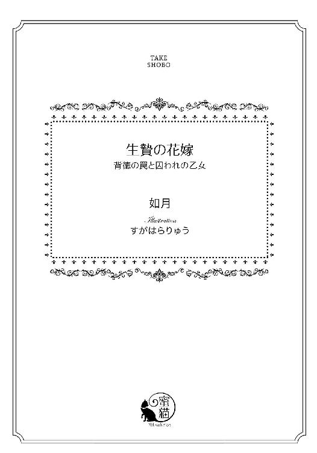
この作品は縦書きでレイアウトされています。
また、ご覧になる機種により、表示の差異が認められることがあります。
一部の漢字が簡略字で表示されていることがあります。
イラスト／すがはらりゅう
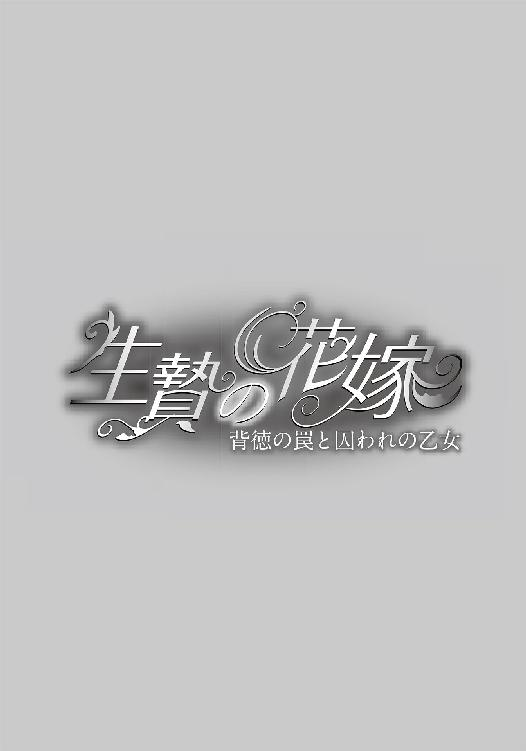
第一章
──これが貴族の暮らしというものなの......！
ヴィオラは高価な調度に同化しようと努めながら、心の中で感嘆の声を上げていた。
彼女は生まれて初めて、貴族の宴というものを見たのだ。
庶民は日々の糧にも困っているのになんという華やかさ。
広大なホールの大理石の床は、向こう正面のなだらかな階段へと続いている。
アーチ型の天井は幾何学模様で彩られ、白亜の壁には黄金の紋章が刷り込まれている。
両壁面には伯爵家先祖代々の肖像画が飾られていた。
今宵、伯爵邸では貴人たちの宴が繰り広げられている。
羽飾りのついたボンネットの貴婦人が白い手すりによりかかって、宮廷コートをまとった紳士と談笑したり、若い将校が踊る相手を見繕ったり──。
ホールの中央には楽団が軽やかな旋律を奏で、若い人々はマズルカを踊り、老夫婦たちはその周りで楽しげに眺めていた。
ヴィオラの周りにも随分人が増えてきた。
彼女は好奇心を抑えて、うつろな視線をシャンデリアの一点に留めた。
突然、ひとりの青年がヴィオラに話しかけた。
「きみ、なぜマスケラをつけているの？ ぼくと踊りましょうよ」
マスケラとは、鼻から上を隠す白い仮面だ。
ヴィオラは彼に視線も合わせない。陶器のような気配をまとってただ存在するのみ。
すると彼の周りで笑い声が上がった。
「引っ掛かったな！ そいつは人形だぜ」
友人にそう言われて、彼は顔を赤らめた。
「人形？ え......なんてことだ！ ぼくの好みだったんでうっかり声をかけちまった」
「ほお......これが自動人形というものですか？」
何事かと寄ってきた中年男性も物珍しげにヴィオラを眺めて言った。
「等身大で、まるで本物の人間のようですな」
ヴィオラはドキッとしたが、表情を一切動かさずに彼らの視線に耐えていた。
「いや、......やはり人形ですよ。マスケラをつけていますが、その白い仮面の奥の瞳をごらんなさい、瞬きひとつしやしない」
そうですとも、あなた方よりはるかに長い間、目を開けたままでいられるわ。生きるために必死に訓練したもの。
「いやあ、恥をかいたよ。この魅惑的な青い目がガラス玉ということか？ 金髪は人毛を使っているんだろうな。唇も艶めいていて美しいのに......ああ、生身の人間だったらなあ」
「造作は優れているが、年代物にしても、衣装が粗悪ですな。しかし何でも、歌ったり踊ったりする精密なものだそうですよ......、ほら、腰の所にゼンマイがありますね」
この紳士の観察眼はなかなかだ。確かにピンクベージュのドレスは、傷みの激しい古着を何とか繕ったものだ。
しかしゼンマイは実は人形を動かすものではなく、ドレスを膨らませるパニエの中にオルゴールを隠し入れ、自動人形のように見せかけているだけだ。誰かがそのゼンマイを巻いたら、オルゴールの音に合わせて人形らしく動かなければならない。
「それはすごい。舞踏会で見世物にしたくなるのもわかりますよ。しかし、珍妙な物がお好きだなあ、アレックス君は」
「五年の外遊から帰国したばかりだというから、われわれ凡人とは感性が違うんじゃないか」
アレックス・フォン・メルヴィル──それが、この自動人形を買った人物と聞いているが、ヴィオラは彼がどんな男かはほとんど知らない。彼が純真な乙女たちを十把一からげにして富くじでも引くように嫁選びをしようとしていることしか。
一本の蠟燭ももったいなくちびちびと使っているヴィオラには信じられないような贅沢なシャンデリアに、ホール全体が照らされている中で、純白のドレスに身を包んだ乙女たちが見える。
乙女たちが、父親や叔父であろう、中高年の男性に付き添われているのは、この宴が彼女らの社交界デビューだからだ。
十六か、七か......ヴィオラと似た年頃の娘が十人ほど。
白いドレスは純潔の証だ。彼女らはどの青年の誘いにものらず、ホール中央に二列に並んで、不安げな表情で立っていた。
賓客たちの噂話によると、奥の階段からアレックスが降りてきて、少女たちの並ぶ間を歩きながら、気に入った娘にダンスを申し込む、ということになっているらしい。
──花嫁選びなんて......なんだか彼女たちが可哀そう、品定めをされているみたいで。女の子を並べて選ぶなんてどんな高慢な男かしら。
ヴィオラを見ていた紳士たちはひとしきり、自動人形の薀蓄を語って、そのうちに離れて行った。ヴィオラは相変わらず視線を動かさない。
だが、視界の端に見える乙女たちの、運命の時を待つ不安な心情がひしひしと伝わってきて、ヴィオラまでが緊張してしまう。
十人ほどいるようだが、乙女たちの中で選ばれるのはたった一人なのだ。
テンポの速い音楽が止み、次に場内に軽いどよめきが起こった。
「あ、いらしたわ」
「アレックス様よ」
ヴィオラの立つ側と逆の突き当りに、居合わせた全員の注意が向けられた。白い緩やかな階段を、人々の視線を一身に浴びてアレックスが降りてきた。
黒い髪に合わせたような黒地に金モールの宮廷コートと臙脂のベルベットのブリーチズを身に着け、赤い帯に金チェーンの剣帯を輝かせて颯爽と彼は現れた。
楽曲は緩いテンポの舞踊曲に変わった。
階段から楽隊に向かって二列に並んだ乙女たちの間を、彼は歩いてくる。
階段の下で緊張した顔で待っていた一人目の令嬢が、愛を乞うような瞳で彼を見つめたが、アレックスは一礼もせず、彼女が存在しないかのように通り過ぎた。
無視された女は、屈辱で真っ赤になり、身の置き所をなくしたようにうなだれた。
──あ、ひどい。
二人目、三人目も同じように彼は冷徹な態度で斬り捨てて行った。
失望する女が増えていくたびに、残った女たちの顔に期待がみなぎっていくが、それもすぐに悲しみへと変わった。
彼は、賓客の視線を集めながらまっすぐにホールを進んで、全ての花嫁候補者の前を通り過ぎてもまだ歩みを止めなかった。
他の女性たちはみな、夫がいるはずだ。
まさか、配偶者の目の前で妻をさらってしまうの......？
さすがにヴィオラも好奇心をかき立てられて、アレックス・フォン・メルヴィルを目で追ってしまう。彼は随分近くまで来た。
乙女たちが夢見るように彼を見つめていた理由がよくわかる。
衆人の中でもひときわ目立つ長身、高い頬骨から顎への精悍なライン、まっすぐ通った鼻筋に、怜悧な黒い瞳が美しく、視線を交わしただけで、女の心を虜にしてしまいそうだ。
彼が風をまとうように颯爽とやって来た時、ヴィオラは声を上げそうになった。
──あの人を見たことがあるわ！
ヴィオラがマトリア大学の街道で大道芸をしている時、彼が通り過ぎたことがある。
随分前のことで、青年というよりはまだ少年に近い年頃だったが、土産物屋の売り子たちもカフェの女客も、みな振り返るほどの美貌だったし、気前よくお金を投げてくれたので、はっきりと覚えている。
マトリアの大学街で幾多の学生たちを見てきたが、あれほど美しい男は見たことがない。
彼はパントマイムをしているヴィオラを覚えているかもしれない、と思うと一瞬緊張したが、誰にも素顔は知られていないはずだ。
大丈夫、見破られない。
アレックスはようやく歩みを止めた。
周囲の視線は、彼とヴィオラに注がれていた。
なぜ彼が目の前にいるのかわからない。ヴィオラの真後ろに、彼の想い人がいるのかもしれない、きっとそうだ。
だが、振り向いて確かめることはできない。人形なのだから。
「踊っていただけますか、マスケラのお嬢さん」
彼はそう言って、手を差し伸べた。バリトンの美しい声で話しかけられて、ヴィオラはどきりとした。花嫁候補たちに冷淡だった彼の口から発せられたとは思えない甘美な響きだ。
そして、さっきの間の抜けた若者みたいに、彼も勘違いしているようだ。
だが、今度は、からかいの笑い声は起こらなかった。
アレックスは、人形として身動きせず立っているヴィオラの腰に手を回して、パニエに埋め込まれたオルゴールのネジを回した。
「さあ、私と踊るのだ」
彼は耳元で囁くように言った。
オルゴールが鳴りだした。
──この人、人形と知った上で誘ってる？
何を考えているのか。しかしオルゴールは気怠く甘い音色でワルツを奏で始めた。
ヴィオラは覚悟を決めた。
かくん、と肩の関節を動かした。なめらかな動きではいけない。
関節に球体が嵌っているかのように、とぎれとぎれの動きで手を伸ばす。
アレックス・フォン・メルヴィルが差し出した手とは少し見当違いの方向へ──。
人形なのだから、目も合わせない。
すると彼の大きな手がヴィオラの手を導くように握りしめて、それに口づけた。
ヴィオラは手袋をしていたから、その唇の感触も温かさもわからなかった。
視線を求めるように、彼はヴィオラの顎に指を添えて自分へと顔を向けさせた。
視線が合った。
ヒールの高い靴を履き、飾りのついたかさ高いボンネットを被っているのに彼の背にはまだ届かない。腰をぐいと引き寄せられた。
彼は背を少し屈めてヴィオラの顔を覗き込む。
彼の頬にはらりと黒髪が垂れて、深い影を落とす。
その虹彩はまさに黒曜石だ──古来刃物として使われるほど鋭く危険な、という意味で。
切れ長の目、形よい眉は知的でどこか冷たく、整った鼻すじとほどよい厚みの唇がそれを補うような甘さを添えている。
どくん、とヴィオラの心臓が跳ねた。
人形なのに、脈が激しくなったら困るのに。彼から目を逸らして人形になりきらなくてはならないのに、強い眼差しがそれを許さない。
じりじりとゼンマイの巻き戻る音が聞こえる。
ポロン、ポロンとオルゴールがワルツを奏でている。
ヴィオラは硬い動きで半回転した。
不自然な、ぎくしゃくとした動きのヴィオラを面白がるように、彼もテンポを合わせてワルツを踊る。ヴィオラは相手のことなど関係なく勝手気ままに動く。人形なのだから。
やがて余興だと思い当たったように、場内の人々から軽い笑い声が起こった。
ホールの楽団の演奏も終わり、人々がひそひそと言い合うざわめきと、古いオルゴールの音だけが流れるなか、ヴィオラは人形として、ぎこちなく踊った。
やがてオルゴールは速度を落とした。ネジの巻きが尽きたようだ。
ヴィオラはそれに合わせて動きを鈍くする。
彼はもう彼女をリードするのをあきらめたかのように、傍らで動きを止めていた。
ことん......、かつん、と靴を鳴らしてヴィオラは動きを完全に止めた。
──とてもうまく踊れたわ。人形そっくりに。
反応に困ったような、ぱらぱらとまばらな拍手が聞こえた。
「ありがとう、みなさん。私は彼女と結婚します」
伯爵のご令息、アレックス・フォン・メルヴィルはそう言って、いまや彫像のように身動き一つしないヴィオラに口づけた。
──えっ？
人形だから逃げることも押しのけることもできない。
温かく官能的な唇がかぶさっている。不覚にもヴィオラが職務を忘れて叫んだとしても、その声は呑み込まれてしまっただろう。
悲鳴のようなざわめきがホール中から聞こえてきた。
未来の伯爵夫人を夢見ていた乙女たちの慟哭だろうか。
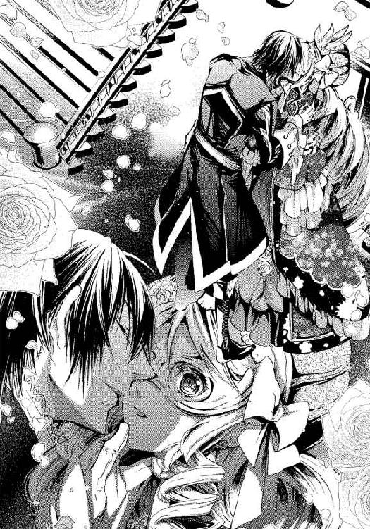
数秒の口づけを受けている間も、ヴィオラは目を開けたままだ。うっとりとしなだれかかるわけにはいかない。人形に徹して耐えた。
「アレックス、いい加減にしないか！ これがどういう宴かわかっているのか？」
そう言いながら、壮年の男が賓客たちをかき分けるようにしてやってきた。
髪も瞳も彼と同じ黒、いや、髪には少し白い物が混じり始めてきたところか。
白いウエストコートに臙脂の長いコートを重ね、絹のブリーチズに革の靴。
肩からは、赤地の帯に金の刺繍を施した懸章を掛けていた。壮年とはいえ、鍛えられたたくましい体つきをしている。マトリアの領主である、カールマインツ伯爵だ。
「ですから、もう選びましたよ、父さん」
アレックスは表情を変えずに言った。
「私は、この自動人形を花嫁に選んだのです。どうです、美しいでしょう」
一瞬の沈黙の後、怒鳴り声が響いた。
「ふざけるな！ 気でも違ったか」
伯爵は苛立ちを通り越して、怒りに震えていた。
しかし、その息子は頑として折れようとはしなかった。
「そのようですね、今後の宴でも、私は何度でも彼女を選びます。ですから、もうこのような無意味なことはおやめください。みなさん、宴はこれでおしまいです」
彼がそう言って両手を挙げると、白いドレスの乙女のひとりがやり場のない怒りやくやしさのにじんだ涙の目をヴィオラに向け、それからまっすぐに出口へと向かった。
それを合図に、白けた雰囲気で紳士淑女らがいっせいにホールを出ようとした。
いくらかの混乱と停滞を伴いながらも、お開きとなって、ホールには楽団と従者と当事者たちだけが残された。
「どういうつもりだ！ いったい何が気に入らないんだ！ 一日も早く身を固めて世継ぎを作れと言っているのに。いつまでも昔の小さな事件にこだわって踏みとどまって、情けないとは思わんのか」
怒りを抑えきれないらしい伯爵の言葉に、アレックスは暗い視線を返した。
「私にとっては終わっていないし、あれ以来生きている実感すらわかない。だから花嫁には人形がふさわしいんです。それとも、その気もないのに妻を娶って、伯爵家のための種馬になれと？」
「何を言う、この......っ」
伯爵が拳を振り上げようとして、それを途中で下ろした。思いとどまったかに見えたが、彼は興奮で顔を赤くしながら、傍らにいた従者らしき男に言った。
「この人形を壊してしまえ、椅子でも楽器でも花瓶ででもなんでもいいから今すぐに！」
楽器と聞いて、楽団員たちが青ざめた。商売道具を壊されたらたまらないだろう。
「は、お館様」
従者は一礼すると、いったん下がり、壁際に置かれていた椅子を掴んで戻ってきた。
──あれでわたしを叩き壊すつもりなの？
ヴィオラは驚いたが、かろうじて無表情を保った。
従者が椅子を振り上げた。
あんなもので力いっぱい殴られたら、大けがをしてしまう。
だが、ヴィオラは動揺を抑えて、身じろぎもせずにいた。
視線を虚空に泳がせて。
──うまくおやりよ、死んでもしくじるんじゃないよ！
酒焼けしただみ声が彼女の頭に繰り返し響いていた。
いつまで人形でいられるかわからない。でも意識のある限り、演じ続けなくては。
ヴィオラは腹をくくった。
従者が椅子を持つ手に力を込めた──。
＊ ＊ ＊
「たった三日、いや二日もちこたえてくれればいいんだよ、ヴィオラ」
人形師のテオが痩せこけた無精ひげの頬を震わせて言った。
彼はヴィオラ母子が住んでいる粗末な長屋の家主だ。
ここは人形工房で、テオの作った──ほとんど売れない──人形たちが雑多に並べられている。今も作業の最中だったようで、革張りのボディや頭が作業台の上に転がっている。
彼はよく働く。昼も夜も休みなく人形を作っているが、思うように売れず、ヴィオラたちが住んでいるあばら屋の家賃がなければ食っていけないありさまだ。
彼の女房のドーラは町でも評判のきつい性格で、家賃を一日でも遅らせようものなら恐ろしい剣幕で相手を罵倒し、足下にある道具を蹴散らすこともある。
それでも、長雨続きで実入りが悪くてどうにもならない時は、テオがとりなして──彼は臆病な恐妻家だというのに──何度か家賃の支払いを日延べしてくれた。
こんな時にしか、日頃の恩に報いられないヴィオラだ。
「でも、明日なんて、急ですね。いったいどういういきさつなんですか？」
するとテオは店の奥からこちらを窺っているであろうドーラに聞こえないよう、小声で説明を始めた。
「わしが長年かけて作った自動人形を知っておるね。そうさ、おまえさんがモデルになってくれたこいつだ。出来上がるまでに随分金をつぎ込んでしまった」
テオが慎重に白い布を取り払うと、ヴィオラも顔なじみの人形が現れた。
肘掛椅子に座っているが、立てばヴィオラと同じ背の高さだ。縦ロールの金の髪に、ドレスと同じピンクベージュの絹サテンのボンネットが被せられている。
ドーラは嫉妬深いので、ヴィオラがモデルということは内緒だったし、残念ながら、人形の顔はテオが言うほど彼女に似てはいない。それにデッサンの狂いを誤魔化すために、マスケラという白い仮面をかぶせてある。
ドレスは人間の古着を何とか手に入れてヴィオラが飾りつけ、スカートの中にはパニエという枠組みも入っている。さらにペチコート、花飾りのついた帽子、レースの手袋、模造石の首飾り、布製の靴など、とにかく等身大なので金がかかった。大きいだけが取り柄ではない。
ゼンマイ仕掛けで、ネジを巻くと動き出す。いくつかのネジを使い分けることでおじぎをしたり、手を挙げたり首を動かしたりするという、人形職人の夢を懸けた大作だ。
しかし売れもしないのに、材料費ばかりかかって、とドーラにさんざん不満を言われて、ヴィオラまでが肩身が狭いような気がしていた。
「ドーラのやつがね、上客が来た際に、こいつを売りたい一心で音楽に合わせてワルツを踊ることもできるなんて大ぼらを吹いちまったんだよ。オルフ神父の口利きで借りた地獄の借金がふくらんじまってどうしようもなかったんだ」
「地獄でお金を借りたんですか！」
ヴィオラは青ざめた。地獄とは賭博と淫行と暴力の代名詞となっている、ギニョン地区の別名だ。窃盗、恐喝、売春、......あらゆる犯罪がそこに集まり、法の手も届かない所なのでそう呼ばれている。
あの界隈は、ヘルに身を落とすか、賭博で一攫千金を狙うしかないまでに追い詰められた人々のるつぼである。ヴィオラにとっても他人事ではなく、いつでも足下で口を開けている地獄の門のような恐ろしい場所だ。
「商売を続けるためにはしょうがなかったんだよ。材料がなけりゃ人形を作れないから」
家主のテオとドーラ夫婦がそんなところで金を借りるほど困っていたとは知らなかった。
家賃を待ってもらったことのあるヴィオラも一抹の責任を感じる。
「客はこの人形を、どうしても明日届けろというんだよ。それで少しの間入れ替わってもらいたいんだ、顔ももともと同じだし、うまくいけば大金が入る。もちろん礼はする。おまえさんの母さんにもいい薬を買ってやれる」
それはヴィオラの最も弱い部分だった。母さんを元気にしてあげられるならどんな辛いことだって耐えられる！
「あの......でも、それって、人を騙すことになるんじゃ......？」
勇気をふりしぼって、ヴィオラはそう言った。どんなに恩があっても、どんなに金が欲しくても、他人を陥れるような罪だけは犯してはいけないのだ。
「それは大丈夫だ。お客は明日どうしても踊る自動人形が欲しいと言うが、わしの方もちょっと手を加えればそのように直せる。おまえさんは、時間を稼いでくれりゃいいんだよ。二日後にはちゃんと人形を届けるから、相手を騙すことにはなりゃしないさ」
ヴィオラはほっとした。痺れを切らしたのか、ドーラが店の奥から顔を出した。彼女は太った体を揺さぶり、赤茶けた縮れ髪を振り乱して立ちあがった。たるんだ頬がひくひくと動いているのは、癇癪を起こしかけている徴だ。
彼女を怒らせてはまずい。ヴィオラは彼女に十分聞こえるようにはっきりと言った。
「ええ、テオおじさん。やりますわ、喜んで。......でももしわたしがうまくやれたとして──二日後、わたしはどうなるんですか？」
色よい返事に気をよくするかと思ったのに、ドーラは顔をしかめて言った。
「もしうまくやれたら、とは何だい？ 必ず、と言うところだろう、この恩知らず！」
ドーラの濁った怒声に、テオがびくっと体を縮めた。言い損じてごめんなさい、とヴィオラは心の中でテオにあやまった。
「はい、もちろんわたし、必ずやりとげてみせますわ。これでも毎日、人形のふりをして日銭を稼いでいるんですから」
「あたりまえだ、最初っからそう言えばいいのさ。ああ、ようやくこの邪魔っけな人形を見なくてすむと思うとせいせいするよ」
ドーラの声が少し機嫌よくなったのがわかる。
テオがようやくヴィオラの質問に答えた。
「おまえさんが二日間、人形になりきってくれたら、わしは自動人形の手入れに来ましたといって訪ねていくから、その時に本物の人形とこっそり入れ替わればいいんだよ。大きなカバンを持っていくからその中に入ってな」
「わかったわ......。明日、わたしがそのお邸に届けられるのね？」
ドーラが割り込むように言った。
「そうだよ。自動人形を届けると代金がもらえるってわけだから、うまくおやりよ。死んでもしくじるんじゃないよ！ しくじったら親子ともども追い出すからね」
この言葉は、呪いの文言のように、ヴィオラの耳に焼きついていた。
＊ ＊ ＊
伯爵が監視する中で、白シャツと黒いベスト、お仕着せの短いコートを着た従僕が椅子を持ち上げ、ヴィオラに狙いを定めた。
彼の手が少し震えていた。主人の命令であっても、人の形をした物を破壊するのは心が痛むのかもしれない。
ひゅん、と風を切る音がした。
ヴィオラは焦点を合わせず、目を開けていようと思ったが無理だった。
思わず目を閉じた瞬間、鈍い音がした。
従僕は間違いなく椅子を振り下ろした。
しかし衝撃も痛みもなかった。
「ひっ、......アレックス様？」
マスケラに紛れて、ヴィオラは少しだけ視線を動かした。
いったい何が起こったのか。自分はなぜ痛みもなくまだ立っていられるのか。
目の前に立ちはだかっている影は何なのか、見極めるために。
金のチェーンの飾帯がしゃらりと鳴るのが聞こえた。
視線を上げると、かすかに苦悶を浮かべた横顔が見えた。
椅子は中空で止まっていた。ヴィオラを打擲するはずだった椅子の脚を、黒い袖と白い手袋がくい止めているのが見える。
伯爵の息子、アレックスが左腕で椅子をかわしたのだった。
彼はヴィオラと従僕の間に割り込んで、身を挺して彼女をかばったらしい。従僕は真っ青になって椅子を床に下ろした。
「だ、だ、大丈夫でございますかっ。何ということを......アレックス様！」
少し離れて顛末を見守っていた従者たちがわらわらと駆け寄ってきた。
鈍い音は、アレックスの腕を椅子が直撃した音だったのだ。
彼は端麗な顔を少しゆがめていた。
血は出ていないが、相当な痛みが彼を襲っているはずだ。
彼が心の中で何と戦っているのかわからなかったが、ぐっと奥歯を噛みしめているようだった。怒りを抑えているのかもしれない。
ヴィオラの鼓動が激しくなった。
叩きのめされる恐怖というよりも、アレックスの行動に。
美しい男が、まるで恋人を護るかのように自分をかばった──。
ヴィオラは不覚にも自分が「人形である」ことを忘れそうになっていた。
アレックスは切れ長の目で、父親を睨んだ。
伯爵は、息子の思いがけない行動に言葉もないようだ。呆れを通り越して、不安げだ。
救われたヴィオラから見ても彼の行いは常軌を逸していると思う。
従僕が伯爵の足元にすがりついて言った。
「お許し下さい、お許しください......旦那様、わたくしめは──」
人形の破壊を仕損じたばかりか、「ご令息」を殴打してしまった彼は憔悴のあまり、立ち上がることすらできない。
「八百万アウロ」
とアレックスが言った。
「......は、......はい？」
従僕が汗びっしょりの顔を上げた。アレックスが彼を見下ろして言った。
「この自動人形の値段だ。壊したらおまえの給金から支払わせるぞ。一生かかってもな」
そんな値段がついていたとは！
欲深いドーラがあることないこと吹聴して、無理にでも売りたがるはずだ。
使用人の給金ではおそらく一生かかっても払えないだろう。
伯爵がゆらりと動いたと思うと、こめかみに青筋を立てて怒鳴った。
「ばっ、馬鹿者！ 何をやっているんだ、おまえは」
しかし語調は先刻より緩やかで、息子の愚行への怒りは薄れ、むしろ大事なかったことに安堵したように見えた。
「勝手にしろ！ もう知らん。それから......、おまえはクビだ！」
伯爵は従僕に怒鳴りつけると大股で歩き、ホールを出て行った。
窮地を脱することができると、ヴィオラにも冷静さが戻ってきた。
──なぜ？ アレックス様は、何を考えているの？
助けられたものの、人形より自分の身を粗末にするなんて、愚かにもほどがあるとヴィオラは思った。当のアレックスは涼しい顔をして使用人にこう言った。
「ついでにその椅子も、ガノワーズ工房の作で、三百万アウロ。どちらも壊したら合計一千百万アウロだ」
「ひ、ひいっ、お許しください、どうか──」
従僕にとってはとんだとばっちりだ。彼は主人の命令に従っただけなのに。
ヴィオラは他人事ながら、彼に同情せざるを得なかった。
「よかったなあ、私の腕がちょっと痛いくらいで済んで」
皮肉たっぷりにアレックスはそう言って、これ以上ない冷たい微笑みを浮かべた。
＊ ＊ ＊
──また、あの夢だ──。
銃口が向けられ、カチリ、と引き金を引く音が聞こえた。
「にげろ！」
アレックスが叫ぶと同時に銃声が聞こえた。
弟は向こうの扉から、アレックスは反射的に男の脇下へと体を滑り込ませて飛び降りた。
一、二、三......と頭の中で数えながら、馬車の下へと潜り込む。
おちつけ、おちつけ......！
幼いアレックスは自分に言い聞かせた。
フリント・ロック銃は連射できない。
次の弾をこめるのに間があるはずだ。
彼はひじで這うように馬車の下を進む。
六、七、八......。
「おいっ、何をするんだ！ そいつらは金蔓だぞ！ 撃つな」
馭者席から慌てた声が聞こえた。彼には殺意はないようだ。
「やめろ、ザッカーリ！ ......うわぁ、銃をこっちに向けるなよ！」
発砲した男はザッカーリというらしい。内輪もめの間にアレックスは馬車の下をくぐって弟の降りた側に到達した。
「コンラート、けがはないか？」
「に......にいさん......！」
弟はうずくまって真っ青な顔をしていたが、兄を見るとしがみついてきた。
アレックスはその小さな背中をよしよし、となだめる。
後方で、低く、冷たい声が聞こえる。ぼそぼそとしたしゃべり方だ。
「新しい銃が手に入ったので、試しうちをしているのさ、邪魔をするな」
アレックスは弟の手を掴んで言った。
「立てるね？ いくよ」
馬車を盾にして、兄弟は走りだした。
とにかく細い路地へ逃げようと。
九、十、十一──アレックスは数え続ける。
馭者の声が聞こえた。
「だけど、身代金を分捕る大事な人質だからよせ──うあっ」
また銃声がした。どさりと何かが崩れる音がした。馭者が撃たれたのだ。
相手は仲間でさえも撃ってしまう悪魔だ。
二発目までの弾込めに十二秒。
二人は必死に走った。悪魔は笑いながら追いかけてきた。
やがてアレックスの足が重くなり、必死にもがいても全く前に進まなくなる。
これは夢だ。だから大丈夫だ。
目の前が真っ暗になっても、まだアレックスは走ろうとあがいていた。
どこまでも、どこまでも、足音が追いかけてくる。
そして、銃弾が放たれた。
「......っ」
心臓を撃ち抜かれたような気がして目を覚ました。
暗闇に目を凝らして、アレックスは深いため息をついた。
──また、うなされた。
ひどい寝汗だ。着替えるべきだろうが、身動きするのもおっくうなほど疲れている。
彼は今でも頻繁に、あの日の夢を見る。
弟と共に誘拐され、追い詰められ、殺されかけた時の夢を。
あの男を見つけて、殺したら、うなされることもなくなるだろうか。
いったん目覚めると、次の眠りに入れないので参ってしまう。
目を閉じて、空しい努力をしようとした時、ひたひたと近づく足音が聞こえた。
あの人形が夜中に歩き回っているらしい。
「思ったより早く正体を現したな」
アレックスは闇を見つめて呟いた。彼女が何の目的で、人形になりすましているのかわからないが、しばらく泳がせて様子を見るつもりでいた。
金持ちの家に入りこんで物盗りをしようとでもいうのだろうか。
気配を探って耳を澄ませていると、ベッドの垂れ幕が開いた。
人形を装っている女は、アレックスの枕元まで近づき、彼の左腕を手で探った。
それから、どこかへ行くとまた戻ってきて、今度はランプを灯した。
彼女の意図がわからない。刺客なら灯りなどつけずにやるだろう。
アレックスが寝たふりをしていると、突然左腕に濡れた物が触れた。
彼の左腕は従僕の振り下ろした椅子を受け止めたために、腫れあがっていた。治療もせずに眠ってしまったが、その痛みが悪夢を誘発したのかもしれない。
人形は暗い中、どうやって探り当てたのか、部屋の片隅にあるキャビネットの水差しから洗面台に水を注ぎ、そこでタオルを絞り、アレックスの腕を冷やしている。
そしてタオルが温くなるとまたキャビネまで、それを冷やしに行く。
アレックスは次第に不思議な気分になってきた。
熟睡できずに焦燥感に見舞われるか、悪夢を見てうなされるかのどちらかしかなかったアレックスの夜が、珍妙な侵入者によって変えられようとしている。
まもなく夜が明けるだろう、という刻限まで彼女は一睡もせずに繰り返した。
アレックスの腕の、熱っぽくうずくような痛みはおさまっていった。
それと同時に、悪夢の後の泥沼にいるような重苦しい気分もなくなっていた。
朝になったら彼女は、何食わぬ顔で長椅子に戻って人形のふりをするだろう。
温くなったタオルに、彼女の細い指がかかった時、アレックスは右手でその手を掴んだ。
息を呑む声が聞こえた。
アレックスは目を開ける。
漆黒の眼差しで、人形の目をとらえた。
介抱の邪魔になったのか、彼女はマスクも手袋も外していた。
アレックスは初めて彼女の素顔を見た。
白い肌に、豊かなウェーブを描く金色の髪、長く濃い睫毛、南国の海のような色をした大きな瞳、薄紅色の頬。バラ色の小さな唇は半ば開いて、言葉を探しているように見える。
舞踏会に来た令嬢たちと並んでも突き抜けた美しさだった。
アレックスの心臓がどくん、と音を立てた。全身の血が熱くなるのを感じた。
彼は今まで、花嫁候補者たちには全く心が動かなかった。
美しくはあっても、みな同じように見えてしまう。
しかし目の前にいる少女は心に迫ってきた。凍っていたアレックスの魂が、突然弾け散ったような衝撃さえ受けた。
いったい何者だろう？
彼女は、アレックスが夢現なのか、正気なのか見極めようとしているようだ。
こんな美しい眼差しをどこかで見たことがある。
どこで？
いつ......？
全てが謎だ。わからない。
しかし、それが何だというのだ？
彼女はずっと閉ざされていた彼の心の闇を照らす、鮮烈な光だ。
「おいで」
彼は低い声でそう言った。
そしてそっと右手で彼女の首筋を引き寄せた。
彼女の瞳に戸惑いの色が見える。
唇が触れそうになったその時──。
バタン、と勢いよく扉が開けられた。
軽やかな足音が部屋に駆け込んできた。
「おはようございますっ、アレックスさま！」
あどけない少女の声が寝室に響いた。
第二章
丸い天蓋からベッドをぐるりと囲むベルベットの垂れ幕の内側で、ヴィオラは途方に暮れていた。アレックスが目覚める前に人形に戻るはずだったのに、彼と目が合ってしまった。
引き寄せられて口づけられる、と思った瞬間、誰かがやってきた。
おそらく朝の支度をしに来たメイドだろう、寝室をパタパタと歩き回り、カーテンを開けるシャッ、シャッという歯切れのよい音が聞こえる。
「さあさ、おきてください、朝ですよっ」
メイドはそう言って全ての窓のカーテンを手繰り寄せて部屋を光で満たし、さらにベッドの垂れ幕を勢いよく開いた。
「アリサ......やめろ、まぶしい」
アレックスがかすれた声で言いながら目を細めた。
彼の枕元に立つヴィオラの姿も陽光に照らされた。もはや隠れようもない。
「あれっ？ おきゃくさまでしたか？」
少女は無邪気な声を張り上げた。
どうしました、とその後ろからやってきた白髪交じりの男が覗き込む。
執事だろうか、黒い服の紳士がヴィオラを見ると一瞬沈黙し、それから嬉しそうに言った。
「これは、坊ちゃま、......おめでとうございます」
それから、奇妙な間があって、アレックスが呆れたように言った。
「ラントン、朝の挨拶なら『おはようございます』だろう」
「アレックスさまにおよめさんがきたのですか！ そうですよね？」
メイドがうきうきとヴィオラを見つめた。はあ、と溜息をついてアレックスが言った。
「よく見ろ、そいつは自動人形というんだ。触るんじゃないぞ、アリサ、おまえが触ると何でも壊してしまうからな」
「アリサよりおおきいです......これがお人形なんですか？」
「そうだ、人形だ」
「でも、どうしてここにお人形を立たせているのですか、アレックスさま」
「さあ......？ 寝る前は長椅子に座らせたのだがな。誤作動だろう、明日人形師が点検に来ると言っていたから調べさせる。放っておいたら寝首を掻かれるかもしれないからな」
──まあ、ひどい......！
しかし、約束通り、テオが来る手筈になっているらしいことに、ヴィオラは安堵した。
アレックスも不具合だと思っているようだし、助かった。
もう二度とヘマはしまい、とヴィオラは固く決心した。明日になれば家に帰れるし、母さんに良い薬を買ってあげられる。
アレックスはベッドの上に半身を起こし、伸びをすると言った。
「人形師が言うには、ねじさえ巻いたら自分で歩き回れるらしいぞ」
彼はヴィオラの腰のゼンマイを巻いて言った。
「さ、長椅子まで歩くんだ」
──えっ、そういうことになっているの？ 聞いてなかった。
ヴィオラは驚いたが、話を合わせなくてはいけない。さ、行けと、長椅子に向けてアレックスがヴィオラの背を押した。
オルゴールの音楽に合わせて、彼女は大道芸でいつも演じているようにかくかくとした動きで椅子までたどりついた。
「......すごいですっ」
アリサと呼ばれた少女は疑いもしない様子だ。
「そうでございましたか......わたくしはてっきり昨夜の舞踏会でとうとうご婚約が成立したのかと思ったのですが──」
どうやら老人の方も騙しおおせたようだ。
「もうろくするのはまだ早いぞ。ラントン。私は結婚しないと何度も言っているのに」
ラントンと呼ばれた老人は軽く肩を落とした。
「旦那様はがっかりなさったでしょうな」
「その人形を花嫁に選んだと言ったら激怒していたな」
舞踏会では冷徹で変わり者に見えたアレックスが、自室であどけないメイドや老いた執事と会話しているときは、思いがけず柔らかな雰囲気であることに、ヴィオラは気づいた。
──あなたたち、ご主人様が好きなら、どうか腕のけがに気づいてあげて。
昨夜、ワインカラーの垂れ幕に覆われたベッドから低い呻き声が聞こえた。
寝言にしては少し苦しげなのが気になって、ヴィオラはそっとベッドに近づいた。
カーテンに耳を押しつけて息を殺すと、乱れた呼吸音が聞こえた。
彼女は思い切ってベルベットの垂れ幕を開いた。
彼はひどくうなされていた。どこかが痛むのかと思って調べると、左腕が腫れあがっていた。それはヴィオラが負うはずだったけがだ。
──ちょっと痛いだけで済んだ、なんて嘘だわ。
手当もせず放っておくなんて無頓着な、と思った。彼のけがに誰も気づかず、ひとりで押しこめているのだと思うと、ヴィオラの胸がきゅっと痛くなった。
彼のことを本気で心配する人が近くにいたらいいのにと思う。
父親とはうまくいっていないようだった。
舞踏会で、彼は『生きている実感すらない』と言っていた。
どうしてそんなことを言うのだろう。これほど恵まれた暮らしをしているのに。
富も美貌も持っているのに、黒い虹彩の中に心の痛みも体の痛みも押し込めて涼しい顔をしているアレックスのことが気にかかる。
──どうか、彼の痛みに気づいてあげて。
しかしそれを口に出して言うことはできず、ヴィオラは心の中で叫ぶしかなかった。
そのうちに、三人とも寝室からいなくなった。
朝食をとりにいったのだろう。
ヴィオラはふう、と長いため息をついた。気疲れすることばかりだ。
──でも、がんばらないと。テオさんのためにも、そして母さんとわたしのために。
その日暮らしがせいいっぱいで、いつ歯車が狂ってしまうかわからない不安な日々だけど。
ヘルの色町にだけは身を落とすまいと必死で働いてきた。
母がいればこそ、より強い気持ちで、路上で芸を見せるという苦労にも堪えてきたのだ。
むしろ、ひとりだったら心の糧を失って、あっという間に転落してしまうかもしれない。
どうか、この仕事を無事終えたら、少しは暮らしが楽になりますように。
＊ ＊ ＊
その昼下がり。
ヴィオラの目の前で、くすん、くすん、と三つ編みの少女がべそをかいていた。
ここは伯爵邸から二キロほど離れたアレックスの邸だ。
「あんなにがみがみおこらなくったって......もういやになっちゃいます」
アリサは、アレックスの寝室の掃除にやってきて、ヴィオラを相手に愚痴を言い始めた。人形なので少々悪口を言っても口外される心配がないからだろう。
「あたしだっていっしょうけんめいやってるんですよ」
ヴィオラから見ても、彼女は本当に頑張っていた。ヴィオラより三歳ほど年下だろう、メイドとして働き始めて一年か二年といったところだろうか。
底がゆるいカーブになっているメイドボックスには、彼女の仕事道具の全てが入っているようだ。最初、アリサは暖炉の灰かきをして、燃えカスや古い灰を木箱の右半分に入れた。
そこはふるいになっていて、箱を揺りかごのように動かすと、細かい灰だけが内箱に落ちて、粗い燃えカスは残る。
下に落ちた灰は、灰汁抜きや石鹸として使うのだろう。
その次に、暖炉の火除けになっている鉛入りガラスの衝立を磨き、暖炉の鉄金具を黒鉛で磨く。ブラシも布も皮もみんなメイドボックスから取り出される。
暖炉からいちばん遠い壁面は書庫になっていて、貴重な書物が収められているので、アリサは近づかないように言われているそうだ。
壁面を覆うほどの本は、アレックスが集めたらしい。建築学や、地質学や、経済学、哲学、マトリア地方の気候、作物の記録──彼は勉強家のようだ。
伯爵は後継ぎとしてのアレックスの態度を非難したが、彼は本当はマトリアの将来について、真面目に考えているとヴィオラは思う。
アリサが小さな体で、あまりに健気に働くので、ヴィオラは人形のふりをして動かないでいるのが申し訳ないくらいだった。
いちばん行儀に厳しいのはメイド頭で、次に口が辛いのはキッチンメイドの誰それ、などと愚痴を言う間もアリサはテレピン油とブラシで床をせっせと磨いていた。
「だんなさまのお邸はもっときびしかったんですよ。だって、あたし、田舎からやってきてたった三日でお暇をだされてしまったんですよ。三日でなにがわかるってんです？」
だんなさまというのは、伯爵のことだろう。
「アレックスさまがここに引き取ってくれたので、田舎へかえされずにすんだのです」
──まあ、目下の者にはやさしいのね。伯爵様には反抗的なのに。
感心して聞いていると、ふとアリサがこちらを見た。
「お人形さんは、ほんとうに聞いてくれているようにみえますね」
油断してはいけない。
アレックスの看護をしようと邪魔な手袋やマスケラをはずしたままなのだった。
小道具がはずれたのも誤作動ということでそのままにされているので、目の動きや表情まで見えてしまう。
床を磨き終わると、彼女はメイドボックスを書棚の前に置き、その上にのぼって背伸びをした。書棚に近づいてはいけないはずなのだが、何か気になるものを見つけたらしい。
しかも踏み台にしている箱の底は緩いカーブなので不安定だ。
──危ないわ。
手を差し伸べて支えたい気持ちをこらえて、ヴィオラがはらはらして見ている前で、彼女は書棚の隙間にはめ込まれた手文庫を取り出した。
「あっ」
アリサの体が揺らぎ、その手から寄木細工の平たい箱が滑り落ちた。
騒々しい音がして箱は床に落ちたが、アリサはぴょんとボックスから床に飛び降りて無事だった。ヴィオラは腰を浮かせて駆け寄る寸前だったが、アリサには見られなかった。
「ああ～、たいへん」
アリサは床にうずくまると、落とした手文庫を拾った。寄木細工の蓋がはずれて、黒ずんだ紙が飛び出し、書棚と床の隙間に挟まっていた。
「これ、なんだろ？ でもこわれなくて、よかった」
アリサは落ちた紙には気がつかないようで、紙を拾わずに、はずれた蓋を元に戻して寄木細工を雑巾で磨いた。そして今度はボックスの踏み台は使わず、彼女が手の届く高さに戻した。
──元の場所に戻してないわ。紙も落ちたまま。アレックス様に叱られないかしら？
「おそうじおわり！」
アリサは嬉しそうに声を張り上げると、ヴィオラの隣にやってきて座った。
そしてエプロンのポケットから皮製の小さな針ケースを取り出し、白絹のクラヴァットを縫い始めた。表裏の絹地でレースを挟み込んだ所がほつれている。
「ラントンさんは、あちらで家令をつとめていたのに、目がわるくなって手紙を読むのがむずかしくなったからこっちへ移ってきたんですよ。年金をもらってよそへ行ってもよかったんですけど、アレックスさまがおよめさんをもらうまでは引退できないって」
それで、おめでとうございます、なんて勘違いなことを言ったのだ。
「だんなさまは、結婚しろって言って、アレックスさまは断る、ずっとそのくりかえし......あっ、いたい」
針で指先を突いて、アリサが小さく叫んだ。彼女は縫い物は苦手なようだ。糸の目が揃わなかったりせっかく縫ったのにレースが外れてしまったりしてまた解くはめになる。
なぜ彼は結婚したがらないのだろう、と思ってヴィオラは耳を澄ませていたが、やがて静かな寝息が聞こえた。
──あら、眠っちゃった。
片時も休まず彼女はよく動く。そして純真だ。
ヴィオラはそっと立って、アリサが気づかず、落ちたままになっていた紙を拾った。
手のひらより少し大きい紙は、銀筆デッサンのように黒ずんでいたが、母子像のような姿がぼんやりと映し出されている。
──これ......、お父さんのカメラ・オブスクラと似てる。
それは、油絵でも水彩画でもなく、光を用いて正確に形を写す技法だ。感光させるために薬品に紙を浸す処置を施してあり、長い月日によって黒ずんでしまうのだ。
母が大切に持っているその写し絵は、ヴィオラにとって父の記憶を留めるたった一つの宝物なのに、今はもう鮮明に父の姿を留めてはいない。
伯爵もカメラ・オブスクラを持っているのだろうか？
写し絵の画像は、アレックスと伯爵夫人かと思ったが、子どもの髪の色は明るい。
──アレックス様ではないわね。
余白に手書き文字で女の名前が書かれていた。
ヴィクトリア──。
この女性か、赤ん坊が女の子なら、その子の名前かもしれない。
紙の上端から女性の顔の上半分まで、広い範囲に渡って茶色く変色しているので顔立ちはわからない。その染みを見つめながら、それが何かということにふと思い当たって、ヴィオラは悪寒を覚えた。
──血の痕......？
一度そう思うと、どうしても血痕にしか見えなくなり、怖くなって慌てて箱にそれを入れた。
そして、手文庫を元の段に戻した。
こんな盗み見をして、何をしているんだろうとうしろめたい気持ちになった。
きっと、アレックスはアリサの失敗を叱らないのだと思う。彼女は嘘をつかないから。
箱の位置が違っていたとしても、紙が落ちていたとしても、悪意はないとわかるだろう。
──嘘をついているのはわたし......。
ヴィオラの心がかすかに疼いた。騙すつもりはないなんて言い訳に過ぎない。
彼女は長椅子に座り直し、繕い途中のクラヴァットを見つめた。
うまく繕えているとはいえない。これでは、厳しいメイド頭には叱られるかもしれない。
ヴィオラは、アリサの手からそっと布を取り上げた。
絹のクラヴァットはアレックスのものだろうか。
昨日の騒ぎでほころびたのかもしれない。
ヴィオラはアリサを起こさないようにこっそり縫った。縫い物は得意だ。
レースを丁寧に挟み込んで、糸が表に出ないように細かく縫い付ける。どこがほつれていたのかわからないくらいにうまくできた。
糸と針はそのままクラヴァットにつけて、アリサの手にそっと戻した。
アリサは目覚めると、
「あれえ、いつのまにかできてた！ はじめてうまくできました」
と嬉しそうに言って出て行った。
＊ ＊ ＊
その夜、ラントンが来客を告げ、アレックスは出ていった。
そしてヴィオラひとりだけが、寝室に残された。
寝室には昼間ほとんど人が来ないし、来てもおっとりしたメイドのアリサか目のあまりよくない老いた元家令だ。
ヴィオラはここに来てから食事を全くとっていないが、空腹には慣れている。
思ったより簡単に二日目も無事に越えられそうで、ヴィオラは安心した。
明日、テオがやって来て本物の人形と入れ替わることができたなら──。
ヴィオラはうきうきと考える。
まず、報酬をもらって母さんの薬とご馳走を買うのだ。
人形の代金として八百万アウロも支払ったと、アレックスは言っていた。報酬の取り決めはしていなかったが、百分の一の八万アウロだとしても、随分楽になる。
待ってて、母さん。
これが終わったら、すきま風の吹くあのあばら屋に帰って、白塗りとマスケラで顔を隠して大学の街で大道芸をする、いつもの暮らしに戻るのだ。
アレックスには顔を見られているから、もう二度と会わない。
当然のことなのに、そこに思いを馳せたとき、胸がちくんと痛くなった。
人間として出会っていたらどうだったのかな。
そんなふうに考えて、すぐ首を振る。
──だって、わたしは彼を欺いているのだもの。二度と会う資格などない。
人形のままここを去って、戻る場所は、あの人とは決して交わらない世界なのだ。
明日入れ替わる人形が少しだけうらやましい。ずっと彼の傍にいられるのだから。
きらびやかな世界、暖かい部屋、愛嬌のあるメイド。それらも魅力的ではあるが、ヴィオラは、どうしてもアレックスのことが気になる。
舞踏会に彼が現れた時、ホールに一陣の風が吹き抜けたような気がした。
彼がたたずんでいるだけで、人の目をくぎ付けにするほどその立ち姿は美しく、彼が動けば高雅な香りが漂った。
花嫁候補たちを氷のように冷たくあしらった彼が、なぜヴィオラをかばったのか。
それも、彼は身を挺して、ヴィオラの代わりに従僕の攻撃を受け止めてくれたのだ。
そして、ふと思い出して、彼女の頬がかっと熱くなった。
ぎこちないダンスの後──。
うまく演じられたと満足していたヴィオラの前に、突然、彼の美しい顔が近づいてきて、唇が重ねられた。
彼は悪ふざけをしたに過ぎないかもしれないが、ヴィオラにとって、初めての口づけだった。
アレックスの唇は、思ったより柔らかく、しっとりと濡れていた。それがやさしく押し当てられた時、ヴィオラはうっとりと目を閉じてしまいそうになったのだ。
しかし、乙女たちの痛いほどの嫉妬と羨望の視線にさらされていることに気づいて、夢見心地から覚めた。そしてどうにか、ヴィオラは人形のふりを続けることができたのだった。
美しくて、気まぐれで、冷たくて、やさしい人──。
あの、孤高な黒い眼差しの中に、彼はどんな苦悩を秘めているのか。
富も地位も美貌も、人が欲しがるものを全て手に入れているであろうに、なぜ彼は悲しげな目をするのか、なぜ『生きている実感すらない』と言うのだろうか。
そんなことをいろいろと考えて、彼の全てが気になってしまう。
──でも、だめ。ちゃんと人形を演じきって、ここを出るのだから。
ヴィオラは気を引き締めた。
その時、ドアの向こうで人の気配がした。
ヴィオラは背筋を伸ばし、人形の風情を取り戻した。
アレックスが入って来た。彼はヴィオラの前に来ると、マスケラを彼女の顔にとりつけて、その耳元に口を寄せた。
「物好きな弟がきみを見に来た。誤作動などするなよ、したらお仕置きだ」
そして、ヴィオラの頬を手のひらで慈しむように撫でてから、扉の方に向き直った。
「へえ、これがマトリアの若い娘の全てを敵に回したという人形かい、兄さん」
若い男がヴィオラの前まで歩いてきた。褐色の髪を背で束ね、長身ではあるが、アレックスと並べば少し低い。
母親似だろうか、女好きのするやさしい顔立ちだ。グリーンと淡褐色の二層の虹彩が、愉しげにヴィオラを見ている。
地紋のあるベージュの絹サテンのウエストコートに深緑の上等なベルベットコートを重ねているが、絹のシャツの衿元はくつろげて着崩してあり、兄弟でも雰囲気が随分違うものだ。
「なんて美しい目だ。ガラス玉とは思えないな。仮面を取ってみないのか？ 鼻も唇も可愛らしいじゃないか。こんな腕のいい人形師がマトリアにいたとは知らなかった」
コンラートはしげしげとヴィオラを見た。
「触るなよ、コンラート。壊れやすいから」
「兄さんは何だってまたこんな変わった物が欲しくなったんだい？ その目的が知りたいな。まさか本当に人形を妻にするなんていうつもりじゃないだろうな」
ずけずけと言うコンラートに、アレックスは面倒くさそうに答えた。
「私は父の決めた相手と結婚する気はないんだ。だがかりそめの恋人などを作ればその女が嫌な思いをするだろうから」
「だからって人形を？ 心配になってくるな。舞踏会で人形にキスをしたと大変な噂になってる。このままじゃ兄さんは変態扱いだぜ」
「言いたいやつには言わせておくさ」
兄弟の間では言いたいことを言い合えるようだ、とヴィオラは会話を聞いていて思った。
伯爵とアレックスは不仲らしいが、弟は彼を理解しようとしているようで安心した。
そのコンラートは、すげなくかわされてもしつこく兄を問い詰める。
「もしかして、心に決めた女でもいるのか。それならちゃんと父さんに説明しないと。事情も心づもりも何も言わずに反抗するだけではただの駄々っ子だ」
「理解されたいとも思わない」
アレックスがそう答えると、気まずい沈黙が流れた。コンラートはヴィオラに逃げ場を求めたようで、突然明るい声で言った。
「これ、ゼンマイで動くのか？ ちょっとやって見せてよ」
「触るな。明日人形師が修理に来ることになってる。──自動人形を見たのなら気が済んだだろう、もう帰れ」
弟の方は伯爵の邸に住んでいるらしい。
アレックスは弟に冷たいことを言う。ゼンマイ仕掛けの動きなら得意だから命じられればやってみせる。ヴィオラには、完璧に演じる自信があるのに。
「つれないことを言わないでくれよ、兄さん。最近この辺りで強盗が出るっていうじゃないか。物騒だから今夜は泊めてもらうよ。ラントンにはもう言ってあるし......あのおっちょこちょいのアリサもそのつもりで客室を整えてくれてる」
「強盗......？」
「ああ、金持ちばかり狙ってるんだ。運悪くはちあわせたらブッスリだそうだ。戸締りには気をつけた方がいいぜ」
ヴィオラの胸が騒いだ。
伯爵邸が危険だなんていったら、母の待つあの家はどうなるのだろう。金目の物がないことは一目瞭然ではあるが。
「ちょうどいいんじゃないか？ 私がいなくなったら、おまえが後を継げばいい」
「そんなこと言うなよ。ぼくは気楽な方がいい。仕方ない、兄さんの機嫌が悪くなるからもう人形鑑賞は終了だ。さあ、スープの時間だぜ」
彼らは軽くじゃれ合うようなやりとりをしながら出て行った。
晩餐に行くのだろう。
ヴィオラが食べ物にありつけるまであと半日くらいだろうか。
ぐう、とお腹が鳴った。
＊ ＊ ＊
「あーん、してください」
くすぐったいような可愛らしい少女の声がする。
ヴィオラは褐色の、仔犬みたいな丸い目で真剣に見つめられている。
メイドのアリサはあまりにも純真な眼差しをぶつけてくるので、つい油断してしまう。
それにしても彼女は何をしようとしているのだろう。銀のスプーンを持って。
アレックスとコンラートが去ってから三時間ほど経っただろうか。
窓にはもうカーテンが閉められていた。晩餐が終わったらしい。
「アレックスさま、たべませんよ、やっぱり。お人形はお菓子なんてたべないですよ」
アリサは銀製のボウルからプディングをスプーンですくってヴィオラの口元に差し出していた。晩餐の残りのデザートだろうか。
おいしそうだけど、じっと我慢。
アリサが扉の方を向いて訴えると、アレックスが寝室に入ってきた。
「ほらね、言ったじゃないですか。お人形はたべませんて」
アリサが得意げに顔をそらしてそう言ったはずみに、手元の注意がそがれて銀のボウルが傾いた。
「よそ見してるとこぼれるぞ」
アレックスが警告したが遅かった。
カチンと銀のスプーンが床に落ちた。アリサが慌てて拾おうとして、さらに具合の悪いことになった。
「ああっ」
アリサが叫んだ。
ヴィオラが人形のまねをしているのでなければ、即座に受け止めていただろう。
とぷん、と音をたてて、プディングがヴィオラのドレスに零れた。
アリサは恐慌をきたして、ボウルも落としてしまった。
──ああ......もったいない！
こぼれなかったとしても、人形のヴィオラが食べられるはずはないが。
ドレスのスカートの上にのせていたヴィオラの手にもたっぷりとかかってしまった。
アリサが半泣きだ。アレックスはどうするのだろう。
「だから言ったのに」
彼は別に腹を立てた様子もなかった。
「ごめんなさい、お人形さんごめんなさい」
人形なので是とも非ともいえずに無機質な空気を醸し出していると、アレックスが言った。
「アリサは触ると何でも壊してしまうと言っただろう。もう後はやっておくから、部屋に戻りなさい。あと、風呂に湯を汲むようにラントンに言っておけ」
「はっ、はいっ」
とたとたと彼女は走り出て行った。
「さて──」
アレックスがつぶやいた。
ヴィオラは目を伏し目がちにして、彼と目を合わせないようにしている。
長椅子が少し沈んだ。彼がヴィオラの隣に座ったのだ。
隣にいるだけで、妙な緊張感があるのはなぜだろう。
十人の美しい令嬢たちを袖にした冷たい男......だから？
それなのに、時々やさしい一面を見せるからわからない。隣にかすかな体温を感じて、ヴィオラはどきどきした。
「人形師の説明では、この人形は踊るだけではなく、人と同じように食事もします、と書いてあるのにおかしいな」
──えっ？ テオさん、そんなことひとことも言ってなかったのに。
ドーラがあることないこと吹聴した、と言っていたが、このことだったのだろうか。
ともかく、テオの説明がそうなら、そのように振舞わないといけない。
ヴィオラの手に零れたプディングを、アレックスが長い指ですくい取り、彼女の唇に押しつけた。かすかに唇を開くと、さらに彼の指が押し込まれる。
──んっ......なんて強引な。
ヴィオラの舌にアレックスの指が触れた。
甘いプディングのバニラと卵の風味、シナモンの香りが口の中に広がる。
こんなぜいたくな物を食べるのは何年ぶりだろう。
母が、ある令嬢の家庭教師をしていた頃は、ヴィオラもおこぼれに与かった。
ヴィオラがこくりと呑み下したのを見ると、アレックスが言った。
「ふうん、よくできてる。歯も舌も再現されてる」
「坊ちゃま、アリサがまた何か不始末をやらかしましたか」
ラントンが何人かの従僕を引きつれて入ってきた。
「別に、たいしたことはない。叱らなくていいから」
アレックスが答えた。アリサが責められなくてよかった。
父親に対しての態度はどうかと思うが、こうして従者たちと過ごすアレックスの雰囲気は柔らかくてやさしくて好きだ。
舞踏会で初めて見た時の冷たさからは想像もつかなかった一面だ。だが、人形に対してはやはり少し意地悪いような気がする。
まあ、物としてしか見ていないのだから仕方ない。
従僕は四ガロンはありそうな大きなジョウロをそれぞれ抱えてきて、隣の部屋まで運んだ。隣室にはバスタブとトイレがある。
彼らの運ぶ容器から湯気が立っていたところをみると、入浴の準備だろう。
水を容器に注ぐような音がひとしきりした後、彼らは出て行った。
「ご用意ができましたよ、坊ちゃま」
そう言うと、ラントンも出て行き、アレックスとヴィオラの二人きりになった。
もう一度、彼はプディングをすくった。
形の良い長い指の先を、ヴィオラは見つめた。人形の虚ろな眼差しではなく──。
とろりとした光沢のあるプディングが近づいてくる。
ヴィオラの唇に触れる。
それに触発されたように、ヴィオラは唇を開いた。
再び指が押し込まれる。舌をからめてプディングを舐め取った。
「何でも食べるのかな」
彼はひとり呟き、脇机に置かれていたフルーツの籠に手を伸ばした。
葡萄を摘まみ、ヴィオラの口に入れた。彼女はちゅるりと果肉を吸い取った。
甘酸っぱくて芳しい香りに、飢餓感が蘇ってきた。
何も食べないほうが忘れていられるのに......。
次はオレンジの皮をむき、一房ちぎって放り込む。薄皮がうまく噛み切れなくて唇の下に零れたが、果汁はうっとりするほど美味しい。
アレックスは人差し指でヴィオラの唇をなぞった。
──何をしているの......？
ぞくりとする感覚が背筋を走ったが、身動きしないよう、ヴィオラはこらえた。
「こぼれてる」
彼はそう言ってヴィオラの顎を掴み、顔を近づけてきた。
端正な美貌を間近にして、頬が熱くなった。
口づけられるのかと思った。
しかしヴィオラの唇の端にこぼれた果汁を、彼の唇が拭い取っただけだった。
そんな、唇で......！
ヴィオラはひたすら反応しないように、こらえた。
彼の唇はまだ離れないで、ヴィオラの小さな唇をなぞっている。人形にしては柔らかすぎると思われてしまうかもしれない。
必死に耐えていると、アレックスの腕が背中に回された。うなじで結ばれている、ドレスのサテンリボンが引っ張られた。
まるで生きた女のドレスを剥ごうとでもしているみたいに。
──え、何？
彼は軽く触れるようなキスを何度か繰り返したあと耳元で言った。
「汚れた服を脱がして風呂へ入れてやろう」
＊ ＊ ＊
いったいドーラはどんな人形だと吹聴したのか。
ヴィオラのボンネットが外され、ドレスも脱がされた。
「こんな厄介なものを発明した人間は厳罰に価するな」
アレックスはパニエとシュミーズ姿になったヴィオラを見て興味深げに言った。胴をより細く見せるためとはいえ、女の体のラインを包み隠して男の手から遠ざけるパニエは、男たちにとって邪魔以外の何物でもないと世間で疎まれていた。
プディングで汚れたドレスを剥ぎ取られてしまうと、スカート部分を膨らませていた藤の芯がむき出しになり、ペチコートを穿いたヴィオラの下半身が見えてしまう。
「まるで鳥籠だな。解放してやろう」
アレックスは冷えた声でそう言ってヴィオラの背中側に回り、細い紐を解いた。折りたたまれるようにパニエが床に落ちた。
パニエに隠されていたオルゴールも一緒に落ちて、ことんと音を立てた。
──そんな......これ以上脱がされたらどうあがいても見抜かれてしまう。
肘や膝の球体関節もなく、ボディに埋め込まれているはずのゼンマイもないこの体を見られたら......！
テオとドーラは何と言って自動人形を売り込んだのか、もっとよく聞いておくべきだった。そしてアレックスがどういうつもりで人形を買ったのかも聞いておくべきだった。彼が人形の内部にまで関心を持っていたなんて知らなかった。
ヴィオラが狼狽を必死に隠しているのをよそに、アレックスの手がヴィオラの下着まで剥がしていく。テオもここまでは計算していなかったに違いない。
安物の綿モスリンのシュミーズの下には薄桃色の丸い胸があるのだ。
誰にも見せたことなどないのに、手で包み隠すこともできないなんて。
どうか見ないで......！
あなたの期待するような、精巧な機械じかけなんてないのだからお願い......。
そう口に出して言えたならいいのに。
でも言えない。人形なのだから。
ヴィオラは慄きながらも、人形のふりを続けた。
彼はヴィオラの背後からシュミーズの紐を解き、胸元を開いていった。
丸い乳房が解放され、冷気にさらされた。
しゃらしゃらと衣擦れの音がして、袖を抜かれた。
アレックスの視線を感じるが彼が何を思っているかはわからない。
彼は肩や肘の繋ぎ目がないことを変に思わないのだろうか。
膝に関節の役目をする丸い部品が入っていないのを訝しまないのだろうか。
そしてとうとうドロワーズも脱がされて一糸まとわぬ姿となった。
ヴィオラは恥ずかしさのあまり、心をどこかに飛ばして本物の人形になってしまいたかった。
アレックスが後伸ばしにしていた楽しみを味わうようにヴィオラと向き合った。
まっすぐな眉の下、深淵な黒い虹彩がヴィオラの顔を射るように見つめた後、その視線は彼女の体の輪郭をゆっくりとなぞった。
ほどよい厚みの、官能的な唇が動いた。
「なるほど、人形師の女房が言った通りの美しい体だな」
ドーラはそんなことを言ったのか。
裸身なんて、女性にだって見せたことがないのに。
それなのに男性の目の前で肌を晒さなくてはならないのが辛い。
「さあ、湯の中に入るんだ」
彼に手を引かれて陶製のバスタブに入る。
全身が入る大きな物だ。
庶民には腰が浸かるくらいの物しかない。
こんな大きな風呂なら、湯に入れば少しは体を隠せるだろう。
──もう少しの我慢よ。
贅沢に湯を張ったバスタブに、彼女は身を沈める。
アレックスがガラス瓶を傾けて湯にオイルを垂らした。百合の花の匂いがした。
人形を洗ったりしてはいけないと、テオは言い聞かせなかったのかしら。
そもそも洗うなんて思いもしなかっただろうけれど。
「白くて滑らかな肌だな、見事に水を弾いてる。いったい何の皮でできているのかな」
アレックスはヴィオラの肩に湯をふりそそいで言った。
それから、大きな手でヴィオラの肩をなでる。触れられたところが熱くなる。
肩から上腕へとおろしていき、肘を撫でる。
「この関節も見事な出来栄えだ。実に人間らしくできている」
アレックスは涼しげな顔で検分する。人形だから平気なのか、女の裸身を見ても何とも思わないのだろうか。
「継ぎ目がないので水洗いをしても大丈夫なのだな」
そう言って、彼はヴィオラの胸へと手を下ろした。ぴくりと震えそうになったが、かろうじてこらえた。
そして......彼は、二つの乳房を両手に包んだ。
──......あっ。
心臓が跳ねたような気がした。
シャボンが立ち、そのぬめりで彼はゆるやかにヴィオラの胸を洗い始めた。
「まるで私が下僕のようだな。人形に跪いて体を洗ってやるなんて」
──そう思うならもうやめてほしい。
しかし彼は手を止めてくれない。手のひらに乳房を収めたまま、薄く色づいた尖りを親指の腹で擦るように洗う。
──あっ......！
じいん、と胸の中が痺れてくる。
「ここが固くなるところまで、よく再現されている」
再現、と言われたがわからない。触れられたこともないのに、胸がどうなるかなんてヴィオラは知らないのだ。
ただ、彼の指に撫でられるだけで、背筋がぞくりとして、胸の奥がきゅっと締めつけられるような心地がする。目が潤んでしまうのは湯気のせいかもしれない。
アレックスの長い指に弄られて、体中が敏感になってしまって、ヴィオラは必死に声を殺していた。
──洗ってるだけ......、洗ってるだけだから我慢しなくちゃ。
アレックスの手は胸から下へと降りていった。そして滑らかな肌を撫でるようにして、下腹部へと降りていく。
まさか......。
だめ！
心の中でいくら拒んでも相手には通じない。
せめて人形のように足を硬直させて膝を閉じる。
彼が侵入してこないように。
「だめだ、これはお仕置きなのだから」
アレックスはヴィオラの膝の間に手をこじ入れた。
──お仕置きって何？ 動かずに、ちゃんとしてたのに......っ。
ヴィオラは足に力を入れて、彼の手を拒み続けた。
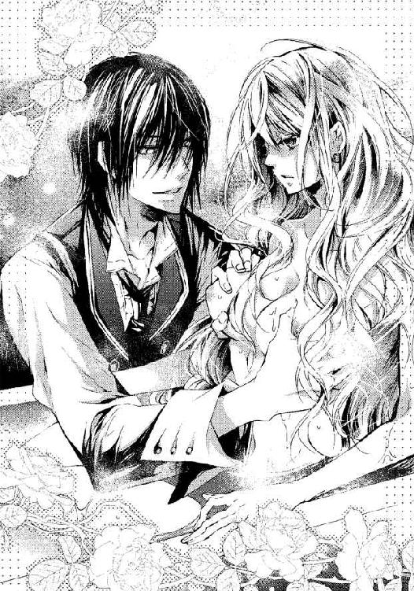
アレックスは彼女の耳元に唇を寄せて、低い声で言った。
「コンラートを甘い瞳で見つめたお仕置きだ。私が買って、私が結婚すると宣言した人形なのに。私の目すら見ないでほかの男を見つめるなど」
──嘘......そんなこと......してないのに。
甘い瞳でコンラートを見たなんて。
アレックスを心配してくれる兄弟がいてよかった、と思っただけなのに。
「私の目を見ろ......！」
彼は冷えた声で言い、左手でヴィオラの顎を掴んで無理に視線を合わせた。
避けたくても逃れられない。
古の英雄の彫塑のように美しい顔がすぐそこにあるというだけで、人形の仮面が剥がれそうになってしまうのに。
彼女の瞳は、ついに新月のような黒い眼差しに捉えられた。
身に覚えのないことを責められて混乱している隙に、彼の手は奥へと入ってきて、ヴィオラの太腿まで制覇した。さらに、その奥まで──。
アレックスの指先が、秘められた場所に届いた。
──......あっ
こらえても、体がぴくりと反応してしまう。
だが、彼の視線はヴィオラの眼を捉えたままだ。
彼の長い指は谷間をなぞり、膣孔にぷつりと侵入した。
──うっ......ん
人形に徹して無表情を保ちながら、ヴィオラは秘裂を侵されていく。
押し込めると、よけいに狂おしいような感覚が膨れ上がってしまう。
「ふうん、女の性器まで精巧に再現してあるのか」
アレックスの指が、足の間の花芯を分け入り小さな蕾をなぞった。
──ひっ
光が駆け抜けるような感覚に、ぴくん、と体が震える。
反応しちゃいけないのに。人形なのに。
体の奥が燃えるように熱くなってしまう。
彼の指が隘路にまで入って来た。ヴィオラは悲鳴を上げそうになり、必死に堪える。
アレックスが冷徹な笑みを浮かべてヴィオラの顔を見つめている。
──だめ......っ、わたし、まだ修行が足りないわ。
「人形師は何のためにこんな粘膜まで作ったのだろうな」
彼の長い指が、ヴィオラの膣奥までぐっと入ってきた。
──ああ......！
鈍い痛みに体が強張った。なぜこんなことをするのだろう。
これがお仕置きというものだろうか。
異物を押し出そうとするように膣洞が収縮した。
「柔らかく濡れて、指に巻きついてくる。これは夜伽人形か？」
──嘘、そんな、違う......！
ヴィオラの心の叫びなど聞こえるはずもなく、彼は執拗に秘処を苛んだ。
彼の指は濡れ襞をゆっくりと上下に動き始めた。深く突いたかと思うと引き下がって、再びはずみをつけて突き上げる。ヴィオラの体も上下に弾まされて水音を立てる。
──う、うう、......っ、何か、おかしい......。体が熱くなってる。
「声帯を作らなかったのは惜しいな、よがる声を聞きたかったのに」
悪寒のような感覚がヴィオラの肌を這いあがる一方、下腹部は熱くほてっている。
規則正しく抽送されるうちに、疼痛の奥から、次第に心地良い感覚が生まれてくるのを感じた。ぬるりとした物が溢れてくる。
眼が熱く潤んでくるのがわかる。虚ろに閉じそうになる瞼を懸命に持ち上げて、ヴィオラはアレックスの視線に堪える。黒い瞳に残忍ささえ浮かべて、彼はヴィオラの視線を蹂躙する。
声を殺していると、体がおかしくなりそうだ。
ヴィオラは息を詰めた。もういっそ息なんかしない。
人形になれ......人形になれ。
恥ずかしさも、触れられる怖さもときめきも、全て押し込めたら、涙がこぼれた。
息を止めていたら、頭がぼんやりとしてきた。
追い詰めるように、アレックスの指がぐりぐりと肉洞をうごめいた。
──あああっ
どくん、と跳ねるような衝撃がヴィオラの体を貫いた。
意識が遠のいていく。
自分は本当に人形になってしまったのかもしれないと思った。
＊ ＊ ＊
「やりすぎたか......」
アレックスはぐったりとした少女を抱き上げてつぶやいた。
そして彼は自分のベッドに彼女を寝かせた。
人形師が連れて来たときから、彼女が人形じゃないことなどわかっていた。
工房で見た自動人形とは全く別物だった、その美しさにおいて──。
少女はマスケラで顔を半分隠してはいたが、ブルーの瞳の甘い輝きも、みずみずしい果実のような唇も、しっとりとした白い肌も、比類のない可憐さだ。
人形師は、どうしてこれで騙し果せたと思うのか、アレックスは呆れたが、大いに好奇心を駆り立てられた。
彼女の正体は間諜か、刺客か、泥棒か──？
騙されたふりをして、相手がどう出るか見てやろう。
アレックスは自室で彼女を泳がせて、現場を押さえて捕えようと思ったが、昨夜彼女は思いもよらぬ行動に出たのだ。
アレックスの痛みに気づき、腕を冷やし、汗を拭い、一晩中寄り添って彼の看病をした。
一目見た時から、彼女に惹かれていたが、昨夜のことで、いっそうその想いは強くなった。
──この娘を我が物にしたい。
彼女はどういう境遇なのか。
名前は何と言うのだろう。
どんな声で話すのだろう。
なぜ人形のふりをしているのか。
いっそ命を奪いに来たというならわかりやすいのに。
アレックスはベッドに横たえられた少女を見おろした。
金色の髪が美しく輝き、絹のシーツに広がっている。
長い金色のまつ毛、上気してピンクに染まった頬。
軽く開いた唇はつややかな果実のように甘そうだ。
細い指、すらりと伸びたしなやかな足。
彼はなめらかな曲線を描く頬に触れてみた。
白い陶器のような肌だが、触れれば暖かい。
いますぐここで抱いてしまいたい衝動にかられる。
しかし、彼は、はっと手を離した。
小さな顎の輪郭に見覚えがあるような気がした。ふと彼の脳裏に、舞踏会でのダンスのシーンが蘇った。
ぎこちない機械仕掛けの動きが、アレックスの記憶を呼び覚まそうとしている。
アレックスは、長椅子に放置された白いマスケラを取り、もう一度少女の顔にあててみた。
彼の切れ長の目が、大きく見開かれる。突然霧が晴れたような気がした。
──これは、マトリア大学で見た......！
それは何年も前、彼が外遊に発つ前日のことだった。
マトリア大学周辺の大通りで、大道芸人を見た。
それは白塗りの顔にマスケラをつけ、ひきずるように長い、緑と黒の装束を着ていた。少年か少女かは不明だが、人形の真似をして通行人の目を惹いていた。
小さな顎や鼻、あどけない口もとから察するに、年端もいかない子どもだろう。
上手いのか下手なのか、アレックスにはわからなかったが、懸命に、ぜんまい仕掛けの動きを真似る姿に目を奪われた。
なぜ、それほど見入ってしまうのか、自分でも不思議だった。
急いでいたはずなのに、彼の足は止まったまま、一歩たりとも進めなくなっていた。
小さな大道芸人が、かくり、かくりと四肢を動かすのをひたすら見つめていた。
マスケラの奥の眼窩に、青い海の色を見た時、互いの視線が交わった。
アレックスの心に稲妻のような光が駆け抜けるのを感じた。
彼は無意識に、手持ちの金を全て、その大道芸人の足元のバケツに投げ込んでいた。
＊ ＊ ＊
「今夜はここで座って休むんだ」
甘いバリトンで、彼が囁いた。
ベッドの横に椅子を置いて、そこにヴィオラは座らされていた。
入浴の途中から、人形になりきっていた間のことは覚えていなかった。
気がつくと、彼女は新しいシュミーズと、レースや絹リボンで華やかに飾られたオーバーシュミーズを着せられていた。
ドレスは汚れたので、下着だけになってしまった。
ベッドの垂れ幕の内側に置いてもらえてよかった。ここは薄着でも暖かいから。
もっとも彼は人形に寒かろうなどという配慮をしたわけではないだろう。
アレックスはベッドに横たわり、枕元のランプを消した。
やっと安らぎの時間がやってきた。
とはいえ、アレックスの近くに寄り添って夜を過ごすのは、どきどきする。
彼は時々意地悪い。自分が買った人形だから、何をしてもいいと思っているかもしれないが。
人形といえど、衣を剥ぎ取り湯の中に入れるなんて──。
美しい顔をしているからこそより残酷に感じられる冷徹で皮肉たっぷりな物言い、攻撃的な態度、だからこそ垣間見えるやさしさがとても尊いものに感じる。
明日で別れだと思うと、胸が苦しくなる。
彼と一緒にいるのはあと半日もない。ほっとするのに寂しいのはなぜなのかわからない。
しんとした闇の中で、彼の寝息が聞こえる。
そして、窓ガラスがカタカタと鳴った。
──風が強くなってきた......。
母さんは寒い思いをしていないかしら。
これほど贅沢に暖炉を使い、大聖堂でしか見たことのないガラスの窓を持ち、すきま風もないような暮らしに触れてみると、ヴィオラはあらためて自分の住まいの惨めさに悲しくなる。
ガタ、ガタ、という音がまた聞こえた。
風で木の枝でも当たったのだろうか。
耳を澄ませたが、木の葉のざわめく音はしなかった。
──あっ......！ 窓がきちんと閉まっていないのじゃないかしら？
ヴィオラはコンラートの言葉を思い出して不安になった。
盗賊が闊歩していると言っていたっけ。
窓がゆるんでいるのなら、直さないといけない。
暗闇の中、ベッドの垂れ幕を開こうとした時、バタン、という大きな音がした。
窓が開いた！
ヴィオラはベッドの足側に身を寄せた。
「シッ、大きな音を立てるな」
「わざとじゃねえよ」
誰かが窓際で、ひそめた声で言い合っている。複数の男がいるようだ。
ヴィオラは震えた。コンラートが言っていたような泥棒がやってきたのかもしれない。
金目の物を奪って逃げるだけなら、まだ運がいい方だと言っていた。
──どうしよう！
もっと早く確認すればよかった。
ヴィオラは寝室の間取りを思い浮かべた。
書棚に並んでいる本も高価な物だが、泥棒にその価値はわからないだろう。
彼らがベッドの中を気にせず、棚から銀の燭台や金のゴブレットを盗むだけで去ってくれればいいのに──。
ひたひたと足音が近づいてくる。
こちらに来る？
だめ、あっちへ行って！
ヴィオラは心の中で懇願したが、複数の足音がベッドの前までやってきて止まった。
どくん、どくん、と心臓の音がうるさいくらいに高鳴った。
泥棒に聞こえてしまわないかと思うほどに。
怖い。これから何が起こるの？
急いでヴィオラはこの寝室のどこかに武器になるようなものがなかったか、思いめぐらせたが、暖炉の火かき棒くらいしか思いつかなかった。
だがもう遅い。
暖炉に行くにはどうしても彼らの目に触れてしまう。賊はベルベットの垂れ幕一枚隔てたすぐそこにいるのだから。
ザッと垂れ幕が開かれた。
真っ暗な中でもヴィオラの白い夜着は浮いて見える。
「誰かいるぞ」
「......伯爵のせがれだ」
彼らはベッドで眠っているアレックスに気づいた。
──ああ、どうしよう......？
背の高い方の泥棒がこちらを見た。闇に目が慣れても、鼻から下を布で覆っていることしかわからない。
「待て、女だ！ 女がいるぞ。起きていやがった」
背の高い男の方がヴィオラに気づき、腕を伸ばした。
ヴィオラの腕がぐいと掴まれた。
その瞬間、彼女は人形になりきろうと心を決めた。
「......って、あれ？ 動きゃしねえぞ。何だこれ」
「バカ、それは人形だ。イカれた御曹司のかわいがってるやつだ。俺はこいつのせいで......ちくしょう、許せねえ」
小柄な方の男の声に聞き覚えがあった。
そしてヴィオラを人形だと知っているらしい。
目を凝らして見ると、長身の男と違って、彼は顔を隠してはいない。
──わたしを椅子で叩き壊そうとしたあの人だ......！
伯爵から解雇されてしまった哀れな従僕だ。
許せねえ、と言った後、彼はごそごそとブリーチズの脇をさぐったかと思うと、鈍く光る何かを取り出した。ヴィオラは息を呑んだ。
──短剣......！
「おい、よせ。金目の物を盗ったらすぐずらかるぞ」
「だめだ、殺してからゆっくり盗ればいい」
従僕だった男の声が不気味に揺らいでいた。復讐心に声が震えていたのかもしれない。
「さんざんバカにしやがって......！ いつも酷使されたあげく、ごみ屑のように追い払われて──憎いのは伯爵だが、世継ぎを絶ってやるのがあいつへのいちばんの復讐だと思わねえか？」
興奮して荒ぶる息が恐ろしい。
彼は短剣の刃をシャツの袖できゅ、きゅと磨き、それからアレックスに向けて狙いを定めた。そして従僕は短剣を振り上げた。
「やめて......！」
ヴィオラはとっさに、その男の腹に向かって体当たりをした。
「ぐっ......うわあ！」
人形が動くとは予想もしなかったのだろう、彼はよろけてベッドの脇机に背中から倒れた。ランプやゴブレットが落ちてけたたましい音を立てる。
「起きて！ アレックス様、逃げてっ」
ヴィオラは大声でその名を呼んだ。だが、彼が目を覚ます様子はない。
「こ、このやろう！ おい、人形なんかじゃねえぞ、こいつ」
従僕が怒鳴った。彼は垂れ幕を掴んで立ちあがった。ヴィオラはアレックスに飛びつき、彼を揺さぶりながら、必死に叫んだ。
「お願い、アレックス様っ......起きてえっ......！」
従僕が再び襲いかかってくる、と思った。
ヴィオラは、深い眠りの中にいるアレックスの体に覆いかぶさった。
彼が、舞踏会の夜にしてくれたように、自分も彼を守りたい。
たとえ自分の体で剣を受け止めることになっても......！
その瞬間を待って、震えていた時、アレックスの手が動き、ヴィオラの背を抱きしめた。
「......アレックス......様......？」
二回目の襲撃はやってこない。
ふと明るくなる。誰かがランプを灯したらしい。
顔を上げると、アレックスが涼しげな黒い瞳でヴィオラを見つめていた。
──え......？
振り向くと、従僕が驚いた顔でヴィオラを凝視していた。
人形が叫んだことに驚いたのだろうか？
手にしていた短剣は床に落としたままで、その代わりにランプを持って茫然と立っている。彼から殺気はもう感じられない。
「ご苦労、もう下がっていいぞ」
アレックスのその言葉に、彼女が再び視線を戻すと、彼はヴィオラの頬に手を添えた。
彼が端麗な顔に浮かべているのは、冷笑なのだろうか？
ヴィオラはようやく、自分の失敗に気がついた。
──わたしったら......！
人形として振る舞わなくてはならなかったのに、自ら正体を曝してしまった。
「やあ、面白かった」
パン、パンと手を叩きながら、もう一人の賊が従僕に言った。
「きみ、すごい演技力だなあ。本気で兄さんを殺るかと思ったよ。......いっそ、役者になったらいいんじゃない？」
──演......技？
その長身の方の男は、涼しげな目でヴィオラを見ながら、顔を隠していた布を外した。
ゆるく束ねた淡い色の髪、淡褐色と緑の混じった瞳──コンラートだった。
いったいどういうことなのだろう？
何が起こったのかわからず、ヴィオラの頭は混乱していた。
コンラートは鷹揚な笑顔を見せて言った。
「護衛までしてくれるとは大した自動人形だなあ、アレックス兄さん」
ヴィオラは、はっと思い当たった。
「だ......騙した......の？」
彼女はこの三人の男によって、正体を暴くための罠にはめられたのだとわかった。
「そっちこそ」とアレックスが返した。
一点の曇りもない漆黒の眼差しがヴィオラを射る。
ヴィオラの嘘を全て見抜いているような鋭い目が恐ろしい。
人形の仮面を剥がれたら、ヴィオラは彼を欺くペテン師でしかない。
──全て終わってしまった。
ヴィオラはうなだれた。
「ゆっくり尋問するといいよ、兄さん。ぼくたちは退場しよう。芝居は終わりだ」
愉しげにコンラートが言って、従僕を促してその部屋を出て行った。
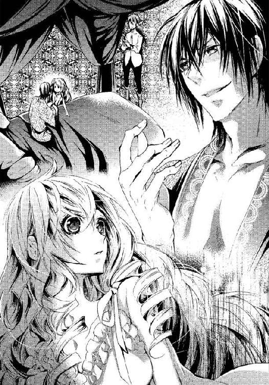
第三章
「......いつから......？」
寝室に満ちた重い空気に耐えきれず、ヴィオラから口を切った。
「いつから知っていたんですか？」
アレックスは体を起こした。ヴィオラがすがりついたために夜着が乱れていた。
しかし彼の顔はあいかわらず冷然として美しく、それがヴィオラには恐ろしくもあった。
彼は、ふと遠くを見るような眼差しをした。
「始めから──」
「始めから！」
ヴィオラは全く彼を騙せていなかったのか、と落胆した。大道芸で鍛えた技が通用していなかったとはあまりにお粗末だ。失望が二重、三重にと降りかかる。
「人形師の工房で見た物とあまりに違い過ぎていたから。きみだけを見ていたらわからなかったかもしれない。舞踏会では伯爵も従僕もきみを人形だと信じ込んでいたくらいだし」
マスケラだけではごまかしきれなかったということか。
「ごめんなさい......！ わたしは──」
ヴィオラは、もう隠せないと悟って、話し始めた。
「画家だった父と幼い時に生き別れ、母は病弱なので、わたしはずっと大学通りで人形の仮装をし、パントマイムをして生計をたててきました」
ヴィオラの言葉を一つ一つ、確認するように聞いていたアレックスが言った。
「──やはりそうか。マトリア大学街できみを見たことがある」
彼は覚えていたのだ、とヴィオラは驚いた。
「......顔を隠していたのにわかるのですか？」
「思い出したのはついさっきだが──マスケラが似ていたし、あれは強く心に焼き付いて忘れられなかった」
娘をさらしものにしたくないという母の気持ちを汲んで、ヴィオラが街で大道芸をする時、顔がわからないような扮装をしていた。それでも見破られてしまうなんて。
「わたしも、あなたがたくさんのお金をくださったことを覚えています」
「あの頃はまだ子どもだったんじゃないのか？」
はい、とヴィオラは頷いた。十二くらいだったと思う。
彼がバケツに投げ入れてくれた金で、ヴィオラはずいぶん助かったのだが、それ以降、彼は二度と通らなかった。
外遊に行ってしまったのだろう。
あの時の厚意をも裏切るようなことになってしまい、ヴィオラの心はしおれてしまった。
「他の者は騙されたけれどね。きみを人間と見破れず、破壊しようとして失敗して解雇されたあの男は、私がこの館で引き取ることにした」
それで、新しい主人であるアレックスに命じられて芝居を打ったのか。
他人事ながら、ヴィオラはほっとした。
自分の存在に関わった人が不幸になってしまうのは心苦しい。
「よかった。......本当にごめんなさい」
そんなひと言で許されるとは思わないが。
アレックスは怒りを表すこともなく、淡々と言った。
「舞踏会で、彼が椅子で殴ろうとしても微動だにしなかったから、プロの刺客か間諜かと思った。しかし隙を見せても襲ってくるわけでもないし、服を脱がしても凶器は見つからなかった。泥棒かと思えば宝物を物色するわけでもないし......それどころか、腕の治療をしたり、今は私の盾にまでなろうと。──きみはいったい何をしに来た？」
身ぐるみ剥がれて風呂で洗われたのは、そのためだったのか。
あちらこちら撫で回されて、感じてしまったのを隠そうと気をもんでいたなんて、のんきな自分が愚かしい。
ヴィオラは観念して正直に言った。
「ドーラさんが人形売りたさに間違ったことまで吹聴してしまったので、テオさんがそのように人形を直すために、明日まで入れ替わることになったんです」
「それは、人形の納期が間に合わないからということ？」
「はい。あの自動人形はワルツを踊ることまではできなかったんです。姑息な手段を使ったりしてごめんなさい。でも、明日には本物が届きますからどうか......！」
アレックスがふと眉をひそめた。
彼は怒っているに違いなかった。
騙しておいて、許してほしいなんて、図々しいにもほどがある。
「きみ、名前は？ 年はいくつ。そして住処は」
「ヴィオラ......、ヴィオラ・フォルストといいます。十七歳です」
アレックスは彼女の顎を軽く持ち上げ、その顔を覗き込んだ。
彫像のように整った顔立ちを目の当たりにして、ヴィオラの息は止まりそうになった。
人形のふりをしている自分より、彼の顔の造形の方が芸術的に思える。
黒曜石の瞳は深淵な宇宙のようで、それに見つめられると、全てを見透かされてしまうような気がする。彼は訝しげに言った。
「......きみの瞳はブルーなのに？」
彼は名前も偽名ではないかと疑っているようだ。
ヴィオラも、紫色をイメージするこの名前を疑問に思った時期があったが、母テレーゼは、名前の由来を聞いても困ったように微笑むだけだった。彼は納得していないようだが、ヴィオラは続けた。
「はい。そして、テオさんの荒涼館を借りて母と二人で暮らしています」
荒涼館とは、職人街の裏路地にある老朽化した貸家であり、いつ壊れてもおかしくない危険な住処だが、ヘルより治安はいくらか良い。
「この件は、家主に強制されたのか」
「いいえ......そこまでは。でも困っていらしたので。お世話になっていますし」
ドーラの態度を思い返せば、強制と言えなくもなかったが。
「私が気づかなければ、きみは最後まで私を欺いて、何食わぬ顔で人形と入れ替わってここを出ていくつもりだったんだ」
「......はい」
「それは、許せないな」
声のトーンが一段低くなった。彼はどんな報復をするのだろうか。
「どんな罰でも受けます......」
「ではもう一つだけ訊くが、カイが......きみを椅子で殴ろうとした従僕のことだが、彼が私を殺そうという芝居をした時、きみはなぜ止めた？」
「......え」
ヴィオラは何を尋ねられたのか、一瞬わからなかった。
なぜ、従僕が彼を殺そうとするのを止めたか？
それは理由を問われるようなことだったのだろうか？
ヴィオラは何の理屈もなく、当たり前に動いていた。
アレックスは彼女を探るように見つめながら言った。
「自分が叩き壊されようかという場面でも平静だったのに。──あれにはいたく感心した。よほど重要な任務があると踏んでいたがカイやコンラートに猿芝居をさせたら、きみはまんまと引っ掛かった。人形になりきっていたらいいのに。依頼主の私が殺されても、きみの入れ替わりの任務は完了するのに」
「だって......あなたは、腕を痛めてまで人形のわたしをかばってくれたじゃありませんか。そんなやさしい人が目の前で殺されるなんて......あなたが死んでしまうなんて、そんなこと」
ふうん、と言ってアレックスは目を伏せた。
懲罰の仕方を考えているのだろうか。
「わかった。しかし、私は不正が嫌いだ。嘘には嘘で報いる。罪には罰を」
「──はい......」
人形に成り代わって欺いたことへの罰はどのくらい重いのだろう？
「もう戻れないのですね？」
母の姿を思い浮かべながら、ヴィオラが尋ねた。
彼は、冷淡な表情のまま、抑揚のない声で言った。
「そうだな。今と同じ姿では戻れないかもしれない」
ずしんと心が重くなって、沈んでいく。
同じ姿でない、ということは手や足を斬られるのかもしれない。
泥棒は腕を斬られるというもの。
何も盗んではいないけれど、欺いた罪はもっと重いかもしれない。
見せしめに広場で衆目の下に曝されて処刑されたりしたら......母さんはどうなるの？
母の衝撃と悲しみを思うだけで目が潤んできた。
「どうした？ 罰を受けるのが怖いか」
「仕方のないことです。でも、どこで......罰を受けるのでしょうか？」
できることなら、母の目の届かないところでやってほしい。
ひっそりと散りたいと願うことすら、厚かましいだろうか。
「ここでやる」
アレックスの即答にヴィオラはほっとした。
「温情をくださって感謝します。あの、最後にもう一つだけお願いがあります」
「願い？」
「手紙を書きたいのです。家に残された母のために」
「母親に手紙を？ なんて？」
「いいえ、別の方に、後のことをお願いするつもりなんです。母は病気なので」
「男？ 女？」
「え......？」
「きみが手紙を書く相手だ」
「あのう......男の人......です」
「人形師か？」
「いいえ、......ギニョン地区の──」
ヴィオラはオルフ神父の顔を思い浮かべた。丸くへしゃげた鼻で、笑うと一本抜けた歯が見えて、どこか人を安心させる温厚な面立ち。
彼は、荒れ果てた教区を立て直そうと、孤軍奮闘している神父だ。
稼ぎが少なくて困っていると、良いタイミングで家を訪ねてきて、パンを恵んでくれる。
彼に、ヴィオラはお金持ちの家で雇われて当分帰れないからと、母のことを頼むつもりだった。神に仕える人に嘘をつく自分が情けなかったが。
「ギニョン地区......ヘルだと？ そんなところに知り合いが？」
アレックスの目が鋭く光った。ギニョンといえば賭博と娼館と犯罪を想起させる。多くの殺人がそこで行われていることも、地獄と呼ばれる所以だ。
そんな場所だからこそ、神の救いが必要だというのが神父の考えなのだ。
「あっ、でも決して悪い人じゃありません。それに......その人はこの人形の話とは全く関係ないんです。彼を疑ったり調べたりしないでほしいんです」
「だから、それは誰か、と聞いている。手紙を届けようにも相手がわからなくては届けられないからな」
もともと冷ややかだったアレックスの表情がさらに険しく変わっていくのを見た。ここで神父の名前を出すのはよくない気がした。
「や、やっぱりテオさんに......テオさんでいいです」
「だめだ。手紙を書くというのがそもそもあやしい。暗号を使うつもりだったのだろう。さっきの取り調べは甘かったことを思い知った。今度は容赦なく調べる必要があるな」
「ち、違います！」
「私は嘘と不正が大嫌いだ。ヘルのダニどもと同じくらい」
ヘル、つまりギニョン地区と聞いただけで彼は激昂するのか。ヴィオラは彼に大きな誤解を与えてしまったらしい。
「ごめんなさい。でも本当に、その方も母も人形のことは何も知らないんです！」
「母親のことは心配しなくていい。罰を受けるのはきみだけだ」
その言葉にヴィオラは安堵して、ふっと力が抜けてしまった。
崩れそうになるのを、アレックスの腕が支えた。
母さんには何の罪もないことを、彼は慮ってくれる。
不正を憎む正義感の強い人だが、温情はある人だと思う。
老いた家令も、そそっかしくて解雇されたメイドも傍に留めて面倒を見ているのだ。
この人になら、殺されたっていい。
ヴィオラは目を閉じて、処刑の時を待った。
のどを掻き切られるのかしら？ 床を汚してアリサが怯えないかしら。
それとも手をもがれてしまうのかな。
目の前がふと翳った。
ふわりとかぶさる温かいもの──。
ヴィオラが驚いて目を開けた。唇を奪われていた。
「ん......ん......？」
ふと唇を離して、彼は言った。
「口の中に何か隠していないか調べる」
そして彼は再び唇を重ねた。
ヴィオラの背を抱く彼の手に力がこもり、深い口づけに変わった。
唇の間をぬって、彼の舌が入ってきた。
それから口蓋を撫で、それはヴィオラの舌をとらえてからみつくように動いた。
すすりあげ、貪りつくす。
「んっ......んんう」
間諜と疑われてしまったら、こんなふうに口の中まで暴かれるのか。
彼はヴィオラの髪を撫でながら、その唇を吸い、舌をこじ入れてむさぼる。あまりの激しさに、ヴィオラの小さな唇から透き通った唾液が朝露のように零れ、顎へと流れた。
「......んっ、......ぁあ」
取り調べとわかっているのに、激しい口づけのようにも思えてヴィオラは眩暈を感じてしまった。立っているのもつらくて、アレックスの肩にしがみつく。
すると、彼はヴィオラを引き剥がすように唇を離した。唾液が糸を引いてきらりと光った。
「口の中には何もないようだな」
「アレックス......様......？」
彼は次にヴィオラの頬から首筋へと唇を滑らせた。
「ゃっ......」
耳裏に舌を這わせられ、ヴィオラはぴくんと伸びあがる。背筋がぞくりとした。
「耳にも隠しているかもしれない」
アレックスはそう言って、ヴィオラの耳たぶを舐め、さらに耳孔へ舌を滑り込ませた。
「ひゃっ......あんっ、そんなとこ......やっ」
まるで獣のように何度も耳奥をまさぐられ、ヴィオラは身悶えし、その場に崩れそうになるのを必死にこらえた。執拗に両方の耳を調べ上げると、彼はヴィオラの喉もとに矛先を変えた。
「はあ......っ、はっ、......やめて......くださ──」
肌を吸われ、甘噛みされるたびに胸がしめつけられ、鼓動が激しくなってしまう。喘ぎ過ぎて頭がくらくらしてしまう。
アレックスのシャツを掴んだまま、気を失いそうになった時、彼がぴしゃぴしゃと軽く頬を叩いて言った。
彼の冷徹だった眼差しが、今は猛獣のように鋭く輝いて、ヴィオラを捉えている。
「息をしろ。さっき気絶したのも演技だろうが今度はそんな真似は許さない」
──さっき......？ お風呂で体を洗われた時のこと？
声を出してはいけないと思って、必死に息を殺していたら、苦しくなって気が遠くなった。あの時失神してしまったのか、と今になってわかった。
「体の全てを調べると言ったはずだ。抵抗してはいけない」
「あの......でも......んっ」
アレックスの唇はヴィオラの胸へとすべりおり、ふっくらとした曲線をなぞるように動いていく。バスタブで手のひらに包まれたあの感覚が蘇って、胸の奥が熱くなる。
あの時は、人形に徹して声を抑えれば抑えるほど狂おしい気持ちになってしまった。今は人間として触れられているが、同時に怒りや軽蔑の感情が向けられていると思うと辛い。
湯あみの後に着せられていた絹の夜着を、自分で着せたであろうに彼は再び脱がせ始めた。滑りのよい音を立てて絹のオーバーシュミーズが暴かれていく。
アレックスの指が肌に触れるたびに、その部分がほてってくる。
「さっき、元の姿で戻れないと私は言った。それはきみが処女であればの話で、ヘルと関わりを持つようなら話は別だ」
「......え？」
頭が朦朧として、彼の言っていることがよくわからなかった。
「既に数多くの男を知っているなら、きみの世界は変わりもしないし、ただ経験が増えるというだけだ。間諜なら初心に見せかける娼婦がいても不思議ではないからな」
「おっしゃっていることが......よくわかりません」
「わからなければ、わからせてやる」
非情なことを言っているのに、その声はどこか艶めいている。ヴィオラの心臓が高鳴り、頬に血が上った。
彼の手が、ヴィオラのオーバーシュミーズを剥がしていく。
するりとオーバーシュミーズが足下に落ちた。シュミーズの肩ひもは片方だけ下され、血管が透けるほど白い右胸が露わになった。少し肌に触れられただけなのに、ヴィオラの胸がぽってりと重く張っている気がした。
尋問され、取り調べられているのに反応してしまう体が恥ずかしい。
胸を手で隠そうとしたが、アレックスの大きな手に阻まれる。
「抵抗してはいけないと言ったはずだ」
「アレックス......様......、あっ」
今度は手ではなく、彼の唇がヴィオラの胸の小さな頂に触れていた。
「は......んっ......」
ぴくんと体が反応してしまった。
濡れた感触が乳房の中心を滑る。ぬるぬると舌でしごかれるたびにヴィオラの体が小刻みに震えた。
「あっ......だめです、吸ったら......だめです──きゃあっ」
ちくんと痛むほど吸われて、ヴィオラは悲鳴をあげた。
胸の奥がむずむずと疼き、吸われていない方の胸までが濃く色づき、硬く勃ち上がる。
彼は絹地の上からもう一方の胸に手を当てた。布越しでもぷくりと膨れているのがわかって、見られたくなかった。その手をアレックスが払いのける。
「こんなふうに淫らに乳首を勃たせて──、私を眩惑させようと企んでいるのか」
「ふ......う、......そんな......こと」
アレックスの濡れた舌がシュミーズの上から乳房をほおばった。
「あ......っ、だ、め......っ」
絹が唾液で濡れて肌に張りつく。薄絹を隔てて触れられるのがもどかしい。
アレックスの舌がねっとりと乳輪をしごき、軽く歯を当てた。
「んっ......いゃあ」
赤子のように吸いつかれ、ぞく、ぞく、と根底から揺さぶられるような快感に震える。
体内に何かが侵入してかき混ぜているように、血がたぎり、もやもやとした感覚が体中を駆け巡る。
「あああ、あ......っん」
声を出していないと、狂ってしまいそうだ。
アレックスは跪き、ヴィオラの腰を抱くようにしてシュミーズを下へ巻きおろし、胸の谷間から臍へと舌を這わせた。
「やっ......あ、あ......！」
かすれて息のまじったよがり声が他人のもののように頭の中に響いていた。
乳房が痛いほど張っているのに、置き去りにされてしまい、どくどくと疼いている。ヴィオラの肌が淡い薔薇色に染まっていく。
「ああ......お、お願い......早く、もう......」
早く終わって、全ての疑いを晴らしてほしいとヴィオラは懇願したかった。
「早く？ 早くどうしろというんだ、こうか」
アレックスが両手で乳房を掴んだ。
「アレックス様......ちが......います」
「きみが本当のことを言わない限り、徹底的に調べるまでだ」
彼は右の手のひらで乳房をこするように回し、片方の乳房を口に含んだ。
「うっ......あああん」
胸の先に何を隠せるというのだろう。間諜はそんな技も備えているのだろうか。でも自分は無実だ。それを証明するためにヴィオラは彼のするままに身を任せるしかなかった。
アレックスは舌先に力を入れてヴィオラの小さな果実をしゃぶった。
まるで飽きない玩具を得たように、彼の舌先が乳首をぬらぬらと嬲り続ける。
「あっ、あん......っ」
初めて彼女を包む感覚に、ヴィオラの全身が震え、肌が汗ばんでくる。腹の奥が溶けるように熱くなって、そこから何かがじわりと漏れ出てくる感覚がある。
それが何なのかヴィオラは考える余裕もなく、アレックスの責苦にあえいでいた。
アレックスの瞳が鋭く光り、彼の形良い唇から熱い息が零れる。
「汗の匂いまで甘くて淫らだな。大した娼婦だ」
そう言って彼はヴィオラを抱き上げて、ベッドの縁に座らせた。腰にまとわりついているシュミーズで、下腹部だけはかろうじて覆われている。
「ううん......、あ、......」
両足は自然に広げられ、その間にアレックスの片膝が割り入れられていたが、ヴィオラは膝を閉じようとあがく。
「どうした......何が気になるんだ」
彼はヴィオラの変化に気づいたらしい。
そっと足をベッドから下ろして床に膝をつき、ヴィオラの太腿を掴んだ。
「やっ......ダメですっ。そんな、ところ......」
「ちゃんと見せるんだ。女にだけある隠し場所を。さっきはきみが気を失ってしまって、最後まで調べられなかった。あの時、手心を加えてそうしなかったのは私のミスだった」
「そんな......凶器なんて、ありません！」
「なら堂々と見せるがいい」
力強い手が、ヴィオラの恥ずかしい部分を一気に開いた。
「やぁっ」
いたたまれなくなって、彼女は手で顔を覆った。
ヴィオラは太腿まで絹レース編みのストッキングを履き、それを膝下でリボンを結んで留めてあった。ドロワーズはつけていないので、ストッキングの上は太腿から秘所へとむき出しのままになっていた。
ひやりとした空気を足の間に感じる。探るような視線を感じる。
アレックスが無言なのが怖い。彼は何をしているのだろう？
「アレックス様......も、もう、いいですか？」
「まだ終わってない、中まで確かめる」
「えっ、な、何を？」
ヴィオラは、言われている意味がわからなかった。手を下ろしてアレックスを見る。彼はヴィオラの秘所に手を入れた。
「ひっ......」
ぬるりと秘裂をなぞられて、彼女の体がびくんと跳ねた。
くちゅりと湿った音がした。つきんとしみるような痛みにヴィオラは体を硬直させた。
アレックスの指が、深い所に入ってきたのだった。
「あの......い、痛い......です。アレックス様」
「痛い？」
「え、ええ......それに、そんなところには何も隠していません」
「生娘のふりか？ ますます怪しいな」
アレックスの言葉の意味がわからない上に、膣奥の軽い痛みに目が潤んでしまう。
「この奥にどれほどの物を咥えこめるか、知らないとは言わせない」
取り調べのためとはいえ、楔のように指を挿れられたまま、あられもない姿を見られているのはいたたまれない。
「じっとしていろ」
彼はそう言って、膣から指を抜いた。ぞくっとした刺激が背筋を駆け抜け、ヴィオラは小さく呻いた。彼はストッキングを履いたままのヴィオラの膝を掴み、ギリギリまで開いた。
「あっ......、い、や......です」
「私のいうことを聞くんだ。そうでないとけがをする」
──けが......！
ナイフでも入れて調べるというのだろうか。ヴィオラは泣きそうな顔で目を閉じて、アレックスに身を任せた。
「そうだ、それでいい」
そして彼はヴィオラの腿裏に手を添えてそっと持ち上げ、彼の肩にヴィオラの足を掛けさせた。ぐいと太腿が持ち上げられ、秘所がむき出しになった。
「......っぁ」
「ゆっくり体を後ろに倒すんだ」
ヴィオラは言われるままに、ベッドに背を置いた。
恥部に熱い息がかかった。アレックスの視線を痛いほど感じて、触れられてもいないのに花芯がうずいてしまう。
「お......お願い......、見るの......や」
「もちろん見るだけではすまさない」
「は、はやく終わらせてください......わたしは間諜なんかじゃありません」
「黙って天井を見ていろ。目を閉じていてもいいが」
──天井？
ヴィオラの視線の先には赤い天蓋が見える。天井に取り付けられた円形の金属の輪から幾重ものベルベットの垂れ幕が花びらのように垂れ下がり、ベッドの縁へと流れている。
「垂れ幕が女陰のようだろう。きみのここは娼婦とは思えないほど美しいピンク色をしている。蜜を少しだけ零しているのも演技だろうが」
娼婦じゃないのに......！
アレックスにそんなふうに思われていることがヴィオラの心を抉った。
言葉が途切れたと思うと、女陰に何か温かい物が触れた。
「きゃっ」
腰を引いて逃げようとしたが、太腿を掴まれていて動けない。
陰唇を濡れた柔らかい物がなぞるように行き来している。
「......ひっ」
びくんと体が跳ねた。
熱い息がかかって、ヴィオラはようやく理解できた。
「あっ......そんなとこ......舐め、ないでっ」
訴える声も息絶え絶えだ。耳を舐めた時とは違う、硬く尖らせた舌が肉襞に潜りこみ、内壁をつるりと嬲る。熱い舌を受け入れながら、屈辱の涙で目がかすんでしまう。
「ああっ、......や......あっ」
アレックスの舌は、ぬめぬめと秘裂をえぐるように動く。
その刺激が全身に伝播し、むずむずとした心地良い感覚が生まれて、ヴィオラは戸惑う。そんなふうに感じてはいけないのに。
「あ......ふっ」
舌の動きに合わせて自然にヴィオラの腰が動いてしまう。痺れ薬でも塗り込められたようにふわふわとした感覚に彼女の心は漂う。
「......あ、......あぁ」
内腿を撫でる彼の黒髪、体の芯にかかる彼の息が、背徳的な陶酔へと彼女を誘う。
ヴィオラの濡れ襞のすみずみまで舌を滑り込ませて、彼は何を探しているのか。
「ああっ......んっ」
彼の舌がある一点を過った時、ヴィオラは痙攣したように体をしならせた。快感に体が硬直し、脱力した後に残る疲労感までが心地良い。
彼女には抗う力もなくなり、彼に身を任せてしまった。
ぴちゃぴちゃと濡れた音が夜の寝室に響いている。
なんて淫らな音。なんて淫らなわたし──。
肉洞の奥を抉って何もないと知ったのか、彼の舌は花芯をなぞり、上端の陰核を吸った。稲妻のような衝撃が走った。
「ああっ......ぁ！」
アレックスの肩に預けていたヴィオラの両足がぴんと突っ張って空中を突いた。つうっと腹の奥から何かが流れ出るのを感じる。
「あ......、アレックス......様......っ」
豊かな金の髪が乱れて羽布団に広がる。
「とろけるような花蜜だ。こんなにびしょびしょにして、なんて淫らな女だ。いつも嬲られているからだろう」
彼は腹立たしげにそう言って、舌を膣に侵入させて吸い出そうとする。
「ひっ、......うっ、いやっ、いやぁ」
違うのに！ そんな人などいないのに。
花芯に埋もれた敏感な肉粒と濡れ襞を交互に嬲りながら、彼は再び指を挿し入れてきた。
「っ......！」
ずぶり、とそれは奥まで押し入ってきたが、さっきほど痛くはなかった。
ヴィオラの怯えに反して、その体は舌よりも硬くて鋭い侵入者を、すんなりと受け入れた。アレックスはそのまま指をなじませると、ゆっくりと抜き差しを始める。
「うっ、......あん、......ん」
ひりひりとした痛みはなくなり、こすられるたびにぞわりとした感覚があふれる。彼の指が抜かれる時の心許なさと、再び犯される光悦が交互にやってきて、身悶えしてしまう。
「あっ、アレックス......さまぁ......」
くちゅくちゅという淫靡な音と、ヴィオラの荒い呼吸が、仄暗い寝室に響く。
ヴィオラが指の挿入に慣れてきたのを察したように彼は指を増やした。
きゅ、と圧迫感が増してヴィオラの体はまた跳ねる。
二本の指を肉洞の中でこねるように動かされ、ゆるゆるとなじまされた後で、突然ぐり、と指を曲げて浅い所を嬲られた。とろりとした愛液があふれ出す。
「ああっ......うっ......」
「狭いな。物を隠すためによく訓練されている」
指が三本になって、ヴィオラの中でうごめかされた。その奥に隠された何かを見つけようとしているのか、執拗に探られる。
何も見つかるはずない。早くそのことをわかってほしい。
「あ......んんっ。い、痛いです。中で、指、ひろげないで......っ」
時折、彼の指が膣孔のある一点をかすめる時、ヴィオラは全身が浮き上がるような刺激を受けてしまう。
「ひぃ......っ、あ、ああっ」
びくん、びくん、と痙攣するヴィオラを、アレックスはそっと抱き上げて、羽布団の上に正しく横たえた。蹂躙されていた肉洞が、今も彼を求めるようにひくひくと収縮して止まらない。
「指で届く範囲には何もなかった」
アレックスのその言葉を聞いたとき、ヴィオラは大きく胸をはずませてあえぎながら、ようやく終わったと思った。
「わたしの疑い、......晴れましたか」
「指で届く範囲には、と言っただろう」
どういう意味だろう。何か道具を使って奥まで調べるのだろうか。
そう思って彼を見ると、彼は、乱れた夜着を脱ぎ捨てているところだった。
アレックスはベッドに上がると、裸でヴィオラに覆いかぶさってきた。
「あ、......あの......？」
ヴィオラの下腹に、熱く硬い何かが触れた。
「もっと奥まで調べる」
冷えた声に、ヴィオラは泣きそうになる。
人形のままでずっといたかった。そうすれば彼はやさしかったのに。
乱れた黒髪の下から、濡れた虹彩が肉食獣のように彼女を見つめていた。
しなやかな筋肉をまとった美しい肉体は汗ばみ、その臍の下にそそり立つ肉棒が見えた。
生まれて初めて見る男根は、恐ろしいほど硬く膨れ上がっていた。
アレックスは膝立ちになるとヴィオラの太腿を掴んで、彼女の肩につくほど抱え上げた。
「......ぁっ」
ヴィオラの秘所が曝されてひやりとした。恥ずかしくていたたまれず、懸命に膝を閉じようとするが、強い力に阻まれる。
「いや、やめて......ください」
彼女の懇願は聞き入れられず、アレックスは下肢を摺りつけてきた。
ヴィオラは細い腕を伸ばして、彼の硬い胸を押し返そうとした。しかし大きな手で両方の手首を掴まれ、完全に動きを封じこまれた。
「あ......あ、......うう！」
ヴィオラの開かれた足の中心に、熱い物が押し当てられた。
くちゅり、と湿った音がした。
「あ......っ、やぁ──！」
あがくように頭を振ったが、捉われた四肢はびくとも動かない。
「いやだって？ こんなに淫らに蜜を溢れさせて、私を欲しがっているのに」
残酷な物言いと同時に、彼はその先端をあてがって、秘裂を擦り始めた。捉えた獲物を、すぐには殺さず、まるでいたぶるように──。
「あ、ふ、ううん......」
熱く、太い肉塊に敏感な場所を磨られ、ヴィオラは体をよじった。
触れられたところが熱くなり、隘路がひくひくとうごめくのを感じた。
それはまるで彼を待ち受けるようにぜん動し、熱い媚蜜を零し続けている。
彼が恐ろしいのに、その肉棒に撫でられた花芯は喜悦したように反応してしまい、ヴィオラは戸惑う。拒絶したいのに、潤んだ声が漏れてしまう。
「ふ、......う、あぁん」
「淫らな声だ！ こうして男を惑わせて罠に陥れるのが常套手段か？」
彼は尚も焦らすように、陰茎を、淫核と膣孔の間を行き来させた。
隘路の入り口を擦られて疼くような感覚に震え、真珠の肉芽を責められて火花の散るような快感に体が跳ねる。じゅくじゅくという蜜音に耳まで犯されてしまう気がした。
「あ、......ぁ、あ、ああん」
背中を這うような愉悦の波に、ヴィオラの意識がもうろうとしてきた。
彼女の手は解放されたが、もはや抵抗することもできない。
「気を遣るのはまだ早い、私を呑み込んでからだ」
アレックスがそう言うと、腰を沈めた。
「あっ......いや！」
夢現だったヴィオラが我に返って、青い目を見開いた。
処女の膣孔に彼はとうとう踏み入ってきた。ずぶり、と肉棒の先端が挿入った。
「やっ──やめ......て」
じわりとした疼痛に、ヴィオラは呻いた。
たっぷりと濡れたヴィオラの膣孔にそれはゆっくりと押し込まれてくる。
「ん......っ、痛、い......ああっ」
ヴィオラの体が逃げようとするのを、彼はしっかりと抱えこみ、体重をかけていく。
漆黒の眼差しが妖艶に輝き、彼女を見下ろしている。獲物を捉えた野獣の気配をまといながら、彼は微かに苦悶めいた表情を浮かべていた。
灼熱が濡れ襞を押し開く。
いまだ誰も踏んだことのない隘路はいくら潤っていても、引き裂かれるように痛い。
「......うっ、......ぁぁ、はぁ、んっ」
痛みに強張って硬直したヴィオラの膣道を、彼は勢いよく穿ってきた。剣で刺し貫かれたような衝撃に、ヴィオラの背が弓なりに反った。
「ああぁっ、......んん......う」
想像を絶する質量に支配され、肉襞に激痛が走り、下腹がひくひくと震えてしまう。
「お、お願い......許して......くださ──」
「拒絶するのは口ばかりで、熱く巻きついて絞めつける......、淫らな体だ。処女が、好きでもない男に嬲られてこれほど潤うはずはない」
好きでもない男、という言葉にヴィオラの心が踏みにじられた。
違う、それは、彼に想いを寄せているからなのに......！
心は怯えているのに、膣奥からぬめった蜜があふれてとまらず、彼が入ってくるのを助長してしまう。
肉襞が彼の陰茎に押し広げられては、それを包むようにすぼまり、また押し返される。
「い......痛、い、です......！」
鉄槌から逃れようと背をよじらせていると、アレックスの手がヴィオラの腰を掴んで動きを封じ、さらに深く肉棒をねじこんでいった。
「ふ......あ、ぁ......っ」
煉瓦でも打ち込まれているのではないかと思うほどの存在感に、ヴィオラは悲鳴をあげた。
びくん、びくん、と白い裸身がのたうつ。
衝撃で大きく見開かれた青い瞳から、生理的な涙がこぼれて頬を伝う。
金色の髪が乱れてベッドに広がり、全身から汗が噴き出す。
滑らかな肌が上気して薔薇の色に染まった。
「泣いても美しい......、汗の匂いまで甘くて淫らだ」
彼はさらに突きあげ、いちばん深いところまで己を埋めた。
「はっ......ぁぁう......っ」
ヴィオラの体中ががたがたと震えて、涙が止まらない。
「くっ......きつ......いな」
アレックスが眉をひそめて少し体を引いた。
接合部からヴィオラの臀部へと何かが流れるのを感じた。
彼がはっとしてそれを見た。指でそれをなぞる。
アレックスの指が赤く染まっていた。
ヴィオラが失った処女の血だ。
「本当に初めてだったのか......」
「どうか......信じて......」
冷徹だったアレックスの表情が一瞬揺らいだ。
「処女なのか。では、娼婦ではないのだな」
ようやく誤解が解けたことにヴィオラは安堵した。
「はい、......ですから、どうか、抜いてください──」
「今やめても痛いだけで終わるぞ」
彼は楔を彼女に埋めたまま、引く様子はない。
「お願い......です──んんっ」
ヴィオラの言葉を封じるように、彼は唇を塞いだ。
みっちりと最奥まで体を繋げたまま、下肢は動かさず、彼はヴィオラの唇をむさぼり、舌をこねあわせて、唾液をすすった。
口蓋を執拗に舐められ、ぞくぞくした感覚がヴィオラの背筋を這い、膣奥へと伝播していく。
ヴィオラの柔らかな乳房は硬い平らな胸に押しつぶされ、どちらの物ともわからない鼓動が響く。
どくん、どくん、と彼女の中でアレックスの灼熱も脈動していた。
「ふ......ぅ......んんっ」
ヴィオラは細い眉をひそめ、まつ毛に朝露のような滴を宿しながら、重苦しく体を穿たれた痛みに耐えた。
ヴィオラは、自分の肉体の中に、別の肉体が潜り込んでしまったような不思議な衝撃に慄いていた。
犯されているのに、その凶暴な肉塊がヴィオラの体の一部分のような気がする。
ヴィオラの白いのどがびく、びくと震える。小さな赤い唇はアレックスに塞がれ、華奢な腕も彼の手に掴まれ、羽根布団に押しつけられている。
彼はようやく唇を離した。
前髪の先端に、水晶の粒のように汗が輝き、形良い唇が濡れていた。
美神の寵愛を一身に受けたような風貌に妖艶さをゆらめかせて、彼は言った。
「私に貞潔を誓うがいい、そうすれば丁寧に愛してやろう」
ヴィオラはもはや抗う力もなく、急所を一噛みされた小動物のようにぐったりとしていた。
「私の目を見ろ、私以外の者を見るな！ ──わかったな？」
アレックスは、どうあっても言質を取らなくては気が済まないというように念を押した。
「は......い、......アレックス様......」
ヴィオラは魅入られた操り人形のように、言われるままに漆黒の瞳を見つめた。
「わたしは......あなたの物......です」
ヴィオラがそう言うと、彼は、それでいい、というように一瞬目を細め、長い指で彼女の唇をなぞって言った。
「この唇を奪っていいのは？」
「アレックス様だけ、です」
それを確かめるように、彼はヴィオラに口づけた。刻印するような丁寧なキスだ。
それから、ヴィオラの眦に口づけて言った。
「この目が見つめていいのは？」
「あなただけです」
彼は、次にヴィオラの手を掴んでその指を軽く噛んだ。
ヴィオラは驚いてぴくりと動いたが、痛くはなかった。彼は艶めいた低い声で言った。
「この指が触れていいのは？」
「......あなただけ......です」
触れてみろ、と言うように、彼はヴィオラの手を自らの頬へと導いた。
彼に手を添えられて、ヴィオラは高い頬骨から顎へと、なよやかな指を滑らせた。
その指先まで動悸がして、彼に伝わりそうな気がした。
「永遠に、きみは私だけの物だ」
アレックスが呻くようにそう言った。
嘘のないような、一点の曇りもない彼の眼差しにヴィオラの心臓がどくん、と跳ねた。
まるで、恒久の愛を告げられているような錯覚に陥ってしまう。
濡れ羽色の双眸に心が吸い込まれそうになり、胸が切なくなった。
「この唇が触れていいのも......あなただけ......？」
吐息ばかりの微かな声でヴィオラが問うと、彼はゆっくりと頭を垂れた。
彼女はその頸に手を回して引き寄せ、彼の頬に口づけた。
力尽きたようなこの体も彼の所有物。
膣奥の痛みも、彼だけが与える痛み。
心の中にそれを刻みつけるように唱えながら、ヴィオラはアレックスの顎に口づけた。
やがてアレックスが唇を重ねてきた。
ついばむようにやさしく、角度を変えて何度も。
「ん......んん」
もどかしいほど繰り返される口づけに、強張っていたヴィオラの体が解きほぐされ、下肢に残っていた疼痛が、薄らいできた。
同時に彼の長い指が、ヴィオラの乳房をまさぐり始めた。二本の指で乳首を挟んでやさしくしごく。
「ふ......ん、ぁっ」
ぴくん、とヴィオラののどが反った。唇が離れ、吐息が漏れる。
アレックスは体を折るようにしてヴィオラの乳房を口に含んだ。
口中で舌をうごめかせ、尖りを舐め回した。
ぬるぬるとした愛撫に甘酸っぱい愉悦がわき起こり、ヴィオラの体の血が熱くなる。
「ああ、あっ......アレックス様」
「その唇が呼んでいいのも私の名前だけだ」
そして彼は乳首に軽く歯を当てたかと思うと突然吸った。
「ひ......っ、ううん」
ヴィオラの膣奥が熱くとろける。
丁寧な愛撫に、ヴィオラの白い肌が何度も歓喜に震え、頬が血の色を取り戻した。
破瓜の痛みを慮ってくれているのか、彼は下半身は動かさないようにして乳房を嬲り続けていたが、ヴィオラの腰が自然に動きだした。
とくん、と肉棒が彼女の中で脈打った。
「なじんできたようだな」
彼はそう言い、かすめるようなキスをしてから、下肢を動かし始めた。
「あッ......」
ゆっくりと彼は腰を引き、肉茎を半ば引き出した。
圧迫感から少し解放され、ヴィオラがふう、と息を吐く。
鋭い痛みが痺れたような鈍い痛みへと変わった。
虚ろになった肉洞が、さびしげにうねる。そこへ再び肉棒が挿しこまれる。
濡れ襞をなぞるように押し開き、硬度と太さを増した陰茎でヴィオラの淫核を擦りながら、みっちりと体を沈めてきて、ヴィオラの中を再び満たした。
「ああ、あ、......んぅ......」
うっ血してぽってりと膨らみ、ピンクに染まった花襞が、巨木のようなアレックスを呑み込んでいる。
彼は腰を回しながら陰茎の根元で蜜壺を丁寧にほぐし、先端で子宮口を擦った。
圧迫感は強いままだが、ヴィオラは疼痛の奥に心地よい感覚が生まれてくるのを感じる。
アレックスの背を抱きしめて、それを味わっていると、深く突き上げられた。
「ああっ......んっ」
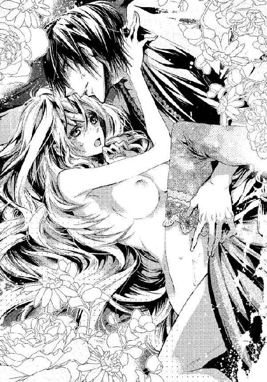
肉襞が震えてアレックスの灼熱に絡みつき、ぎゅっと絞るように反応した。
アレックスが焦らすように腰を引く。膣洞の狂おしいほどの虚しさに、ヴィオラの肌が粟立ち、潤んだ声が漏れてしまう。
「はっ、あ、......ああん」
アレックスは彼女の腰を抱きしめて律動を速めた。
次第に彼の動きは激しくなり、ベッドがぎしぎしと鳴った。
処女の血の混じった花蜜が掻き出され、ヴィオラの白い肌を汚していく。
ずぶずぶとぬかるんだ音も忙しく響き、彼女の体が何度も突き上げられる。
アレックスの体から汗が飛び散り、ムスクの香りが妖しく匂い立つ。
「あ、......あ、ん、ぁ、ぁあ、......、あ」
彼女の喘ぐ声が小刻みに途切れた。
「きみを達かせるのも、私だけだ......！」
アレックスに耳元で低く囁かれ、ヴィオラの血は滾り、体の最奥で対流していた甘露が一気に噴きだした。
大きな波がやってくる。狂おしいような、掴みたくても届かないような感覚。
アレックスが止めをさすように激しく貫いた。
子宮口を抉られた瞬間、ヴィオラの瞼の裏に光が閃いた。
「あぁぁぁ──っ」
快感がどっと押し寄せて体が硬直した。
びくん、びくん、と何度も背中が反り、のたうつように肢体を震わせた。
彼女の中で肉棒が脈動し熱い飛沫が吐き出された。
彼はどく、どく、と精を吐いて、ヴィオラの子宮にまき散らした。
激しく脈動する肉棒にからみつき、精を受け止めながら、ヴィオラはたくましい腕に抱かれて、天に昇るような官能の極みに達する。
虚空に投げ出されたように彼女の意識は飛んだ。
第四章
幼い兄弟は懺悔室の中で怯えていた。
「にいさん......こわいよ」
「しいっ、だまって耳をふさいでいるんだ」
たった一つしか違わない兄弟だが、兄は終始、弟をかばっていた。
朽ちた教会の懺悔室の扉には、縦に細い亀裂が入って、光が薄く射しこんでくる。
アレックスは弟を足元にしゃがませ、自分は立って扉の亀裂の向こうを見ていた。懺悔室の前に、一人の男が立ちはだかっている。
馬車の窓越しに目が合ってしまい、幼い兄弟が危機に瀕しているのを察知したのだ。
何の関係もない通りすがりの人だった。
廃墟のような教会の前で、彼は慈悲深い目をして、兄弟に救いの手を差し伸べた。
彼は兄弟を懺悔室に押し込んで、自分は盾となった。
殺人鬼はその男に銃口を向けている。
口を隠しているから、鼻が細く尖っていて、目が灰色ということしかわからない。
通りすがりの男は、銃をつきつけられたまま、両手を広げ、祈りを唱え始めた。
主をほめまつらん
神に感謝したてまつる
願わくは、われらを守りたまえ
いたいけな二人の子どもを救いたまえ
しかし悪魔はくぐもった声で言った。
「このような朽ち果てた教会に、神が住むと思うのか」
哄笑とともに火薬の爆ぜる音がした。
悪魔の手で、銃弾が発射されたのだ。十五秒ほど後に二発目、そして三発目。
ピスン、という音がして、懺悔室の扉を銃弾が突き破り、アレックスの耳の横をかすめた。
ぞっとした。ひどい耳鳴りがした。
どさり、という重い音が聞こえた。
コツコツと、革靴の音が近づいてくる。
次は、ぼくたちの番だ。
亀裂から入る光が涙で曇った。
自分にもっと力があったらいいのに。
もっと強かったらいいのに。
どんな恐ろしい敵でもやっつけられる術があったらいいのに。
アレックスは、声にならない叫び声を、胸に押し込めて、殺人鬼の足音を聞いていた。
いつもの夢だ。
頭でそうわかっていても、引きずり込まれそうになる。
夢の中でいつも、悪魔に囚われて、心臓を撃たれるのだ。
アレックスは身構える。何百回も撃たれたのに、何度めでも苦しい。
その時──。
「アレックス様、逃げて！」
突然現れた少女がそう叫び、あたりに光が満ち溢れる。
彼女はアレックスを抱きしめて、逃げて、と言うのだった。
──あの目だ。
ようやくわかった。
犠牲になった名も知らぬ男と、人形のふりをしていた少女が同じ目をしているのだ。
わが身を顧みず人を救う者はみな、同じ目をしているのだろうか。
アレックスは目覚めた。
確かに悪夢を見ていたのに、いつもの寝ざめの悪さがない。
初めて、夢の中で撃たれなかった。
自分に何の変化が起こったのか？
「アレックス様......？」
腕の中にぬくもりを感じて見ると、美しい少女が彼を見つめていた。
金色のまつ毛にふちどられた、深い海のような色の瞳だ。
「またうなされてました。腕が痛いのですか？」
彼女の甘い声音にアレックスの心がほぐれていく。
「今、私の名を呼んで起こしたのか？」
「はい......とても苦しそうだったので」
──なるほど、そういうわけか。
「よけいなことをしてしまいましたか？」
彼女は不安げな眼差しで問いかける。
「いや......」
短く答えてアレックスは彼女を見つめ返す。
困ったような顔をして、彼女はじっとしている。
胸に触れる長い金の髪がくすぐったい。
アレックスはそれを撫で、そっと彼女を抱きしめた。
柔らかくて滑らかで、心地よい手触りだ。
「よくうなされるのですか？」
「......夢の中では、いつまでも自分が非力な子どものままだからな」
「どんな夢か、聞いてはいけませんか？」
ヴィオラがそう言った。
アレックスは彼女の青い目を見つめると、静かに言った。
「銃を持った男に追い回されて、最後には必ず心臓を撃ち抜かれるのだ」
＊ ＊ ＊
彼の言葉に、ヴィオラは慄いた。
「どうしてそんな怖い夢......？」
「子どもの頃誘拐されて、殺されかけたから。この通り無傷で助かったが」
無傷で、と聞いてヴィオラは胸をなでおろした。今、無事とわかっていても恐ろしい。
黒い瞳の奥にある、アレックスの心の傷が見えた気がした。
彼に凝視されて、ヴィオラは我に返り、彼の腕から逃れようとして苦痛に呻く。
「痛......っ」
全身が重怠く、特に、下腹部に鈍い痛みが残っていた。
その上、彼女もアレックスも、一糸まとわぬ姿だった。
──わたし......？
ヴィオラの頬に血が上り、動悸がした。
昨夜、アレックスに処女を奪われてしまったのだ。
彼に激しく抱かれたことを思い出して、切ない気持ちがこみ上げた。
初めは強引に犯されたはずなのに、いつしか甘やかな官能に淫らに感じてしまっていた。
彼女は確かに、彼に『丁寧に愛された』のだ。そして今もその腕の中にいる。
一夜にして、世界が変わったように思えた。
自分が裸でいることにも慄き、ヴィオラは慌ててベッドの上を這い、シュミーズを手繰り寄せようとしたが、その時、力強い腕に腰を抱えられて引き戻された。
「どこへ行く？」
彼に問われて、ヴィオラは目を伏せた。
「どこへも......ただ、服を取りに」
「無粋な、そのままでいい」
そう言って、アレックスはヴィオラの裸身を腕に閉じ込めた。彼の平らな胸に彼女の頬を押しつけるような格好になり、ヴィオラの鼓動が高鳴ってしまう。
まるで恋人のように寄り添って、彼女はどうしたらいいのかわからない。
「なめらかで心地よい肌だ、しばらくこうしていろ」
アレックスの胸越しに響く声音は、落ち着いていてやさしい。
人形と偽って彼を騙したヴィオラの罪は、もう許されたのだろうか。
昨夜の洗礼の余韻は熾火のように体の奥に残っていて、このまま彼に触れていると再び燃え盛って、息が苦しくなりそうだった。
「あの......わたし、朝の祈りをしたいのです。どうか、少しだけお放しください」
「......祈り？」
そう問い返した彼の声音がかすかに陰っていた。
昨日、出すのをためらった人の名前がヴィオラの脳裏をよぎった。だが、アレックスに嘘は通らないのはわかっている。
「誰に教わった祈りだ」
不機嫌さをにじませた声音に怯えながら、ヴィオラは言った。
「オルフ神父です。朝起きたら、日々の糧を感謝して、生きていられることを感謝するようにと......どうか服を着るのを許してください」
アレックスはヴィオラの目を覗き込んで、嘘がないことを感じたようだ。
彼は腕を緩め、自分が体を起こすと、裸のままベッドから降り、すぐに戻ってきた。
「日々の糧に感謝したいと言うのだな、いいだろう」
アレックスの切れ長の目が意地悪く細められた。
彼は、オレンジや葡萄、野苺やランの花が盛りつけられた籠を手にして微笑み、脇机にそれを置くと、紫色の葡萄を一房、掴んだ。
「......アレックス......様？」
彼はヴィオラの肩を押さえつけると、彼女の乳房の上で葡萄を握りつぶした。ひやりと冷たい雫が飛び散り、白い肌がワインカラーに染まる。
「あっ......何を？」
「これがきみのドレスだ」
シュミーズを手繰り寄せたいのに、身動きできない。動けば葡萄の汁が零れて高価な羽布団を汚してしまう。
「そんな──」
「そしてこれが日々の糧だ。感謝するがいい」
アレックスは籠から野苺をつまんで唇に挟み、ヴィオラの口へと運んだ。
甘酸っぱい果実が押し込まれる。
「ん......ん」
ヴィオラが一粒の野苺を噛んで飲み下すと、彼はさらに数粒つまんで彼女の口に放り込んだ。ヴィオラの口がいっぱいになって、懸命に噛み砕いたが、唇から赤い果汁が零れてしまった。アレックスがそれを唇で拭う。
口の端を舐め、あごをついばみ、のどへと彼の唇が降りていく。
「ふ......っ、んん」
当惑するヴィオラを、彼は猟犬のように凝視し、そっとその胸に顔を寄せた。彼が散らした赤紫の果汁を彼はすすり始めた。ヴィオラが小さく震える。
「......あっ」
彼の舌はヴィオラの胸のふくらみを滑り、葡萄の果汁を舐め取った。
「......ん、......や」
「それが祈りか？ そんないやらしい祈りを教わっているのか」
冷酷な物言いだ。
「ア......、アレックス様......？」
彼の冷えた声に、ヴィオラは泣きそうになる。
「私の前で、他の男の話をするとはけしからん」
やはり彼は誤解をしている、とヴィオラは思った。
「男......といっても、神父さんです」
よくパンを恵んでくれる神父は、人は好いが、醜い中年の男であって、アレックスとは比べるべくもない領域の人なのだ。ましてや、情夫などと疑われるのはいたたまれない。
「妻帯する神父だっている。男は男だ」
「いいえ！ 貧しいわたしたち親子を憐れんで、パンを恵んでくださるというだけで、決して変な関係では──」
「そんなことはわかっている。しかし体の問題ではない。昨夜私が言い含めたことを十分に理解していないようだな」
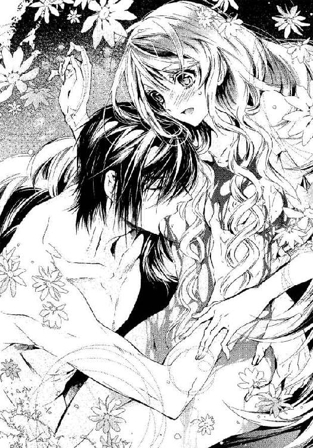
誤解が解けたことに、ヴィオラは安堵しつつ、記憶を手繰った。
「言い含めた、こと──」
──私に貞潔を誓うがいい、そうすれば丁寧に愛してやろう。
──永遠に、きみは私だけの物だ。
まるで愛の誓いのような言葉。
昨夜、ヴィオラの純潔を奪った時、彼はそう言ったのだ。
ヴィオラはアレックス以外の名前を口にしてもいけないし、見てもいけないのだった。
「あっ、......すみません」
それくらいでは許せないのか、彼はまだ不機嫌なまま、ヴィオラを見下ろした。
「私がこのままでと望んだら、きみは一糸まとわぬまま私にその身を委ねなくてはならない。それなのにきみは神父の教えを優先しようとした」
「そんな──」
「あれほど言っても守れないなら、体に言い聞かせるしかないようだな」
黒い眼差しが妖艶に輝き始めた。身動きできずにいるヴィオラを、見下ろし、彼女をまたぐように膝をついて覆いかぶさり、彼は再びヴィオラの肌を貪り始めた。
「あっ......あん」
ヴィオラが絹のような肌を震わせてもがいた。舌先で、胸をなぞられて、その奥にちりちりとした疼きが灯り、肌が熱を帯びてくるのを感じた。
「ひ......、あぁん」
甘く上ずった声が、彼をまた煽ってしまうのか、喘げば喘ぐほど、激しく肌を吸われ、嬲られてしまう。
乳房に散らした果汁を全て舐め上げても、まだ彼は飽きずに貪っている。胸を執拗にしごき上げ、果汁を舐め干すと、腹から下へと移動する。
「さあ、祈るがいい」
アレックスが皮肉めいた口ぶりでそう言った。
しかしヴィオラの口からあふれるのは、甘く潤んだよがり声ばかりだ。
「......ゃ......っ、ああん」
アレックスの愛撫は恥部までやってきた。
ヴィオラは、昨夜覚えた、稲光が走るような快感を待ち望んで、息を詰めていた。
しかしアレックスは、一番敏感な場所には触れなかった。
その刺激を求めて、腰がひくひくと波打ってしまう。
「あ、......あ、ん」
「どうしてほしいんだ？」
彼は焦らすつもりのようだ。
「あ、......そ、......そ、こ──」
ついと、長い指で会陰をなぞって彼は言った。
「ここをどうしてほしいんだ？ 言わないなら、このまま見ている」
「さ、......さわって、ください」
彼は意地悪い。
「さっき、私はきみの肌に触れていたいと言ったのにきみは服を着ようとした。それなのに今さら強請るのか」
彼は果実に添えられた薄紫のランの花をむしりとると、ヴィオラの足の間に挿し入れた。
「きゃっ」
「花びらに花を添えてやろう」
ひやりとした花鞘がヴィオラの女陰にねじこまれた。唇弁がまるで膣孔から花開いたように顔を出した。
「きみよりも熟れた花だ。花弁の周りがいやらしく縮れて、真っ赤に色づいている」
そう言って、彼はランの花の中心に指を入れて、ぐりぐりと押し込んだ。
「......ひ......、っあ、あ」
アレックスが指を離すと、ランの花がゆっくりと押し出される。ヴィオラの膣肉がぜん動して、異物を包み込もうとしているが、溢れ出す愛蜜で滑って流されてしまう。
「いやらしくうごめいて、花を吐きだしてしまうな。こちらはどうだ」
彼はヴィオラの尻の下に手のひらを挿し入れて、後ろの秘孔をまさぐった。
「あ、......ダメっ、そんなところ......ダメですっ」
「間諜を疑ったら、まずここを調べるのが原則だ」
彼は容赦ない。
ランの花を膣から抜いて、彼女の菊門に挿しこんだ。
「あっ......」
冷たい茎と花鞘に侵入され、ヴィオラの背が小さく反り返った。
悪寒が背筋を這う。細い茎なのに存在感がある。
未知の刺激に苛まれ、ヴィオラはそこに神経を集中してしまう。
自分の声さえその部分に響いてしまいそうだ。
「こちらも敏感なようだな。私は神の恵みを享受する。きみは祈りを唱えるがいい」
彼は二房目の葡萄をヴィオラの腹の上で絞った。血のような果汁が彼女の下腹を濡らし、秘裂の溝に浸潤した。
「ぁあっ......んん」
冷えた刺激に思わず濡れた声を漏らしてしまった。
彼の濡れた舌先が、淫唇の谷を丁寧になぞり、葡萄の汁を舐めた。
獣のような音を立てて、襞の奥に染みた果汁を全てしゃぶり取る。彼の舌が肌を嬲るたびに、ひくひくと膣奥が震える。熱いような感覚が、後孔の異物感と交錯する。
「ひ......ゃっ......、あ、ああう」
「変わった祈りだな、だが、とてもいい声だ」
ぬるりとした感覚がヴィオラの陰核を包んだ。
「あぁ、......んっ、そ、こ......」
一瞬の快感だけ与えて、それは濡れ襞へと移動する。
「あ、......も、っ...と......あ」
懇願するようなヴィオラのよがり声に、ようやく満足したように彼は小さな花芽にしゃぶりついた。たまらない快感にヴィオラの体が跳ねた。
尻の中の異物感がそれに拍車をかけて、何倍にも感じてしまう。
もう、羽根布団が汚れることにも気を回せないくらい、頭の中いっぱいに愉悦が弾ける。
「はあっ......あ、......あぁぁ！」
どくん、と体が弓なりに反り、法悦の波に合わせて何度も痙攣した。
足の間からざっと熱い物が溢れ、会陰を流れて尻まで濡らした。
全身から力が抜けて、屍のように羽根布団にへばりついた裸身を、アレックスが熱いまなざしで見下ろした。
「達ったのか。前と後ろの両方で」
大きく胸を上下させ、呼吸がおさまるのを待って、ヴィオラはようやく切れ切れに言った。
「あ......あの、う──罰は、まだ、続いて......ますか？」
官能の嵐が静まってもまだ、ヴィオラの体の奥が熱く燃え盛っている。この火照った肉体を放置されるのも、お仕置きか罰なのだとしか思えなかった。
罰、と繰り返してアレックスは眉をひそめた。
「何の罰だ」
「......人形のふりをして、あなたを騙した罰です」
すると彼は憮然として返した。
「私は騙されてなどいない。......だがきみは新しい罪をいくつも犯した。今もまた、私に集中していなかった。そういう意味では罰は終わっていない、永遠に終わらない」
そして唇を重ねてきた。葡萄の味がした。
「ん......、あ......、アレックス......様」
あがくヴィオラの腰を引き寄せ、彼は再び、むさぼるような口づけをした。
ヴィオラも彼の唇を求め、舌を挿し入れて絡めた。
口づけだけで、血が躍るような興奮を覚える。
白くなよやかな体をくねらせて、彼の唇を吸う。先刻の愛撫で恥ずかしいほど多くの花蜜を零して、後孔に挿入された花を濡らし、さらに羽根布団にも至っている。
胸と胸と擦り合わせ、強く抱き合う。
コツコツとヴィオラの下腹を叩くのは、硬く膨れ上がった彼自身だ。
肌にそれが触れただけで、ヴィオラの膣奥が疼いて淫らな蜜がまた溢れてきた。
唇を重ね、互いに舌を絡めて甘い雫をすすり合う。
熱い息を感じ、のどの奥まで彼の舌が入ってくる。もっと満たしてほしい。体の全てをアレックスでいっぱいにしてほしいと思う。
彼の手が、ヴィオラの花芯を探った。秘裂を二度、三度と指でなぞり、滑らせた指先を小さな花蕾に押し当てた。
「あ......んぅ」
すっかり覚えてしまったその快感に、悩ましい吐息がヴィオラの唇から漏れて出る。
「こんなに濡らして」
くちゅ、ぐちゅ、と音を立てて、彼は肉襞を掻き回した。
「く......、アレックス......様、あ、あん」
かすかに痛みの残る濡れ襞なのに、そこに触れられると強烈な愉悦が体を貫く。
「深く挿すとまだ痛むのではないか？ こうして指だけで慰めてやろうか」
「ふっ......あん、......ああん」
腰がいやらしくうごめいて、彼の指をもっと深く咥えこもうとしてしまう。
「物欲しげにひくついて......、なにが欲しいのか言うんだ」
「そ......な......、......んっ」
彼の灼熱が欲しいのに、恥ずかしくて言えない。
彼はヴィオラの膣中を捏ね回したり花蕾を弄ったりを繰り返す。ヴィオラの体はほんのりと薔薇色に染まり、魚のようにぴちぴちと跳ねた。
ポットの湯が沸騰して溢れてくるように、体に収まりきらない快感が弾ける。
「あ、ぁあっ──っ」
大きく腹を反り返らせ、ヴィオラの四肢が硬直した。
「何度でも達くがいい」
ぴくん、ぴくん、とまだ痙攣が続いている。
膣孔も細かく震えてしまうのが自分でわかって恥ずかしくなり、ヴィオラはアレックスの胸にすがりついた。
「指をいやというほど締めつけている。もっと欲しいのだろう」
「はい、......欲しい......です」
「何が？」
やっぱりこの人は意地悪いと思う。
「い、言えません、そんなこと」
「口に出して言えないなら、触れてみろ。きみの欲しい物に」
彼は、自分からは何もしないと決めたようにヴィオラを見つめている。ヴィオラは半身を起こして彼の上に身を乗り出した。
「これ......をください」
ヴィオラはおずおずとアレックスの肉棒に手を添えた。びくん、と脈動し、硬度を増した。
「どこに欲しいのか、自分で導くんだ。非道はしたくないからな」
そうやって焦らす方が酷いとヴィオラは思ったが、体が求めてやまない。
彼女はアレックスの胸にしがみつくように寄り添い、灼熱を足の間に挟み込んだ。
そして下腹を押し出すように彼の腹へと擦り付けた。
くっ、とアレックスが低く唸り、苦しげに顔を歪めた。
「たった一晩で......、淫らな体になったものだな」
彼はそう言って、突然体を反転してヴィオラにのしかかった。
彼女の足を開かせて怒張を挿し入れる。
「ああっ......ふ」
軽い痛みと、突き抜けるような快感にヴィオラは震えた。
アレックスはずぶり、ぬちゅりと肉茎を前後に抜き差ししながら次第に深みへと入ってくる。膣襞を押し開き、抉ったかと思うと焦らすように後退し、また攻め入ってくる。
菊門を穿っていた花鞘とアレックスの肉棒が、内壁を隔ててゴリゴリと擦れるのがたまらなく気持ちいい。
「ああ、......それ......いいのっ」
「いやらしい女だ」
彼に突き上げられるたびに、ヴィオラの丸い胸がぷるぷると揺れる。赤く色づいた果実が物欲しげに震えるのを見逃さず、アレックスはそれをきつく掴んだ。
「いた......っ、あんっ」
鷲掴みにされた痛みにまで膣奥が反応して彼の怒張を締めつけてしまう。
「きみは私だけのものだ。誰の目も見るな、私だけを見ろ」
甘い言葉に酔いしれる。今だけのかりそめの言葉かもしれないのに。
ヴィオラはこんなに感じてのたうってしまう自分が恐ろしくなる。
彼は掴んだ胸を口に含み、舌を巻きつけた。
ちゅうと吸ったかと思えば歯を立てたり、指でくるくると弄ぶ。
その刺激が体の芯を通って膣洞へと走り抜ける。
「あ、......あ、っ」
濡れ襞が彼の陰茎を包んで締めつけてしまう。
彼の衝動を促すように、貪るようにうごめく女陰に応えて、アレックスの灼熱もより大きく硬く変化して、ヴィオラの子宮口をいたぶる。
最奥を突かれて、ヴィオラの肉体が硬直した。
「はぁぁっ......、あう！」
瞼裏に白い光がさく裂する。
ヴィオラは無意識に彼の腰に足を絡めて、内腿を締めつけていた。
「わたし......変わっちゃう......、いや、いやぁ......！」
たぷたぷと蜜をたたえた膣襞を、容赦なく掻き回されて、ヴィオラの心がどこかに飛んでしまいそうになる。
「持っていかないで......っ」
彼女はアレックスの背に爪を立ててしがみつく。
「うっ......、持っていかれるのは、......こっちの方だ」
掠れた声で、アレックスが言った。
抽送がさらに激しくなり、駆け上るように熱情が高まる。
「あ、......あ、あ、あっ......！」
どくん、とヴィオラの中の肉棒が震え、びゅくびゅくと熱い飛沫を吐きだした。あまりの激しさにヴィオラの体内から外れ堕ちたランの花にも白濁が零れ落ちる。
アレックスの力がふと抜けて、ヴィオラにずしりと重みがかかる。
それを抱きしめながら、彼女は、幸せを感じたのだった。
＊ ＊ ＊
伯爵邸の元家令のラントン氏ももう、ヴィオラの正体は知っているようだった。彼は、女物のドレス一揃いを持ってきて、朝食は二人分、ご用意しましょうと言ってすぐに出て行った。
「あのう......自分で着ます」
「だめだ、人形らしくするんだ」
アレックスはそう言って、ヴィオラの自由にさせない。
ラントンが来る前に、彼はシュミーズ姿のヴィオラを愉しそうに眺めながら、自分は絹のシャツと黒いベルベットのブリーチズを身につけ、パールグレーのベストをはおっていた。
そして茶色の革の編みあげブーツを履き、クラヴァットを結ぶと、アレックスは初めて見た時のように、冷徹で隙のない美しい青年貴族に戻った。
いつの間に調えたのか、ヴィオラのために用意されていたのはパニエを使わない、すらりとした形のドレスだ。
サーモンピンクの絹サテンで、ウエストが高い位置にあり、古代の女神のような衣装だ。後ろの腰部分に細かいプリーツが寄せてあり、ふわりと盛り上がったシルエットが美しく、左腰に大きなリボンが縫い付けられている。
アレックスは数年、外国を渡り歩いたという噂だった。ヴィオラはあまり見たことがないが、異国ではこういうドレスが流行っているのかもしれない。
彼はヴィオラの背に回って、小さなボタンを一つ一つ留め始めた。
「このドレスにはオルゴールがついていないが必要か？」
彼の軽口にヴィオラは驚いて振り向く。交わした視線は穏やかで、間諜か、娼婦かと責め立てていた時の冷たさは影をひそめていた。
どうしたのかと問いかけるように、アレックスに瞳を覗きこまれ、彼女は頬が熱くなって慌てて前を向いた。
「なぜ人形のパントマイムをやるようになったんだ？ 誰かに教わったのか」
「いいえ。自動人形を見て、真似をしていただけなんです。でも、父が人形でわたしをあやしてくれた記憶がぼんやりとあって、それで惹きつけられたのかも」
「人形で？ 生き別れのお父さんが？」
アレックスが、昨夜の尋問とは違う、柔らかな口調で質問を重ねた。
彼はヴィオラに関心を持ち始めたのだろうか──そんな甘い予感がして、彼女は胸の高鳴りを感じながら答えた。
「はい。画家だったそうですが、売れなくて......機械仕掛けの人形や、レンズを使った道具などを作って売っていました。そちらの方が才能があったみたいです」
アレックスがしばらく沈黙した。ドレスのボタン留めに手間取っているのだろうか。ヴィオラが彼に背中を向けたまま気配を探っていると、彼は言った。
「お父さんは、なんという名前？」
「クレーマン・フォルストです」
「両親は離婚したのか？」
アレックスの質問攻めに戸惑いながらも、ヴィオラは全てを正直に話した。
「いいえ、父は大きな町に発明品を売りに行くといって出かけたまま、消息がわからなくなったのです」
「いつ？ どこで消息が途絶えた？」
アレックスの手が完全に止まった。ヴィオラは振り向いた。
彼は真顔でヴィオラを見つめていた。
その眼差しに怒りや非難の色は見えないが、何かを探っているような真剣さが窺える。ヴィオラの生い立ちに、問題があるというのだろうか。
「わたしが二歳の時、ロッシュからマトリアに向かうという手紙が届いたのが最後だったそうです。だからほとんど父の記憶がないのです」
「顔かたちはわかるだろうか？ 自画像はないのか？」
「父もわたしと同じ髪と瞳の色をしていたそうです。売れない絵より、発明の方に時間をとられていたと言います。自画像は残っていませんが、写し絵はあります」
「写し絵？」
「カメラ・オブスクラという装置でものの形を紙に写し取ったものです。画家が風景画を描くときに、正確な形を得るためによく使われていたものですが、父はそれを持ち運べるほど小さく改良して売ろうとしていたようです」
「カメラ・オブスクラ──」
アレックスの目がきらりと光った。
彼がこのことに強い関心を示した理由はヴィオラにはわかる。
彼が書棚に保管していた紙も、同じ原理で写された物だったからだ。しかし、ヴィオラはそれを見たと言うべきかどうか迷った。アリサの落ち度を告げることにもなってしまうからだ。
「その写し絵を見ることはできるか？」
「はい、父の写し絵は母がずっと持っています。でももう随分黒ずんでしまって、目鼻立ちもよく見えなくなってしまいました」
だから、父の姿は、人形を操って幼いヴィオラを喜ばせていた思い出と、鮮明だった頃の写し絵だけで、いずれもヴィオラの記憶にしかない。
アレックスの興味はまだ尽きないようだ。
「きみたち母子は、お父さんを捜してこの街にやってきた？」
「そうです。父の消息を捜しながらロッシュで何年か過ごした後、母が職を失ってこちらに移ってきたんです」
「お母さんはヴィクトリアという名前ではないのか？」
突然その名を言われてどきりとした。
血染めの写真の余白に書いてあった名前だ。彼は、あの親子を捜しているのだろうか。
しかし、ヴィオラには彼の期待する答えは返せない。
「いいえ、テレーゼです」
そうか、とアレックスは言い、しばらく無言になった。
「どうかしたんですか？ アレックス様」
ヴィオラの呼びかけに、彼はなんでもない、と言って、衣装と共に運ばれてきた小箱を開けた。真珠のネックレスだ。
「そのドレスにはこちらが似合う」
ヴィオラの背後から、彼は真珠のネックレスをヴィオラの胸元に飾り、うなじで留めた。
執拗とも思える質問は終わり、彼の興味が削がれたのを感じたが、ヴィオラに対するやさしさは変わらなくてほっとした。
「こんな高価なもの......、いえ、ドレスもですけれど。傷がついてしまうといけないので外してください」
「高価だから外してというなら、ドレスも脱がせろということかな？」
からかうように意地悪い物言いをするアレックスをヴィオラは困ったように見つめた。
「プディングがついていてもいいです。人形のドレスを着ます」
「なんて頑固な女だ」
アレックスは苦笑した。
それから、ヴィオラの両肩に手を置くと、彼は噛んで含めるように言った。
「きみは不思議な雰囲気を持っている。意志が強くて慈悲深い。言葉遣いも柔らかくて知的だ。高価なドレスにも負けていない。そういう女性は、ちゃんとした物を身に着けるべきだ」
そして、彼はヴィオラの額にキスをした。
まるで、貴婦人に接するようなやさしさで──。
ヴィオラの胸がとくん、と鳴った。またこの人への想いが強くなってしまう。
彼が自分をどう思っているか、わからないのに、憧れだけが大きくなって辛い。
アレックスは、深紅のベルベットのガウンを彼女の肩にそっと着せ掛け、食事に行こうと言った。
＊ ＊ ＊
朝食は美しい箱庭に運ばれていた。
煉瓦の壁で仕切られた小広間ほどの空間にハーブ園と、異国から集めたであろう珍しい低木が植えられており、雨よけのテラスの下に丸テーブルと椅子が置かれていた。
ミントグリーンのクロスを掛けたテーブルに、銀の器が並べられている。
ラントン氏が前菜です、と言ってラディッシュと千切りにしたレモン皮、薄く切ったチーズと鶏肉のサラダを小皿に盛りつけた。
ヴィオラにとってはそれだけでも、ここ数年口にしたことのないようなご馳走だ。
「どうした？ まだ人形のふりか？ 私が食べさせてやろうか」
ヴィオラが豪華な食事に驚いてためらっていると、アレックスがそう言ってフォークを取った。
次に、ポタージュが、続いてスズキのゼリー寄せ、詰め物をした豚のロースト、フルーツのカスタード添えが運ばれた。これでも朝食なので質素だという。
家で待っている母のことを思うと、ヴィオラはほとんどのどを通らなかった。
なぜ食べないのか、というように瞳を覗きこまれ、ヴィオラは目を伏せた。
彼が端麗な顔を寄せて、何か言おうとした時、コンラートがやってきた。兄に冷たくあしらわれながらも、この邸に泊まって、今起きてきたばかりのようだ。
「ここだったのか、兄さん。捜したよ......ラントン、ぼくの分もここに用意してくれよ。──おや、これは美しいな！」
最後のセリフはヴィオラに向けられたものだ。
ラントン氏がかしこまりました、と言って従僕に指示した。
ヴィオラは会釈をしたものの、なんとも気まずい思いで小さくなっていたが、コンラートは彼女をしげしげと見つめて言った。
「マトリアにこんな美人がいたのに、どうしてぼくが知らなかったんだろうな？ ひと目見たら、絶対に忘れるはずないのに。......ここに無事でいるということは、間諜でも刺客でもなかったんだね」
コンラートの調子のよい世辞とわかっていながら、ヴィオラが赤くなった。すると、アレックスが露骨に嫌な顔をして言った。
「勝手に同席するな。私は許していないぞ」
「昨日協力したじゃないか。人形の仮面を剥がすのにさ」
不満顔のアレックスをものともせず、コンラートは立ったままテーブルに並んだ前菜を口に放り込んだ。
「実にミステリアスだ。これから彼女、どうするの」
彼は、ヴィオラとアレックスの顔を交互に見て言った。これからどうなるのか──、それはヴィオラが知りたいくらいで、彼女もアレックスの答えを待った。
「コンラート、おまえには関係ないだろう」
アレックスの返事はすげなかった。
そこへ、従僕のカイがやってきてアレックスに小声で言った。
「アレックス様、旦那様がいらっしゃいました」
へええ、とコンラートが興味深そうに言った。
「呼べよ、ここに。楽しくなりそうじゃないか。いい機会だ」
アレックスが彼を睨んだが、断る暇もなく、伯爵が現れた。
いかめしい顔をしているが、その口から真っ先に出たのは、先日のような辛辣な言葉ではなかった。
「腕はなんともないのか」
アレックスはその顔に、微かな驚きを浮かべた。
伯爵は、舞踏会の後の騒ぎの後、姿を見せない息子を案じていたのかもしれない。
彼はヴィオラを見ると、視線を彼女に留めた。
ヴィオラは慌てた。アレックスが花嫁候補を断っておいて、女を連れ込んでいると伯爵に誤解されるかもしれない。
彼女は椅子から立ち上がり、ドレスをつまんで膝を折って一礼した。
「わたし、席を外させていただきますね」
彼女がそう言って退出しようとすると、伯爵はそれを手で制して言った。
「かまわん、用件はすぐ終わる」
伯爵の言葉に、コンラートが淡い褐色の目を丸くした。
伯爵はアレックスに視線を戻すと、重々しく言った。
「アレックス、......それと、コンラート、おまえもだ。明日、ギニョン地区の聖マグダレナ教会でミサがあり、そこの司祭から招待状が来ている。二人でそれに参列するように」
──マグダレナ教会......！
ヴィオラは、なじみのある教会の名前が出て驚いた。しかもそれは、アレックスが憎悪する『ヘル』にあるのだ。
アレックスもコンラートも無言だったが、その顔には驚きとも不服ともとれる表情が浮かんでいる。伯爵は続けた。
「招待された時はむろん、忌まわしい場所なので、無視しようと思っていたが、考え直した。特にアレックスは、事件を克服する必要がある。明日でもう十五年になる。事件の面影もなく生まれ変わった教会へ行けば、恐れることなど何もないとわかるだろう。明日のミサへの参列を命じる。避けるのではなく、乗り越えることが必要なのだ」
ヴィオラにはわからないことも多いが、十五年前にあの教会で、忌まわしい事件が起こったらしい。アレックスが子どもの頃に誘拐されたことがあると言っていたから、そのことかもしれない。
克服する必要って何だろう、とヴィオラは考える。
──銃を持った男に追い回されて、最後には必ず心臓を撃ち抜かれるのだ。
アレックスの悪夢を語った言葉を、ヴィオラは思い起こす。
無事だったのに、夢の中で必ず撃たれるのは、なぜだろう。
ヴィオラは、それが知りたくて、アレックスの答えを待った。
伯爵を見返すアレックスの黒い瞳には、軽く侮るような表情があった。
「そういうことではありません。あなたは全然わかっていない」
彼は怒りを抑えたような口調で話し始めた。
「私が忌まわしいと思っているのは、人間の狂気なんです。犯人にそうせざるを得ない理由があればまだ理解できる。だが、何の必然性も理由もなく殺し、何のためらいも反省もない。今の私なら、彼を見つけたら撃ち殺すのは簡単だ」
ヴィオラはアレックスの言葉を、真剣に聞いた。
彼の心の奥まで、理解したかった。そして一言も漏らさず、その声にこもる心の動きすら見逃さないよう、じっと耳を傾けていた。
アレックスは言葉の重さを噛みしめるように語った。
「だが、おそらくそいつは人を殺すのと同じように、自分が死ぬことも何とも思わない。処刑される時も、裁く者を嘲笑し、見物人を嘲笑し、被害者をも嘲笑しながら逝くんだろうと思うんです。それで正義が勝ったと言えるのか。そういう魂の闇がどこから生まれてくるのか？ そういう闇に対して、どう戦ったらいいかわからないんです」
コンラートも珍しく真顔で聞いていた。
伯爵は、苛立ったような表情になり、ヴィオラに向き直った。
「あなたは息子の友人か？ アレックスの屁理屈の意味するところがわかるかね？」
その口調は、おまえは何者だ、情婦なら気持ちを代弁しろ、と言っているようだった。
「彼女は関係ない」
ヴィオラへの八つ当たりと思ったのか、アレックスがきつい口調で言った。
父子が睨み合い、険悪な雰囲気になった。
「あのう......申し上げてもよろしいでしょうか」
ヴィオラは丁寧に言葉を選んで言った。
伯爵は驚いた顔をしたが、空いた椅子に腰かけると、言ってみなさい、と答えた。
「その事件についてはわたしは存じませんが、アレックス様はこうおっしゃりたいのだと思います。......貧困が理由で起こった犯罪なら、貧困をなくす努力をし、怨恨が理由であれば、その問題を解決するということで、同じ種類の犯罪を減らすという希望が持てます」
ヴィオラは懸命に言葉を紡いだ。正しいかどうかわからないが、アレックスの言葉から感じ取ったことを、少しでも多く伯爵に伝えたかった。
「でも、理由のわからない殺意は防ぐのが難しいですし、良心を持たない犯人に対しては死をもって報いたところで、犠牲者の心は永遠に救われません。それどころか、宿主をなくした殺意は形を変えてずっと残るような気がします」
伯爵やコンラートだけでなく、アレックスも、ヴィオラを凝視している。的を射ないことを言ってしまったかもしれない、とヴィオラは不安になった。
しかし、彼女は思うこと全てを言うのだ、と自分を励ました。
「......そういう魂の闇を、人は悪魔と呼ぶのだと思います。──アレックス様は、それがどういう環境で人に取り憑くのか、マトリアから根絶するにはどうしたらいいのか、と悩んでいらっしゃるのではないでしょうか」
ヴィオラは言い尽くして、ふっと息を吐いた。皆が、食い入るようにヴィオラを見ている。
その視線と静けさに、彼女は我に返った。
「あ......、差し出がましいことを申しました。お許しください」
慌てて頭を下げるヴィオラに、伯爵は意外な言葉を投げかけた。
「いや、......よくわかった。それであなたは、事件の現場である教会へ、息子を行かせることをどう思うかね。残酷かね」
その態度が少し緩やかなものになった気がした。ヴィオラは少し考えた。
「アレックス様のお気持ち次第だと思います。その時期がきているのかどうか、それはご本人にしかわからないのではないでしょうか」
ほーう、とコンラートが吐息した。
ヴィオラが勝手に気持ちを推測してしまったことをわびるようにアレックスを見ると、彼は目を逸らしていた。その顔が少し赤くなっていた。
「なるほど。アレックスはそれで異存ないようなので、明日のことはその意志に任せる」
そして伯爵は帰って行った。
「ぼく、やっぱり彼女は間諜だと思うな」
コンラートがぽつりと言った。ヴィオラは驚いて彼を見た。快活で、鷹揚に見えるコンラートにまで糾弾されてしまうのかと──。
「兄さんの考えていることが全部見通されているじゃないか」
「え、あの、違──」
慌てるヴィオラに、彼は悪戯な笑顔を見せて言った。
「いや、いいんだ。どんどん覗いてやってくれ。いい傾向だから」
そしてコンラートも去り、二人だけが残された。
重苦しい沈黙が続き、いたたまれなくなったヴィオラがおずおずと口を開く。
「あのう......ごめんなさい、アレックス様」
アレックスはワインを一口飲んだ。ヴィオラとは視線を合わせてくれない。
彼が怒っているのだと思って、ヴィオラは泣きそうになった。
「勝手な思い込みで話してしまいました。でも、本当に間諜なんかじゃないんです」
涙声になったのを聞いて、ようやく彼はヴィオラを見た。
彼は腕を伸ばし、ヴィオラの金色の髪に触れた。
長い指をその髪に絡め、弄んでいたかと思うと、その手を彼女のうなじに回して引き寄せた。
「......あ」
顔を重ねられ、唇を奪われて、ヴィオラは言葉を失った。
それから、唇をわずかに離して、アレックスが言った。
「きみは間諜の上に、泥棒だ」
ヴィオラが驚いて彼の顔を見ようとしたが、すぐにまた唇を重ねられた。アレックスの舌が乱暴にねじこまれ、ヴィオラの口中を這う。
「ん......、ん──」
泥棒と言われたことが悲しくて、ヴィオラがあがいた。小さな手で彼の胸を押しやろうとするが、首筋と腰をがっしりと掴まれ、口腔の全てを舐めとられてしまった。腕から力が抜け、頭が混沌となり、全身を彼に委ねていないと崩れ落ちそうになった。
激しい口づけの後、彼は言った。
「泥棒だ。私の心を盗んだ」
「......え？」
ヴィオラの小さな頬を撫で、指先で赤い唇をなぞり、アレックスが言った。
「最初見た時から自分の物にしたいと思っていた」
吐息まじりの色めいたバリトンの囁きに、ヴィオラは青い瞳を瞠った。
知的で、冷徹な美貌の主が、今は熱い眼差しで彼女を見ている。まるで恋をしているような、真剣な目に見入られて、ヴィオラは息が苦しいほど鼓動が高鳴った。
「アレックス......様......？」
彼はヴィオラの手にその大きな手を重ねた。そして指を絡めてしっかりと握りしめた。
「昨夜言ったことは本気だ、私の傍にいてくれないか」
それはどういう意味なのだろう、とヴィオラは推し量ったがぼうっとしてよくわからない。
「......つまり、朝も昼も夜も一緒にいろということだ。その美しさで私の目と心を癒し、夜半にうなされたら起こして、言葉に詰まったら代弁する」
「朝も昼も夜も──」
「こうして一緒に朝食を食べたら、庭園を散歩したり、哲学について語るのもいい。そうだ、庭園を案内しよう。きみに似合う場所がある」
彼はそう言うと、ヴィオラの肩をやさしく抱き寄せて、席を立った。
＊ ＊ ＊
父に懸命に語るヴィオラの言葉を聞きながら、アレックスは心の鎧を破壊されたような気がしていた。
人形に扮してやってきた少女が、寝室だけでなく、心の奥にまで侵入した。
そして、これまで理解し合えないと思っていた父が、彼女の言葉には耳を傾けたのだ。
いったい彼女は何者なのだ？
いや、彼女が何者であろうと、関係ない。
身分の違いなど、どうでもいい。
彼女の心も体も、全てが欲しい。
自分以外の誰の目にも触れさせたくない。
彼女が自分以外の誰を見つめるのも許せない。
小さな器に閉じ込めて、愛玩人形のように、愛でるのだ。
彼女を世間から隔絶し、自分の世界の中だけで生かしていく。
ヴィオラをアレックスだけに依存させ、その心をも溺れさせて──。
いや、溺れているのは自分だ。
今はただ、彼女に溺れていたいのだ。
「アレックス様、どこへ行くのですか？」
彼はヴィオラの肩を抱いて足早に歩いて行く。
朝食を取っていた箱庭のような空間から、小さな白いアーチをくぐりぬけると、緩い坂道になっていて、しばらく行くと広大な芝生の庭に出た。
神話の女神像を象った噴水が白い水煙をあげている。
あちらこちらで庭師が植物に手を入れていて、アレックスを見ると会釈をした。
噴水の池を通り過ぎ、ミモザの茂みを通ってもまだ彼は足を止めない。
マトリアの大学街の端から端までよりも長い距離を歩いたと思う。
「アレックス様......」
広大な庭園の中、ひとりで歩いたら迷ってしまいそうだ。
やがて鳥籠にそっくりなドームが見えた。
アレックスは不機嫌な顔で、命令するように言った。
「ここだ。中に入るんだ」
差し出がましいことを言って嫌われてしまったのかも──と思うと、ヴィオラは途方に暮れつつ、従順に、その中へ入って行く。
白塗りの鉄棒でできた鳥籠は、子どもの遊具のようにも見える。檻に蔓バラがからみつき、内側には白いベンチが置かれていた。
まるで、恋人のために作られたような、愛らしい憩いの場所だとわかったが、アレックスの態度にはそこで対話をしようという甘やかさはなかった。
「あの......、アレックス様？」
すると、突然鳥籠の扉がカシャンと音を立てて閉まった。
「あっ？」
振り向くと、アレックスが檻の外に立っていた。
「アレックス様？」
ヴィオラは驚いて扉の方へ駆け寄った。深紅のベルベットのマントが肩から滑り落ちる。
アレックスは冷笑を浮かべ、鳥籠の外側から彼女を見据えて言った。
「小鳥を閉じ込めた」
「......あ、開けてください」
白い鉄の檻を両手で握りしめてヴィオラは外にいるアレックスに呼びかけた。
「泥棒のきみにふさわしい場所だ」
「ひどいです......っ、わたし、そんなつもりじゃな──」
突然、アレックスは檻越しにヴィオラの背中を抱きしめ、唇を重ねた。
頬に鉄の檻が触れて冷たい。
「......っん」
彼の手が背中から首筋へ、そして金の髪を撫でる。触れられるだけで、ヴィオラの心は彼のことでいっぱいになり、彼の口づけをうっとりと受け入れてしまう。
舌と舌を絡めあい、貪りあううちに、彼の手がヴィオラの腰へと降りていく。
パニエを使わないドレスの上から、彼の指はヴィオラの双丘を確かめるように擦った。
「ふ......うん、んん」
滑らかな絹地越しに、丸い尻の形をなぞり、谷間へと指を這わせる。
「......やっ」
びくん、と体が反応して、ヴィオラののどが仰け反る。
唇が離れて、甘い吐息が漏れた。
「ん......、い、やです、アレックス様」
「黙っていろ、お仕置きだ。まず、第一に、コンラートの目を見つめた上に、赤くなった。私以外の者を見るなと言ったはずだ」
「そんな......、でも、赤くなってなんて」
いくら彼の命令でも、彼の身内に話しかけられて無視するわけにはいかないのに、無茶ばかり言う。アレックスは尚も、ヴィオラの尻肉を弄りながら、口でも責め立てる。
「昨夜の誓いは嘘か？ 私は誓う以前から、きみ以外の女には目もくれなかったのに」
誓う以前とは──？ ヴィオラは考えを巡らし、舞踏会のことだと気づいた。彼は、確かに、十人の美しい令嬢に目もくれず、まっすぐヴィオラに向かって歩いてきた。
そんな時からヴィオラに惹かれていたというのだろうか。
「弟だけじゃない。きみは、父まで籠絡しようとした。父があんな寛容な態度を見せるはずがないのに。きみの作戦か？ 父を懐柔してどうしようというんだ」
「そんな......こと、してません」
「無意識か、恐ろしい女だな」
彼はヴィオラを鳥籠に閉じ込めたまま、外からいたぶり続ける。
尻を嬲っていた手をさらに下ろしてヴィオラのドレスをまくり上げた。
「あっ、だめ......っ」
あがこうとしても無理だった。彼は左手で細いうなじを捉えて離さないまま、右手をヴィオラの足の間に滑り込ませた。
「は......うっ」
長い指で秘裂を弄られるだけで、ヴィオラの体の奥が熱を帯びてくる。彼の指は焦らすようにゆるく動いているだけなのにヴィオラの陰核が疼いて、触れられるのを待ち焦がれているかのようだ。
アレックスは彼女を弄ぶかのように、花びらをこじあけ、指を挿れたかと思うと、するりと逃げて、敏感な粒を刺激する。
「や......ぁっ、あん」
ヴィオラは檻を掴んだまま上体をのけ反らせ、足でアレックスの手を強く締めつけた。
「濡れてきた。こんな場所でも、きみは淫らだな」
彼は、ぐちゅぐちゅと中をかきまわし、溢れた花蜜を指にまとわせて、谷間を滑らせる。じわりと心地よい感覚があふれ、ヴィオラは淫らな動きで、恥骨を檻に押しつけた。
彼はヴィオラの左膝を掴んで引き上げた。恥ずかしい部分がさらされる。
「ひっ......ん」
そしてヴィオラのドレスの腰帯を解いて、彼女の太腿を高い位置で檻に縛りつけた。
膝を檻から突き出す格好になった。秘所が曝されたまま帯で固定されて、完全に動けなくなってしまった。太腿に鉄棒が当たってひやりとした。白い桃肌が軽く粟立った。
「あっ。こんな......嫌ですっ。アレックス様、解いてっ」
「ここは庭園なのにこんな美しい花をスカートの奥に隠すことはない」
彼はそう言うと、膝をついて屈み、むき出しになったヴィオラの陰唇に顔を埋めた。
「ああ......、いやあっ」
耳をふさぎたくなるような、淫靡な濡れ音がそこから聞こえる。
リズミカルに舌を抜き差しされ、とろとろと甘蜜があふれてしまう。縛られていない足の太腿を白い雫が伝い、ストッキングの内へ流れ落ちる。
「はぁん、......アレックス様......」
膣孔がひくひくと動くのが自分でもわかって恥ずかしい。
下腹の筋肉が収縮して、濡れ襞を震わせた。
「あ、あん、......達ってしまいます、わたし......もう」
ヴィオラのしどけないよがり声に、アレックス自身も張りつめてきたようだ。ブリーチズをくつろげると、彼の灼熱が待ちかねたように姿を現した。
既に熱を帯びて、天を突こうかというように頭を立ち上げていた。
「さあ、私の形だけを覚えるんだ」
アレックスは、自分の分身に左手を添えてヴィオラの濡れ襞に狙いを定めてあてがう。
そして、ずぶり、と押し込んだ。
「あっ──」
内臓が押し上げられそうな、大きな抵抗がヴィオラの中に挿入ってくる。ぐ、ぐ、と勢いをつけて押し込まれ、彼女の口から嗚咽が漏れた。
「まだ狭いな」
彼は苦悶するように眉を寄せて、もう一突きし、檻越しに体を繋げた。
「ぁあ......うっ」
庭師に見られるかもしれないのにという不安が官能をよりかきたてる。
彼が最奥まで到達した。ヴィオラの体内が彼の形を強いられ、疼痛と甘い刺激にくちゅくちゅと啼く。
「あんっ、苦し......い......です」
何度挿れられても、その大きさに慣れることはできず、体が悲鳴をあげてしまう。
彼が少し後退した。先端のくびれにヴィオラの膣襞がえぐられ、痺れたような感覚がそこから広がる。同時に肉棒がヴィオラの淫核を擦りあげ、火花が散るような快感が瞼の裏を駆け抜ける。彼が動くたびにヴィオラはびくびくと痙攣してしまう。
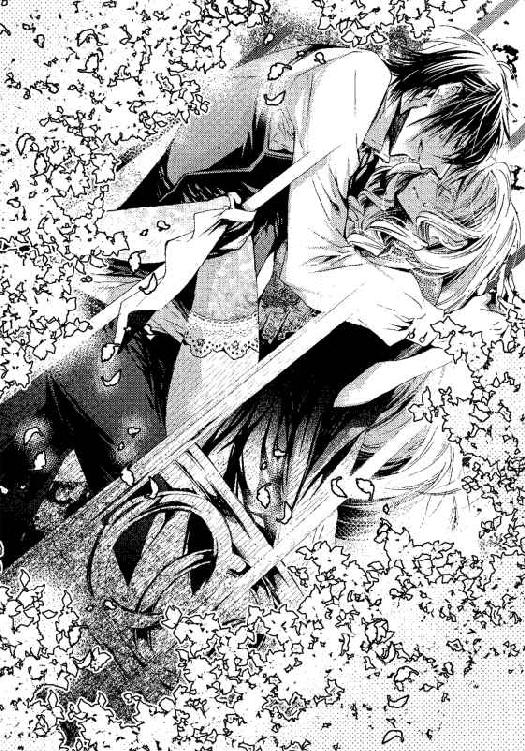
「うっ......んん」
荒い呼気と泥濘のような音、そして鉄檻のきしむ音が朝の冷気に沁みていく。
「ヴィオラの中は、熱くて、淫らに締めつけてくる」
「いや......淫ら、なんて......」
「これでも違うというのか？」
ヴィオラのせいいっぱいの抗議を一蹴するように、彼が灼熱を引いた。
「あ......、ぁ」
彼女の肉襞が引きずり出されそうになる。彼はぎりぎりで止まったままヴィオラを見下ろした。せつないほどの喪失感に見舞われて、花弁が彼の節くれだった陰茎に絡みつく。
「や、......ぅ......っ」
ヴィオラは無意識に彼の背中に爪を立てた。狂おしさに悶えるヴィオラを見てようやく気が済んだのか、彼は再び突きあげた。
「これがほしいんだろう？」
「ああっ」
圧迫感に息が止まりそう。肉洞が小刻みに震えて彼を締めつけるのがわかる。
ぐちゅりと音を立てて、彼は最奥まで達し、子宮の扉を叩く。
「あっ......あんっ」
膣孔から快感が這いあがり、体中を満たして溢れる。
「いっちゃう、もうだめ......っ」
アレックスの動きが激しくなる。檻の振動する音が速さを増していく。
「あっ、......ぁ──っ」
とくん、と肉棒が荒ぶった後、アレックスの精が弾けた。
ヴィオラの体が痙攣し、後ろに崩れ落ちそうになる。アレックスの腕がそれを抱きとめ、強く引き寄せて、熱い液体を吐き続けた。
意識がもうろうとし、ヴィオラは官能の楽園をさまよう。
彼はヴィオラから自身をずるりと引き抜き、彼女の膝を縛っていた帯を解いた。ようやく両足が地についた。内腿を白濁した液体が伝い落ちる。
「檻が邪魔だ」
彼はそう言って、扉を引いた。ヴィオラが寄りかかって倒れそうになるのを抱き上げ、自らも鳥籠に入った。
四季咲きの薔薇が檻に絡んで、甘い香りを漂わせていた。
アレックスは白いベンチの前でヴィオラを下ろし、彼女の手をベンチの背もたれにつかまらせた。ヴィオラの腰がくだけそうになり、ベンチに膝をついてしまうのを、彼が背後から下腹に腕を回して支えた。
「まだ、足りない。もっと繋がるんだ」
彼はそう言って、スカートをたくしあげ、ヴィオラの白い柔らかな尻を曝した。
「あ、......見ないで......、嫌です」
恥ずかしい姿勢をさせられて、彼女は息も絶え絶えに訴えた。
完璧な曲線を描く輪郭、張りのある双丘が互いに押し合って作る淫靡な秘襞、その奥から白い滴が溢れて足首まで流れてしまっている。全て露わにされて、彼の視線に触れていると思うだけで消え入りたくなる。
「美しい。私を何度でも駆り立てる」
その言葉通り、ヴィオラのさらけ出された花芯に、硬い物が触れた。
吐精したばかりなのに既に隆起したアレックスの剛直がぬるぬると蜜口を探り、性急に挿入ってきた。
「ああっ」
驚くべき速さで硬さと太さを回復した灼熱に、ヴィオラの肉体が穿たれていく。
ベンチの背もたれを掴むヴィオラの手に、アレックスの手が、指と指を絡めるように重ねられた。
ヴィオラの指の間を彼の指がなぞり、そのくすぐったい感覚にヴィオラが喘ぐ。
首筋にアレックスの熱い呼気がかかり、ヴィオラの背中がぞくぞくした。
「きみを思うだけで、こんなふうになる。きみはどうなんだ、私が怖いか？」
「い......え、............怖く、ないです」
「それだけか？ 私をどう思っている？」
アレックスが問いかけて、答えを待つようにヴィオラのうなじに唇をあてた。濡れた舌でそろりと撫でたかと思うと、急所を探るかのように舌先で抉った。
「あ、あぁ......っ、ううん......」
「返事になっていない。答えないなら、こうしてやる」
ヴィオラの肉襞をまといながら抜け出ていく、アレックスの肉棒が、二人の体液を掻きだしてあふれさせる。ずるりと持っていかれそうになる切なさにヴィオラが悲鳴を上げる。
「やぁ......っ、アレックス様......、お慕い......してます」
「それくらいでは聞かないな。私だけが一方的ではつまらん」
彼は焦らすように陰茎を中ほどで保ち、ぐりぐりと掻きまわした。
「ひぁっ、ああん......、あ、ん」
濡れ襞の浅いところを擦られて、びくん、と大きくヴィオラの体が痙攣した。熱く弾けるようにそこが震え、媚蜜がとろとろとあふれた。
鈴を振るようなヴィオラの声と、ベンチのきしむ音、女陰の蜜音が交錯し、それに煽られるように、ヴィオラの中のアレックスが膨張して圧迫する。
「ああっ、......好き......ですっ、アレックス、様......っ」
「まあ、それでよしとしよう」
彼はようやく満足したのか、獣の交合のような姿で体を重ね、最奥まで貫いた。
「うう......ぅ......はぁ、ん」
ベンチに手をついて、崩れないように持ちこたえるのがせいいっぱいのヴィオラを、アレックスは容赦なく突き上げる。
「はぁっ、......あっ、もう......壊れて、しまい......ます」
「壊れることなどない、愛し合う者が誰でもやっていることだ。慣れろ」
愛し合う、という言葉にヴィオラの胸が疼いたが、赤い唇から零れるのは嬌声ばかり。
「あ、んん、......っ、ぁぁ、あ」
媚肉が押しやられて、アレックス自身に占拠され、ヴィオラの初心な肉洞が蹂躙される。ちゃぷちゃぷとほとばしる花蜜が、彼女の大腿を濡らしていく。
「ああ......っ、で、も......っ、もうすぐ、人形が──っ、んん」
身代わりの人形がやってきて、ヴィオラの役目は終わるのに。
そうしたら、別れがやってくるのに。
アレックスは激しく彼女を穿ちながら言った。
「人形などいらない、きみだけでいい。離すものか、ここに永遠に閉じ込める」
身に余る愛のこもった言葉に、ヴィオラの眦から涙が伝い降りた。
硬い灼熱が子宮口を連打し、とくん、と跳ねた。
肉襞が歓喜に小刻みに震えて彼の肉棒を締め付けた。じわりと熱い物が広がる。
「あ、......あ、あ、......ぁあっ」
ほとばしる熱情を受け止めながら、ヴィオラの意識は青い空に吸い込まれた。
＊ ＊ ＊
気がつくと、ヴィオラはアレックスの寝室の長椅子に横たえられていた。
あまりに激しい抱擁に、意識をなくしていたらしい。
「あ、......ごめんなさい」
ヴィオラは慌てて半身を起こした。アレックスの美しい瞳が心配そうに覗きこんでいる。
「悪かった、やり過ぎたかもしれない」
彼は長い指でヴィオラの金の髪を梳いた。
「きみがあの頑固な父の心まで捉えたことに、私は焦りを覚えたんだ」
「そんなこと......。伯爵様もあなたを理解したいと思っていらっしゃるんです」
「もう言うな！ 他の男のことなど」
彼はそう言って、荒々しくヴィオラに接吻した。
──自分から言い出したのに......。
「次の舞踏会にきみも出るんだ、人間の女として」
「え......っ？」
ヴィオラは一瞬理解に苦しんだが、彼は真剣な顔をしている。
野獣のような激しさは今はおさまってはいるものの、黒い双眸はまだ熱っぽい。額に垂れた乱れた黒髪や、乱れた衿開きからのぞく鎖骨、汗に混じったムスクの香り──彼に関わるあらゆる物から色香が立ち上っている。
「そこで、私とちゃんとしたダンスを踊ってほしい。だめか？」
舞踏会の硬い動きのダンスを思い出してヴィオラはふっと微笑む。
だが、人形でなく人間の女として、社交界の人々の前に姿を現すなんてできない。
あまりにも場違いだ。彼はきっと一過性の熱病にかかっているのだ。
「いいえ......もうゼンマイが切れてしまいましたから」
アレックスは探るようにヴィオラの瞳を見つめた。
「冗談だと思っているのか？ 私は本気だ」
ヴィオラの心は激しく揺れた。
また体から力が抜けて、彼の胸に寄りかかってしまうほどに。そっと引き寄せられて、ヴィオラは天に昇ってしまいそうな幸福感に酔う。
嬉しいのに怖い。
いつか崩れてしまう束の間の幸せに違いない。
「......お祈りをさせてくれない方は困るのです」
これ以上流されないようにと、ヴィオラはささやかな抵抗を試みた。
アレックスは一瞬眉を上げると、ぎゅっと抱きしめて言った。
「わかった。そんなに言うなら祈っていい。不本意だが、数十秒の間、きみの心を返してやろう。だが体は逃げないように捕えておく」
彼の胸に頬を押し当てたまま、ヴィオラは祈りの言葉を口にした。
「......主をほめまつらん」
官能に溺れて彼を受け入れてしまう自分が少しうしろめたく、祈りの言葉が滞る。
しかし、ヴィオラは何とか続きの文言を唱えた。
「──神に感謝したてまつる。願わくは天使の王が、われらを天の食卓にあずからしめたまわんことを」
「......それで終わり？」
アレックスは祈りの静寂を破ろうとしているのだろうか。いいえ、もう少し、と小声で言って、ヴィオラは付け加えた。
「メメント・モリ」
最後の言葉を唱えたとき、ヴィオラを抱きすくめていたアレックスの腕がぴくりと動いた。
そして、彼は腕を緩め、驚いたようにヴィオラを見た。
「今のは......？」
「これは、オルフ神父が教えてくれた言葉です」
彼は形よい眉をひそめて、問い返した。
「祈り？」
「いいえ、死を記憶に留めて、日々を悔いなく生きろという教訓で、神父がいつも唱えている言葉なんです」
アレックスの切れ長の目が、瞬きも忘れたようにヴィオラを凝視していた。
「......その神父は、どうしてヘルに？」
祈りの何に、アレックスが引っかかりを覚えるのかわからない。しかし、神父といえど男だと言って妬心を見せる彼に説明するのはためらわれる。
「神父さまのことを話してもいいのですか？」
おずおずと、ヴィオラは彼を見上げて言った。
「ん？ ああ、──嫉妬はほどほどにするから、話してほしい」
ヴィオラは安心して、真実を言おうと思った。彼にはもう嘘をつきたくない。
「神父様は、四十を過ぎて熱病を患った時、夢に天使が現れて、マトリアのマグダレナ教会を立て直すように、というお告げを受けたそうです。それで、たったひとりで、朽ちた教会の修繕を始めたと聞いています」
「どこの修道会派？」
「それが......どこにも。最初、平信徒として懸命に教会の修復をしていただけだったんです。その姿を見て周囲の人が彼を『神父』と呼ぶようになって、きれいになったマグダレナ教会も評価されて、教会が重い腰を上げて司祭に叙任したんです」
「それまではどこで何をしていた人物なんだ？」
単純な質問なのに、ヴィオラは答えられなかった。彼が教会に来る前にどのような暮らしをしていたかは、一度も聞いたことがなかった。
「傭兵上がりということはない？ メメント・モリというのは古の将軍が自分を戒めるために側近に言わせていたのが始まりなのだが」
それはヴィオラは初耳だった。
「わかりません。昔からマトリアにいたのではないとしか」
「メメント・モリの言葉を、彼はたとえば腕にそういう印をつけていなかったか？」
それは、皮膚に何かの方法で描くということだろうか？ しかしヴィオラの記憶にそんなものはなかった。
「体に......？ さあ？ 神父様は決して肌を見せないですから」
答えながら、ヴィオラは訝しげにアレックスを見上げた。
「彼はどんな風貌をしている？ 鼻筋が通っているとか、目の色とか」
アレックスは執拗に尋ねたが、その瞳に嫉妬や怒りの色は見えない。ただ、獲物を見つけた野獣のように高揚した、微かな悦びのような物が見える。
「アレックス様のような......その、美しい方ではありません。五十過ぎていて、鼻は丸くどっしりとしていますし、目は灰色です。あ、前歯が一本抜けています......あのう、何か──？」
彼の黒い双眸は、ヴィオラに向けられてはいるものの、もう彼女を見てはいないようだった。自分の祈りの何が気に障ったのかわからない。
懸命に彼の瞳を覗くが、アレックスの意識はもうヴィオラにはないようだ。彼は精悍な顔をふと彼女に向けて言った。
「ちょっと、......席を外す。人形師が来ても、きみはここにいろ、どこにも行くな」
そう言ってアレックスは出て行った。
自分の祈りがそれほど奇妙だったろうか、とヴィオラは不安になった。
＊ ＊ ＊
「お人形さん、おはようございます」
入れ違いにアリサが大きなメイドボックスを抱えてやって来た。三つ編みを揺らして元気よく入ってきたものの、何を聞いたのか、彼女は戸惑うようにヴィオラを見ている。
「あの......おはよう......」
もう隠すことはないのだと思い、ヴィオラも彼女に答えた。
アリサはつぶらな褐色の瞳をさらに丸くして叫んだ。
「──ラントンさんの言うとおり、お人形さんじゃなかったんですね。アレックスさまはうそつきですね」
純真なアリサにかかると、嘘が嫌いな彼すらもうそつきになってしまうらしい。ヴィオラは慌てて彼を弁護した。
「ごめんなさい、わたしがアレックス様を騙していたの。わたしは、ヴィオラというの」
アリサはボックスから雑巾を取り出して、それを両手で握りしめた。
「アレックスさまのおよめさんに来たのですか？」
「いいえ。三日間だけ、お人形の代わりをしていたの」
すると、アリサはしょんぼりとした顔つきになった。
「そうですか......、もう帰っちゃうんですか？」
「ええ。ごめんなさいね、本当はあなたとたくさんお話ししたかったわ」
ヴィオラがそう言うと、アリサは急に顔を赤らめて、慌てたように言った。
「あ、あのっ、いろいろしゃべったこと、アレックスさまに言いますか？」
メイド頭の悪口や愚痴を、人形相手と思って彼女はあけすけに言っていた。
「言わないわ。絶対に」
「よかった......、ヴィオラさんがおよめさんだったらいいのに。メイドはほんとうはお客さんに姿をみられてはいけないので」
彼女はいつものように暖炉の前にしゃがみ、灰をかき集めてボックスに入れた。
「でもしょうがないですね。アレックスさまはずっとさがしている人がいるのです」
ヴィオラが人形であろうとなかろうと変わりなく、彼女はよく喋る。
「さがしている人......？」
ヴィオラが問い返すと、アリサはちらりとこちらを見て言った。
「はい、女のひとを、ずっとさがしていなさるんです。一生めんどうをみると言っていたから、その人を見つけてけっこんするんだと思います」
とくん、とヴィオラの胸が突かれた。
彼には想い人がいたのか。
「そう、なの──だから、舞踏会をぶち壊しにしたのね」
ヴィオラの頭の中で、カチリとつじつまが合った。無駄に高価な人形を買って、舞踏会で奇行を見せて花嫁候補たちを退けた理由がはっきりとわかった。
そしてそれは思ったより深く、ヴィオラの心を抉ったのだった。
──何を期待してしまったの、わたしは？ あたりまえのことなのに。
あんな美しい人を、女が放っておくはずはないのに。
夢のような一夜は、罪人を罰しただけだったのに。
やさしくしてくれたのは、ヴィオラを娼婦と疑って処女を奪ったことへの埋め合わせにすぎなかったのだろう。
「およめさんになるのは、その人。たぶん」
アリサがつまらなそうにそう言い、暖炉の鉄具を磨き始めた。
ヴィオラの心臓の高まりはまだおさまらない。
自分がどうして動揺しているのかわからない。
もし、彼に想い人がいるとわかったからだというなら、自分はお調子者だ。
少しやさしくされたからといって、わずかでも本気にしていたなんて。
愛されたわけじゃないのに。ばかね、わたし。
どこまでも暗い洞へ落ちそうな気持ちを、ヴィオラは懸命に引き上げて言った。
「あの......縫い物があったら手伝おうと思うの」
「ほんとうですか？」
アリサが心から嬉しそうな笑顔を向けた。
「アレックス様の奥様も、縫い物が得意だといいわね？」
ヴィオラは声が震えないように、必死に取り繕った。
テオが来れば、家に帰れる。
アレックスに想い人がいるとわかって、ここにいるのが辛くなってしまった。
彼は、テオが来てもここにいろと言っていたけれど。
一刻も早く立ち去りたい。家に帰りたい。
これからはもっと働こう。人形の大道芸をするだけでなく、テオさんの縫い物も安くていいからもっとたくさん引き受けよう。
彼のことが心の隙間に入らないほど忙しくなればいい。
しかしその日、午後になっても人形師は現れなかった。
◇ ◇ ◇
雪の降る日に、ヴィオラと母テレーゼは住むところもなく彷徨っていた。
「おかあさん、こんや、どこでねるの？」
幼いヴィオラは不安になって母を見上げた。
「ロッシュのおやしきにかえろうよ」
「あそこにはもう帰れないのよ、ヴィオラ」
ヴィオラが物心ついた時、裕福なお邸でテレーゼはそこの娘の家庭教師として働いていた。
数年勤めたが、その令嬢が結婚してしまうと、テレーゼは用済みになった。
それから、蓄えた金と宝石で食いつなぎながら、とうとうマトリアまでやってきた。手持ちの金が尽きた冬の夜、彼女はヘルに足を踏み入れた。
今になって思うと、母はいよいよ花街へと、心が傾いていたのではないかと思う。
ヘルの街区を歩いていると、ショールをかぶった女たちが街に立って男を誘っていた。
テレーゼは青ざめていた。故郷から持ってきた宝石は全て売り払ってしまった。
あとは感光紙というものに印画された夫クレーマンの写し絵だ。
これは金になるはずもなかったし、手放せない物だ。
「どうされました？ 具合がよろしくないのですか」
母はびくっとして振り向いた。
しかし、その強張った顔は、すぐに穏やかになった。
冬空にさまよう母子に声をかけたのは、緑色の祭服を着ているところを見ると神父だろう。丸く低い鼻が、人懐っこく、灰色の目は静かで知的な印象を与えた。
老人でもないのに前歯が一本抜けていて、笑うと何とも滑稽で、醜い男ではあったが、相手を安心させる雰囲気を持っていた。
「もし行くところがなければ、マグダレナ教会においでなさい。温かいスープとパンしかありませんが、凍えることもないでしょう」
テレーゼにとっては、神が手を差し伸べてくれたような心地だったであろう。
娼婦に身を落とす寸前に、神父に呼びかけられたのだから。
聖マグダレナ教会──それは古く、手入れもあまり行き届いていなかったが、雨露は凌ぐことができた。
色数は少ないながらも、神の説話を表したステンドグラスを擁した小さな聖堂がある。
中央奥は丸いドーム屋根をもつ後陣となっており、主祭壇がある。その手前は身廊で、左右に礼拝用の長椅子が並んでいる。戒律の厳しい時代には、男女が左右に分かれて着席し、祈りを唱えていたという。
その最後列の長椅子に、疲れ切った母子は身を寄せ合って座った。
「さあ、おあがりなさい。神は子羊を決して見放しません」
そう言って、神父は豆の入ったスープとパンを恵んでくれた。
その上、毛布も差し出し、落ち着くまで、教会で寝泊まりすることを許してくれたのだった。
人心地がつくと、テレーゼは神父の祭服のほころびに気がついた。
テレーゼは縫い物ができると言って、祭服を巧みに繕った。
神父はエトワールという、首の後ろから前に垂らす長い直垂を縫ってはどうかと提案し、その手間賃を支払ってくれた。刺繍をほどこせばさらに高値で買い取ると言った。
そうやって、ひと月ばかり飢えと寒さを凌いだ頃、神父が人形師の貸家がひとつ空いており、人形師にはいろいろと用立てしているので、無理が効くと言い、紹介してくれた。
家主のテオの工房と、その貸家は少し離れていたが、ヴィオラはからくり人形やマリオネットが面白くて、それらを眺めるのが好きだった。
テレーゼがエトワールを縫っている間も、ヴィオラは人形をじっと見つめ、その動きを真似して遊んでいた。
ある日、テオが作った自動人形というものを真似て道端で踊っていたら、通行人が面白がってコインを投げて寄越した。ちょうどそれを拾おうとした時、テレーゼが帰ってきて、拾ってはいけないときつく叱った。
物乞いではないのだから、と彼女は言ったが、ヴィオラは、踊りを誉められてもらうお金だから物乞いとは違うと思った。
やがて、無理がたたって、母が体を壊した時、ヴィオラは顔を隠してあの踊りをやってみようと思った。
人形の服を縫うのを手伝う代わりに、テオにマスケラという仮面を作ってもらった。
そして、ヴィオラは街路で人形の真似をするようになったのだった。
◇ ◇ ◇
マトリア大学の職人街──。
結局、アレックスはずっと戻らないし、彼に想い人がいるとわかって耐えられなくなったのとで、置手紙をして出てきてしまった。
人形師のところへ行ってきます、と。
このドレスは必ずお返しします、とも書き加えて。
「テオさん、こんにちは！」
その夕刻、ヴィオラは三日ぶりに人形工房までやってきた。
マトリア大学周辺は大学中心に南北にカフェ、本屋、家具屋、錠前屋などが店を構える職人街、東西には学寮が建てられ、学寮通りと呼ばれている。
職人街を上って行くと、白漆喰の壁の上方から、歯車の形をデザインした鉄の看板が突き出ているのが見える。
売り台には色あせた灰緑色の布が敷かれており、その上に商品が並んでいる。
民族衣装を着た男女一対のマリオネットや、服を着た猫、ゴブレットを手にして乾杯をする擬人化された犬の人形たちが──長いこと売れずに放置され、その衣装も古びてしまっている。
客は冷やかしの子どもばかりで、恐ろしい女房のドーラがいない時を見計らっては、勝手にゼンマイを巻いたり、マリオネットを操ったりして遊んでいる。
「あ、ヴィオラねえちゃん」
子どもたちはもう顔なじみだが、ヴィオラのいつもと違った装いに目を丸くした。
「人形を悪戯しているの？」
ヴィオラがたしなめるように言うと、子どもはパッとオモチャを放した。
「見てただけだよ、おいら、どろぼうじゃないよ」
「わかってるわ。でも、ぼうやたち、もう帰りなさい」
ヴィオラに促されて彼らは逃げるように帰っていく。ヴィオラの胸が騒いだ。テオもドーラも店先にいなくて、子どもに好き放題させているなんておかしい。
「テオさん......！ いませんか？」
声をかけながら工房の奥に入って行く。
ヴィオラは床に散らばった道具につまずいて転びそうになり、帆布を被せた人形らしきものに手をついてしまった。
「ぎゃっ」
布の下から男の悲鳴のような声が聞こえた。帆布をめくると、テオがいた。
「テオさん。どうしたの......、何があったんですか？ わたし、待ってたんですよ」
「ゆ......、ゆ、許してくれっ。出来心だったんだ」
彼は何かから逃げ隠れているようだ。
「出来心って何です？ 伯爵様の邸に来なかったこと？」
テオは怯えた顔で言った。
「す、すまない。人形は......ドーラが持ち去った。高値がつくと知って欲に目がくらんじまって、二重に売ろうと言い出した。わしは止めたんだ。朝起きたら、ドーラもいなくなって、金も人形もなくなってた。おまえさんを迎えに行こうにも入れ替わるはずだった人形が、なくなっちまった。もうだめだ......！」
「そんな──、テオさん？」
ヴィオラも跪いて、詳しく問いただそうとしたが、テオは許してくれ、と繰り返すばかりだった。もはやヴィオラが失敗してしまったことなど、どうでもいいように彼は取り乱してしまっている。本物の人形もなく、お金も返せなかったら、いったいどうなるのだろう？
「ドーラさんの行先に心当たりはないの？ 誰か、知り合いとか......」
テオは涙と無精ひげにまみれた顔を上げて、ぼんやりとした目つきで記憶を手繰っている様子だった。ふとその褐色の目に光が戻る。
「三日前──、オルフ神父と話していた。今日が返済の期限だと、そういう確認だったかもしれん。ようやく人形が売れて、今度こそ耳を揃えて返せると思った矢先にあいつが金と一緒に消えちまった！」
「三日前にすぐ返さなかったんですか？」
「今まで、稼いだ金は全部ドーラに取り上げられてしまった。今度もそうだった」
「どうしてヘルなんかから借金を......」
ヴィオラが震える声で言うと、テオが身の置き所もないような風情で言った。
「あれは、聖職者が金貸しをするわけにはいかんから、そう言っていたが、本当は神父が貸してくれていたんだよ。しかし気のいい神父で、頼めば返済を日延べしてくれた。利子は膨れ上がるが、これまでもずっとそうやってなんとかなってきたのに、今度ばかりは明日のミサに必要だから今日までに必ずというんだ。ミサはそんなに金がかかるのかね？」
「それはわからないけど......、明日は神父様にとって特別な日で、高貴な人たちにも招待状を出したと聞いているわ」
神父がそのミサに、伯爵家まで招待していたことは、ヴィオラも今朝初めて知った。
かねてから、その日は夢のお告げのあった、記念すべき日なので、ぜひ教会に祈りに来るようにとオルフ神父に言われていた。
アレックスに神父について細かく尋ねられたことが、ヴィオラの心に引っ掛かっている。
彼に問われて初めて、神父が以前、何をしていた人なのか、と疑問に思った。それは今、ますます深い謎となってきた。
ヴィオラは呟くように言った。
「どうして神父様がそんな大金を貸すことができたのかしら？」
すると、テオが目をぎょろりとさせて、人目をはばかるように話した。
「あの神父は......堅気じゃないと思うよ、今はともかく昔は。......以前、赤子を洗礼するときに袖がまくれて、腕に刺青があるのをちらと見たことがある」
「え？ 刺青......！ 神父様の腕に、どんな模様があったの？」
「模様じゃなくて、......なんか文字だったような」
ヴィオラの頭の中で、何かが弾けた気がした。
──腕に......文字？
何の符合だろうか。
『メメント・モリの言葉を、彼はたとえば腕にそういう印をつけていなかったか？』
アレックスの言葉が蘇る。彼は何を知っているのだろう？
「もし、返せなかったら借金はどうなるの？」
「今日返せなかったら、家もおまえさんたちに貸している長屋も全て取り上げられちまう。人形工房も、全部！」
ヴィオラは青ざめた。テオの損失に比べたら小さなことかもしれないし、自分勝手かもしれないが、母とともにあの家を追い出されてしまう、ということが真っ先に頭をかすめた。
今度こそ、ヘルの娼館が間近に見えた気がした。
アレックスにも損失が生じる。
そして置手紙をして飛び出してきた自分は──？
本当のペテン師になってしまう。
＊ ＊ ＊
マグダレナ教会──。
その教会は花街にあり、十何年前には荒れ果てていたのを、オルフ神父がひとりで修繕と掃除をし、祈りを唱えて神の息吹を吹き込んだと言われている。
家に帰って母に先に会うべきだったかもしれないが、繊細な母のことだ、ヴィオラの顔色を見たら何か不都合が起きていると気づくだろう。
彼女はまずオルフ神父に会いに来た。
テオの借金のことや、家を追い出されることについて尋ねたかった。
あの家を勧めてくれたのもオルフ神父だった。
「こんばんは、神父様」
「おや、ヴィオラ。こんな時刻に......、その格好はどうしたのですか？」
黒い長着の上に緑のカズラを羽織ったオルフ神父は、祭壇の蠟燭を付け替えているところだった。ドーラの失踪も借金も関係ないような静謐な空気をまとっている。
「これは、仕事先でドレスが汚れてしまったので、お借りしたのです」
ヴィオラがそう言うと、神父はヴィオラの頭から足先までさっと視線を走らせた。質素と敬虔を重んじる神父にとって、華美な格好が気に障ったのだろうか。
「すぐに家で着替えます。でもその家のことなのですが......テオさんの借金が返せないとわたしたちも、もう住めなくなってしまうのですか？」
神父は祭壇の燭台の蠟燭全てに火を点し終えると、身廊の方へと降りて来た。
「ああ、お母さんから聞いていないのですか？ テレーゼさんがそのことで、私にある品物を譲ることを約束してくださったので、あなた方の住まいだけは手をつけないと、話をつけておきました。安心して、いつまでもあそこに住まわれたらよろしいのですよ」
「まあ......！ ありがとうございます、神父様！ 本当に何とお礼を言っていいのか......、あの......、でもその品物って？」
「お父さんの写し絵ですよ」
「......え......！」
カメラ・オブスクラで写しだした父の肖像を？
たった一枚の父の絵姿なのに──。
暮らしに困って、ヴィオラが娼婦に身を落とすようなことになっては、と母はそればかり心配していたから。
とうとうその時が来たのかもしれないが、ヴィオラにとってはショックだった。
「あのう、本当によくしていただいて......感謝しています。でも、神父様は、それをどうなさるんですか？ 写し絵があっても、カメラ・オブスクラが作れるわけでもありませんのに」
すると、神父は静かな眼差しでヴィオラを見つめ、両手を横に広げて肩をすくめた。
「どうもしません。ただ、カメラ・オブスクラに関わるものが欲しいだけです。ですから、私に負債ができた、などと心苦しく思わないでいいのですよ」
「それは......ご親切に。ただ、あれは最後の頼みの綱でした......母にとっても、たった一つの記録なのです。それを手放すほど母は思いつめていたのでしょうか」
ヴィオラが悲しげに問うと、神父はさらりと言った。
「いいえ、むしろお母さんの心の整理がついたのではないですか？」
「心の整理......？」
ヴィオラが大道芸をしている間、神父はよく病身の母を見舞いに来てくれている。
その時に、教会ですべき懺悔も、病床で聞き届けているようなのだ。
だから、テレーゼは娘のヴィオラには心配をかけるから言えないような相談も、オルフ神父にはしているらしい。
彼は何を知っているのだろうか。
「テレーゼさんは、ご主人についてどう考えたらよいのか迷っているようでした」
「それは......どういうことですか？」
「ご主人、クレーマン氏があなたがたをおいて王都に赴いたまま連絡を絶った、ということについてです。旅先で病死したのだろうと、テレーゼさんは言っていましたが、本当のところは誰にもわかりません。よそに女ができて捨てられたと噂されて、いたたまれなくなって故郷を出たと──」
「そんな──！ 父はそんな人ではないと思います」
「あなたは物心もついていなかったのでしょう、どうしてわかるのですか？」
「その......写し絵を見て、想像がつきますわ。母もそう言っていましたし」
そんな理屈が通らないのは百も承知だ。ヴィオラの願望にすぎない。
父が旅立ったのは、ヴィオラがまだ二歳の時だったと聞いている。だから父がどういう人柄であったかは、正直いってわからない。
父は売れない画家だった。
絵では食べていけないので、デッサンに使うカメラ・オブスクラや時計、からくりなどに工夫を加えて改良して売っていたという。
「テレーゼさんのご主人が一途にあなた方を想っていたがもうこの世にいないのと、彼が健在でどこかに別の家族を作っているのと、どちらがよいと思いますか？ ご主人が誠実であることを望めば、彼の死を望むことになってしまいませんか？」
矛盾する二つのことを、神父は冷静に分析しているようだ。
そんな残酷な可能性しかないのだろうか。
「母はそれを悩んでいたのですか？ それで、もう父のことはあきらめると......？」
ヴィオラは、父は妻子を愛しているけれども何か事情があって連絡を寄越せないのだと思いたかった。いつか会えると信じていたが、甘い考えだったのだろうか。
「おそらく──真実がわかれば、悩むこともありますまいが」
「父の写し絵は、母の重荷になっていたの......？ こんな遠いところまで探しに来たのに」
オルフ神父は慈愛のこもった目でヴィオラを見た。
「テレーゼさんにとって今の暮らしは相当お辛いでしょうね」
その言葉はヴィオラの心を穿った。
母が弱っているのも、この暮らしが過酷だからだと痛いほどわかっている。
「では、もう父のことをあきらめて、母の故郷に帰るべきですか。でも実家のことは何も言ってくれないし。わたし......どうしたらいいのでしょう。母に楽をさせてあげたいのに」
しかし、母が望んでもそこへ帰る旅費を作ることすら、到底不可能なのだ。
そんな心を見透かしたのか、オルフ神父が言った。
「かといって、娼婦に身を落とすような真似はいけませんよ。人間はいとも簡単に堕落する生き物です。たったひとつの大事な物を手放すだけで、贅沢ができるようになります。手放した物を振り返らなければ、その贅沢はずっと続くので、もう二度と戻れなくなってしまいます」
それは、アレックスに抱かれてしまったことも含まれているのだろうか、とヴィオラはどきりとして、神父から目を逸らしてしまった。
オルフ神父は禁欲と清貧を尊び、緑色の祭服の下にはいつも黒い長袖のチュニックを着て、どんな暑い季節でも肌を見せることはない。
ヴィオラにもいつも衿の高い服をと諭しているし、それを破ったことはこれまでなかった。
しかし、それが禁欲の象徴ではなく、肌を隠すためだったとしたら......？
あの袖の下に、何が隠されているのだろうか。
「どうしました？ 返事ができないのですか、ヴィクトリア？」
突然、違う名前で呼ばれて、ヴィオラははっと顔を上げた。
「え......？ わたし、ヴィオラですわ、神父様」
「いいえ、違います。あなたはヴィクトリアです。ヴィオラは、身の上を隠すためにお母さんがつけた仮の名前ですよ。彼女が懺悔室で告白したのですから間違いありません」
初めて聞いたことだった。
そもそも、懺悔室での告白は、他言してはいけないはずなのに。
娘だからいいのだろうか。
オルフ神父が言った。
「お母さん自身の名前も綴りを偽っています。郷里はバルーゼルで、現在は弟御が継いでいるとのことでした。彼女は郷里を出てからずっと、素性を偽ってきたのです。娘にまで嘘をついていたのですね。それであなたのお母さんは心を痛めて病気になったのです」
ヴィオラという名前を、アレックスも半信半疑だという顔をしていた。
すみれの色を思わせるヴィオラの名が、瞳の色にそぐわないと彼は思ったのだろう。
──きみの瞳はブルーなのに？
自分の名はヴィオラではなかった？
ヴィオラは混乱していた。自分をとりまく何もかもが嘘のように思えてくる。
だが、信頼する神父の言うことだから、ヴィクトリアという名前は本当なのだろう。
「なぜ......そんな？」
ヴィオラが震える声で言うと、神父はよどみなく答えた。
「親御さんは、テレーゼさんに、行方の知れない男のことは諦めて、別の裕福な男性と再婚するように勧めたそうです。子どもは里子に出し、身一つで、と......それで、テレーゼさんはあなたを奪われると思い、実家を飛び出したのです」
初めて聞いた話だった。母はヴィオラを手放さないために郷里を出たというのか。
思い返せば、ヴィオラはどんなに貧しくても、母の愛情に飢えたことは一度もなかった。
家に戻って、母にすぐに確かめたいと思った。
ヴィオラの気が逸っているところへ、神父は意外なことを言った。
「私も力になれればと思い、その懺悔を元にあなたのお父さんの行方を調べました。そしてようやく、ある手がかりを得たのです」
ヴィオラはさらに驚いて、神父を見た。
「......父の居場所がわかったのですか？」
「はい。お母さんにはまだ知らせていません。ショックを受けるといけないので......先にあなたに見せましょうか？」
ショックを受ける、とはどういうことだろう。あまりよい結果ではないのだろうか。
寂しい結末を予感して、ヴィオラの心が陰った。
──でも、わたしがしっかりしなくちゃ。
ヴィオラは自分を励まし、神父について主祭壇の奥へと歩いた。
教会内は、司祭がミサを唱える主祭壇と、その正面の身廊を挟んで左右に長椅子が並んでいる。身廊を横切るように左右に張り出た空間は翼廊と呼ばれ、別の礼拝堂がある。
正面の主祭壇の奥に聖具室があり、特別な儀式に使う祭服や香炉などはそこに収めてあるらしい。
地下にはクリプトと呼ばれる祭室があり、そこには聖者の遺骨などが収められているというが、この教会にはまだ巡礼者が集まるような霊験あらたかな聖遺物はない。
ヴィオラは神父の後について、聖具室へと入っていった。
彼は物陰から大きな、なめし革の鞄を取り出した。
「重くて、そちらまで運べないので、奥の方まで来てくれますか」
神父がぜいぜいと息を荒げて言った。
はい、と答えてヴィオラが棚の並んだ通路へと入って行った。
「これですよ」
彼は革の旅行鞄を開いて、両手の平に乗るぐらいの細長い木箱を取り出した。
片面に四角い覗き窓、反対側に小さな穴が開いており、中にレンズが入っている。
「あ、これは......たぶん」
ヴィオラが、母から伝え聞いた形状通りだった。神父の声が明るくはずんだ。
「やはり、カメラ・オブスクラですか？」
「そうだと思います。母なら実物を見たことがありますから、確実にわかります」
「どうやって使うか知っていますか？」
「この箱の上部に薬液に浸した紙を当てるのだと思います」
「この紙ですか」
神父が取り出して見せた紙には、どこかの風景が焼きつけられていたようだが、全体が黒ずんでいてはっきりとはわからなかった。
「はい。画家がデッサンを正確にするために使っていた道具です。紙は硝酸銀という薬剤の影響で、長い間、光に当たると黒くなってしまうのです。母の持っていた物もそうでした」
「なるほど。あなたの説明は明確ですね、親譲りなのでしょうか、知的ですばらしい。......ちょうど、新しい紙も入っていました。しっかりと包まれているのは光を当てないためだったのですね」
彼は油紙と黒い布を開いて、白い紙をヴィオラに見せた。
それです、と言って、ヴィオラはカメラ・オブスクラの箱に一枚の紙をはめ込んだ。
「これで、明るい所に置けば、何かが焼きつけられるはずです」
神父は驚きと喜びに満ちた顔をして、その道具を見つめた。
「ありがとう、私の夢は、これで神の写し絵を撮ることなのですよ。あとでこれを祭壇に向けて、身廊に置いてみましょう。......では、これは何だかわかりますか」
彼はまた鞄に手を突っ込んだ。
そして、ヴィオラの自動人形を小さくしたような金髪碧眼の人形を取り出した。
地面から大人の膝あたりまでの高さしかなく、ピンクのドレスとボンネットをつけ、両手にはレースの手袋をしていた。
「それは......？」
神父はゼンマイを巻き、それを床に置いた。
すると人形の手が動き始めた。片手を挙げて上半身を右へ、左へとひねって、時折首をかしげる。ダンスをしているようだ。
短いサイクルで、何度も同じ動きを繰り返した。
ヴィオラの脈が速くなってきた。
父の記憶はほとんどないが、ゼンマイで動く人形であやしてくれていたことだけは、うっすらと覚えている。
「あのう、それは誰の持ち物なんですか？」
ヴィオラがたまらず、そう尋ねると、オルフ神父はつぶれた丸い鼻をかりかりと指で掻いて、少し言いにくそうに語った。
「鞄には、これらの品物と一緒に、通行許可証が入っていました。クレーマン・フォルストと書いてあります」
「えっ」
父の名前だ。母が偽っていなければの話だが。
「大変残念な結果になってしまいました。......彼が亡くなって、明日でちょうど十五年になります。鞄の中に人形とカメラ・オブスクラと写し絵を詰めて、王都へ向かう途中、この町を通りかかったのでしょう」
「......亡く、なって......？」
覚悟はしていても、悲しみは湧いてくる。
父と再会して、貧窮した生活から抜け出すという希望も、父を見つけるんだという生きがいもなくなってしまう。
その希望は父の商売が成功して、他に家族を作ったりなどしていなくて、それでもなぜか連絡を取れなくなったという都合の良い前提の上に成り立っていたが。
「体調のすぐれないテレーゼさんに悪い影響を与えるのではないかと思って、あなたにだけ言っておこうと思ったわけです」
その配慮はありがたいと思った。
ヴィオラだって辛いが、母が弱るのはもっと辛い。
「明日が父の命日なのですか？ どうして亡くなったんですか」
母に変わって聞き届けようと、落胆を抑えてヴィオラが尋ねた。
『明日で十五年』という言葉を、どこか別の場所でも聞いたような気がした。
明日は何の日だったか。神父が盛大なミサをすると言っている明日、何を祈るのか？
神父は静かな声で、ゆっくりと言った。
「聞きたいですか？ その前にもう一つ、大事な物が入っていました。これを開けて中をご覧なさい」
神父はガラスの小瓶を取り出し、蓋を外してヴィオラの鼻先に差し出す。ツンとした匂いの気体を吸い込んでしまい、ヴィオラの頭がもうろうとなった。
──何......これ？
ヴィオラは立っていられなくなり、崩れるように床に膝をついた。
神父がその肩を抱きかかえた。
「話が長くなるので、楽にして......。そう、私につかまりなさい」
神父の声が遠くで響いているように聞こえた。
第五章
気がつくと、ヴィオラは両腕を高く上げて磔刑の聖人のような格好で縛められていた。
──ここは......どこ？
手首が痛い。
胸も苦しい。
両手首に縄がきつくまかれて食い込んでおり、動くと擦れて痛い。
足首は揃えて下の方で格子に括りつけられていた。
──どうして、こんな格好にされているの？
聖具室で薬のようなものを嗅いで気を失っていたらしい。
その間に何があったのか。
ぼんやりとした景色が次第に鮮明になり、自分が今、教会の中、後陣にいることがわかった。
眼下に主祭壇が見える。
自分がぴたりと背中をつけて留めつけられているのは、会衆席から見た時、正面の主祭壇の奥にある鉄の装飾格子だ。聖具室と祭壇を隔てるための格子で、いつもはそれを背にして、オルフ神父が祭壇から祈りや説教を垂れる場所である。
祭壇の上には、蠟燭の灯りがゆらめいていた。
床に、何か横たわっているのが見える。
裸の人間のように見えたが、もはや生命の気配がなく、だらりと手足を投げ出したままだ。ぞっとしたが、よく見ると顔はビスクの冷たい質感を備えている。
「これに見覚えがありますか、ヴィクトリア？」
ヴィオラの視界に、オルフ神父が入ってきた。
彼女が目覚めるのを待っていたらしい。
「テオ......さんの、自動、人形......？」
腕を吊り上げられているので、声がとぎれとぎれにしか出なかった。
ドーラが持ち去ったはずなのにどうしてここにあるのだろう。
「あの愚かな人形師の女房が、借金の代わりにこれをと言うのですよ。冗談じゃない」
神父の声がいつになくとげとげしい。
「私は明日、最高の典礼を行ってから国外へ高飛びするつもりですから、欲しいのは金だけです。隠し持っていた現金を没収して、あの女は花街に売り飛ばしてやりました。大した額にもなりませんがかまやしません。あのような忌まわしい者を目の前から消したかっただけですから。汚らしい血で祭壇を汚したくありませんでしたし」
あの気性の激しいドーラを、平素穏やかな神父が簡単にねじふせたというのだろうか。
しかしそれよりも今自分の置かれている状況が理解できず、ヴィオラは問いかける。
「神父......様、どうして......こんな？」
神父は、くしゃりと顔を崩して笑ったが目は笑っていない。
「私はねえ、この教会を立派に育てて、盛大なミサを開くのが夢だったのですよ。その時に、美しい無垢な娘を生贄に捧げようと思っていました」
──え......？
生贄、とは言い間違いだろうか。信徒は子羊であって、生贄ではない。
朦朧とした頭ではあったが、その言葉の違和感にヴィオラが引っかかりを感じて神父を見ると、彼は、暗い目を向けて言った。
「そう、ヴィクトリア、あなたですよ」
ヴィオラはぞっとして、言葉を失った。
神父は彼女を睨みつけた後、ふと視線を浮かせて語り始めた。
「あなたのお母さんは、聖母のように清らかですね。つまらない男に抱かれ、一子儲けたというのに、乙女のように純真で美しい。生まれが高貴だからでしょう。そして娼婦に身を落とすこともなく、あなたを立派に育てました。百合の花のように清らかな母子と、私は喜ばしく思っていたのです。しかし──」
しかし、と言った神父の声が、今まで聞いたことのない、低く凄んだ響きだった。
「あなたは貞潔を捨てましたね」
はっ、とヴィオラは息を呑んだ。
オルフ神父は祭壇のある後陣に上がり、自動人形をひと跨ぎして、ヴィオラの前までやって来た。
「私の目はごまかせませんよ」
彼は祭壇から蠟燭の芯切り鋏を取り上げると、その先端でヴィオラのドレスの衿元を開き、顔を歪めた。冷えた鉄の刃先がヴィオラの鎖骨に触れてぞわりとした。
彼が何を見ているかと、ヴィオラは視線を下げて愕然とした。
鎖骨の下に、うっ血した痕があった。
昨夜、アレックスに嬲られ、皮膚を吸われたのだ。
「そのような汚らわしい刻印をつけて。そうでなくても、硬い蕾だったあなたが、大輪の薔薇のように変化したのがよくわかります。どこの誰に、その肌を許したのか言いなさい」
そして、床に横たえられた人形の側に行き、神父は布靴を履いた足を動かし、自動人形の足を開かせた。
「これは懺悔です。全て告白して悔い改めれば、地獄には落ちないでしょう。あなたはこの人形のように淫らに足を開いたのですか」
いつもの神父と違う。これは彼の別の一面なのか本性なのか、それとも悪魔が憑いたのかとヴィオラは恐ろしくなって、無言で震えていた。
神父は祭壇に立てかけてあった錫杖を掴み、人形の股間をそれでぐりぐりと突いた。
「ここに、男を咥えこんだのですか、このように淫らに。これまで、私が細心の注意を払って、あなたが身を売らないで済む程度のパンとチーズを与え続けてきたのに。......贅沢を覚えない程度にね。贅沢を覚えるととたんに人は汚れる」
日頃の神父の面影はどこにも見えなかった。
眼差しも違う。血走り、憎しみのこもった灰色の目が恐ろしい。
信仰を重んじすぎると狂気に似た行動をするのだろうか。
このようにヴィオラの手首を縛りつけて、彼は何をしようとしているのだろうか。
「私がなぜ処女にこだわるかわかりますか？ 私は、十五年前に見た物が忘れられないのです。この教会で、銃を向けられた男が、懸命に祈りを唱える光景ですよ。彼は神の救いを求めて、必死で祈っているのです。純粋で、崇高でした。そのさまは、私の心を打ちました。同じ光景をもう一度見たかったのですよ。今度は貞潔な乙女をこのようにして撃つのです」
彼は祭壇の上から銀色に光る何かを取り上げると、自動人形に向けた。
──銃だわ！
神父が指を動かした。カチリと音がして、少し遅れて爆ぜるような音が耳をつんざいた。
「きゃああ！」
撃たれた反動で人形の無機質なボディが一瞬跳ね上がった。
次は自分が撃たれる......！
オルフ神父はヴィオラを見上げてにやりと笑った。
いつもは歯の抜けた笑顔になごんだのに、今はそれが恐ろしい。
人の好さそうに見えた丸い鼻が、暴力によってつぶされたように思えて怖い。
神父は施物袋から薬包を取り出し、口もとへ持っていった。彼が薄い上唇を引き上げると、歯のないところから赤い舌が見えた。
彼は薬包を歯で噛み切った。それから火薬を銃の上方に入れ、銃口から残りの火薬を詰め込んだ。銃身の下部から細長い棒を引き出して銃口に突っ込んだ。
慣れた手つきだ。聖なる書を手に祈りを唱える人の所作とは思えない。
アレックスが神父について尋ねた時、傭兵上がりではないのか、と言っていたのを思い出した。『メメント・モリ』は古の将軍の訓戒が始まりだったと。
次の弾を込めて撃つのは......、そう考えると状況は絶望的だった。
「さあ、答えなさい。誰があなたを犯したのですか？」
オルフ神父は銃に火薬を押し込む時に使った、細長い込め矢の先をヴィオラの衿に引っかけ、勢いよくそれを払った。
女の悲鳴のような音をたてて、ヴィオラのドレスが臍のあたりまで裂けた。
「ああ......っ、お許しください」
「黙りなさい」
裂けたドレスの下に、レースのついた白い胸着が現れた。
「このような贅沢品を貢がれて、体を許したのですね。あなたにはがっかりです」
彼はそう言うと、込め矢を銃身に据え直し、腰の施物袋からナイフを取り出した。
胸着は背中で細かく紐締めされているため、神父は装飾格子の後ろに回り、格子越しに一本ずつ、紐をナイフで切り落としていく。
ヴィオラの背筋に時折刃先が触れて、生きた心地がしない。
全て切り終えると彼はヴィオラの正面に戻り、銃の先でスタマッカーを引き下ろした。
ばさりと音をたててそれは床に落ちた。
彼はレースのついたシュミーズの肩を、祭壇の蠟燭の芯切りでもするように慎重に、ナイフで切った。
丸い胸が弾けるように曝された。
「あ......っ」
おう、と神父が軽い驚きの声を上げた。
彼は静脈の透けた白い肌を尖った視線で睨めた。
「なんと汚らわしい。重たげな、このような物欲しげな乳房で、男を誘惑したのですか？ ここを弄られて歓喜の声を上げたのですか？」
神父はナイフをヴィオラの乳房にあてがった。
ヴィオラは冷えた感触と鋭利な刃先に震えた。
「お許しください......神父様......お願い」
「赦しを乞うだけですむと思うのですか。懺悔だと言ったはずです」
彼は、決して素手では触れようとせずに、ヴィオラの衣を銃口やナイフを使って剥ぎ取っていった。ドロワーズを剥ぎ落とすと、太腿から足先までを美しく覆うレースのストッキングだけになった。彼は膝で結わえられた紐にナイフを差し入れ、力を入れた。
紐が切れてするするとストッキングが滑る。それは足首の縄で止まり、だらりと垂れさがる。彼は縄のまぎわでストッキングを裂いて、足先にナイフを引っかけてその残骸を抜き去った。血の気を失った素足が現れた。
「......あぁ」
ヴィオラが小さな悲鳴を上げる。
神聖な場所でとうとう彼女は全てを剥ぎ取られてしまった。
今や身にまとっているのは、手首と足首を縛めている縄だけだ。
神父は、隅々まで調べるように、銃口をヴィオラの肌に這わせた。
あごの下、脇から腹へ、そして臍下をなぞり、さらに下へと滑らせる。
最後に薄い恥毛を銃でかき分け、彼は秘裂をその先でなぞった。
「ひ......っ、い、やです......神父様っ」
アレックスに触れられたならたちまち淫蜜を流したであろうそこが、今は恐怖で固く強張っている。しかし、神父はヴィオラの白い裸身のそこかしこにつけられた薔薇のような印を見て、その小さな灰色の目に憤りを露わにして言った。
「男の物をここに迎え入れたのですね。そして銃弾のように、それはあなたの中に撃ち放たれたのですか、さあ、正直に告白するのだ」
ヴィオラは、膣孔に銃身をあてがわれている恐ろしさに、言葉も発せられない。
「無理やり抱かれたのですか、それならこの銃でその男を処刑してやりましょう。それとも金に目がくらんだのですか」
「お......赦し......くだ──」
涙がこぼれて、頬を伝い、床にぽたり、ぽたりと落ちた。
「泣いて命乞いするのもけっこう。縛められて動けない標的を射抜くのは卑劣で面白い」
神父はヴィオラの足の間から銃を外して言った。
「逃げ惑う標的を撃つのも愉快ですがね。......あの時、子どもを撃つ前に衛兵がかけつけたのが、実に残念です。今はもう汚れてしまったでしょうが、やはり私の記念すべきミサの生贄に、彼らを加えたいと思うのですよ」
そして、オルフ神父は恍惚とした表情で言った。
「既に招待状は出してあります。伯爵家の御曹司アレックス・フォン・メルヴィルと、その弟のコンラートにねえ」
──アレックス・フォン・メルヴィル......？
逃げ惑う標的、子ども、招待状、伯爵家の御曹司......！
それらはヴィオラの頭の中で組み合わさり、次第に明確な形が見えてきた。
神父は彼女から離れ、自動人形をまたいで歩き、祭壇のある後陣から身廊側へ降りた。
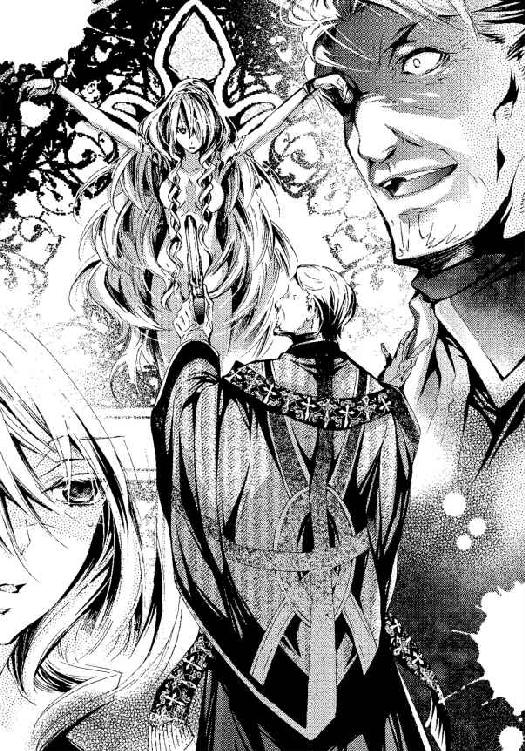
そして振り向くと彼は腕を伸ばし、銃を構えた。
「ふむ、この位置がちょうどいい。ミサで処女を撃つつもりだった。あなたが処女であれば、明日まで永らえたでしょうに。しかしそうではない。ここで今すぐ殺してしまいます。あなたが帰らなければ、お母さんはあなたを捜して病んだ体でここへ来るでしょう。明日は、聖母のようなテレーゼさんを、あなたの代わりに生贄にすることに決めました」
「神父様......！」
銃の上部の掛け金を引き、もう一度、神父は銃を構えた。
カチリ、という引き金の音とほぼ同時に銃声が聞こえた。
「ああっ」
ヴィオラは目を閉じた。
耳がじんじんするが、体に衝撃はない。
「うぉっ......くっ」
見下ろすと、神父がうずくまっていた。銃が床に転がっている。
神父の手から血が噴き出していた。
「ひっ」
オルフ神父が這うようにして左手で銃を拾おうとしたが、もう一発銃声が響いて、落ちていた銃が弾け飛んだ。神父の、残る左手も被弾していた。
神父の顔に恐怖の色が見えた。自分が撃つ時は面白いとさえ言い放ったのに。
彼は振り向いて、銃弾がどこからやって来たかを見定めようとした。
ヴィオラも教会内を見回す。
会衆席の長椅子が十列ずつ左右に並ぶ身廊には誰もいない。
ただ、中央通路に小さな木箱が一つ置かれているのが見えた。
カメラ・オブスクラだ。主祭壇に向けて据えられている。
神父はあれで、神の写し絵を撮ると言っていた。
しかし人の姿はない。
身廊とクロスして両翼にある小さい私設礼拝堂、二つの懺悔室──。
しんと静まり返った聖堂内が不気味だ。
「私はここだ」
突然男の声がした。まっすぐに届く明瞭なバリトン。
正面の大きな扉は閉ざされているが、両脇の戸口に、人の姿が見えた。
──アレックス様......！
左の入口にアレックス、右にコンラートが立っている。
コンラートが肩をほぐすような仕草をしながら中央の通路へと歩いた。
「兄さんお見事。ぼくはこの距離はちょっと無理だから至近距離からいかせてもらうよ」
彼はひょうひょうとした風情でそう言い、自分も銃を構えた。
「......コンラート、そいつを押さえてろ」
アレックスがそう言って、神父に銃を向けたまま彼の横を通過し、祭壇の方に歩いてきた。
ヴィオラは安堵したと同時に恥ずかしさがこみあげた。
聖なる場所で、肌をむき出しにされてしまっている自分に。
彼の表情に動揺が見える。
「ヴィオラ......！」
彼はウエストコートを脱ぎながら駆け寄る。
その時、教会の正面扉が開いた。
「ヴィオラ......どこなの？」
女の声だ。
アレックスが振り向いた。
細い体で、外套もまとっていない女が入って来る。
ゆるく結い上げた金髪が乱れていた。
モスグリーンの綿のドレスを着ただけの貧相な身なりだ。
ヴィオラが思わず叫んだ。
「お母さん......！」
テレーゼがこちらを見て息を呑んだ。
生贄のように張りつけにされた娘を見て、驚愕したのであろう。
「テオさんにここだと聞いたの......ヴィオラ、何があったの！」
テレーゼは弱々しい体で身廊を歩き、中央通路にあるカメラ・オブスクラにつまずいた。
身廊の前列の中央で、コンラートに羽交い絞めにされていたオルフ神父の目がきらりと光った。彼は突然体を反らし、コンラートの顎に頭突きを食らわせた。
「わっ、いて！」
そして、血塗れの両手に渾身の力を込めて、コンラートの銃をひったくる。
神父はそれを祭壇に向けて撃った。
テレーゼの悲痛な叫びが聖堂に響き渡った。
弾道がヴィオラ目がけてまっすぐ向かってくる。
時が止まったように、ヴィオラの目はそれを捉えた。
アレックスの青ざめた顔がよぎり、尻もちをついたコンラートの動転した顔が見える。
オルフ神父の狂喜した顔が怪奇像のようだった。
テレーゼの悲惨な表情が、ヴィオラの胸を痛めた。
ごめんなさい、お母さんに悲しい思いをさせて。
ごめんなさい。と何度も謝った。
その時、突然聖堂の中に光が満ち溢れた。
そして懺悔室の前に金髪の男が立っているのが見えた。
懸命に祈っているのは写し絵にあったあの人だ。
「......お父さん！」
ヴィオラは叫んだ。
彼はこちらを見た。青い瞳が輝く。
もう大丈夫だよ、というように彼は手を広げて微笑んだ。
私の祈りは通じたよ。
幸せになりなさい──。
一発の銃声──。
アレックスの耳に、聞き覚えのある音楽が流れてきた。
ワルツのリズム、弾かれる鉄片。
自動人形に埋め込まれたオルゴールの音だ。
アレックスは一瞬、全てを失ったように立ち尽くしていた。
目の前で大切な物が失われた絶望に、身動きさえできなかった。
オルフ神父が銃を投げ捨て、哄笑しながら後陣に上がってくる。
そして生贄に対面し、醜い顔を引き攣らせた。
装飾格子に磔になった乙女は力尽きていた。
がくりと垂れた頭から艶やかな金髪が白い胸に垂れている。
臍の上と脇腹に弾痕がある。火薬の匂いがした。
裂けた皮から金属片やコイルが見える。
ジー、ジー、とゼンマイの震える音が聞こえた。
神父は血走った目で、それを凝視している。
きゅるん、と音をたてて、銃創からワイヤーが弾けて飛び出した。
「わっ......」
オルフ神父は驚いて飛びすさった。
アレックスも目を疑ったが、一縷の希望を取り戻して辺りを見回した。
冷えた床に横たわる少女の姿が目に入った。
投げ出された手足に球体関節はない。
アレックスがうずくまる。
むき出しの肩に触れてみる。温かい。人肌の温もりだ。
彼は背中に腕を回してそれを抱き起こす。くたりと柔らかい体だ。
「ヴィオラ、ヴィオラ！」
アレックスは彼女の名を呼びながら、その頬を軽く叩いた。
金色のまつげがぴくりと震え、それから青ざめた瞼が開かれた。
澄んだ美しい青の虹彩が、焦点が定まらずに揺らぎ、やがて一点に絞られた。
「アレックス......様......」
彼女の口元が甘くほころぶ。アレックスは彼女の裸身に視線を走らせた。
血は出ていない。
「ヴィオラ、どこも撃たれていないのか？ どこか痛みは？」
「え？ いいえ......」
だが、彼女の言葉はあてにならない。撃たれた瞬間は、痛みを感じないというから。
アレックスは彼女の体を調べた。手首と足首に縄の痕があったが、傷は一つもなかった。
それを確かめると、彼は脱いだコートでそっとヴィオラの裸身を包んだ。
「アレックス......様？」
彼はヴィオラの肩に額を垂れた。
「無事でよかった──！」
アレックスはひどく憔悴していた。
地獄と天国を同時に見たような、激しい疲労感にしばらくは言葉も出なかった。
「どう......したんですか？」
アレックスの腕の中で、少女が身じろぎをした。
彼は顔を上げてヴィオラを見た。
そして震える手でヴィオラの髪をかき上げた。
驚いたようにこちらを見つめている少女の瞳が、生き生きと輝いている。その頬は淡い薔薇色に染まっていた。アレックスは彼女の頬を手のひらでなぞり、その体温を確かめる。
温かい、ただそれだけのことに、心が躍るのを抑えきれない。
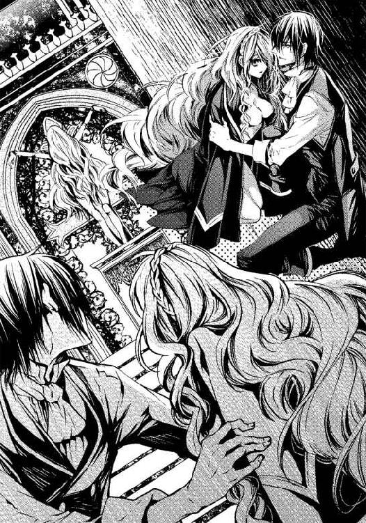
アレックスは顔を傾け、ヴィオラに口づけた。
最初は怯えるように唇をそっと合わせ、それから二度と離さないというように熱くむさぼる。
コート越しに、ヴィオラの鼓動が伝わってくる。
生きている。よく生きていてくれた、とアレックスはつぶやく。
「あの......わたしは......？」
彼女自身にも、なぜ床に倒れていたのかわからないようだ。
アレックスは、つい今まで彼女のいた場所を見た。
「入れ替わったのか......？」
祭壇の後ろ、装飾格子に縛りつけられているのは自動人形だ。
銃弾の衝撃で、内蔵されたオルゴールが鳴り出し、もの悲しいメロディを奏でている。
「な、なぜだ、──いつの間に？」
オルフ神父は蒼白な顔をして、うわごとのようにつぶやいた。
「ヴィオラ......！」
テレーゼはショックのあまり中央通路に座り込んでいたが、やがて起き上がるともつれる足で懸命に娘のもとへとたどり着いた。
「おかあさん、わたしはここよ」
「ああ......、ヴィオラ！ ......無事、なの......？」
「ええ......、お母さん」
アレックスは、ヴィオラをテレーゼに預けると、肩から斜め掛けしていたサッシュベルトを外し、神父を縛り上げた。
彼が両手から血を流していようと容赦ない。両手の平の中心を正確に射抜いたことを確認し、彼の右袖を乱暴にめくった。
神父が痛みに小さく呻いた。心は麻痺していても身は痛むというのか。
アレックスは、オルフ神父の腕に黒い刻印をみつけた。
漆黒の瞳が大きく開かれる。
──ようやく捕らえた！
その達成感と油断してはいけないという緊張感で、アレックスはじっとりと汗をかいていた。
目の前のザッカーリには、記憶にあった精悍さもなく、眼力もなくなっていた。
顔つきも変貌し、身のこなしも鈍くなっていた。
しかしこの殺人鬼はもっと厄介な物を持っている。
老いても衰えない物、見えない物。捕らえられない物。
その心臓を撃ち抜いたとしても消えない物。
悪魔の魂だ。
アレックスの脳裏に十五年前の光景が蘇る──。
「ぼうやたち、こっちだ！ ここに隠れなさい」
馬車から逃げ回っていた幼い兄弟に、大きな鞄を持った中年の男が手を差し伸べた。
金髪碧眼のその男が、傾いた木の扉を押し開き、教会に入ると、中には枯れ葉や瓦礫が散乱していた。西日を受けるとオレンジがかった乳白色になる雪花石膏の窓はひび割れて、オルガンも鍵盤が剥げ落ちている。そこは廃墟だ。
彼は朽ちた懺悔室に二人の子どもを押し込み、自分はその前に立った。
その直後、狂ったように笑いながら、ザッカーリが教会に駆け込んできた。
懺悔室の中で弟をしゃがませ、アレックスは立ったまま、ひびの入った戸板の隙間から、犯人を凝視していた。
──ぜったいに、その顔をみとどけて、忘れない──
中年の男が、祈りを唱え始めた。ザッカーリは彼に銃を向けた。
アレックスはザッカーリの腕の刺青を読み取った。
銃声が三回聞こえ、三発目はアレックスの耳元をかすめて懺悔室の壁に当たった。
どさり、と何かが崩れるような音がした。
コツ、コツ、......近づく足音。
次は自分たちの番だ。足元でコンラートが泣きじゃくっている。
懺悔室の隙間から、アレックスは悪魔の目が近づいてくるのを見つめていた。
灰色の小さな、しかし猛禽類のような鋭い目だ。
痩せた頬、細い鼻筋、口は布で隠されて見えない。
手が届くほどの位置まできて立ち止まり、その虚ろな視線がアレックスの目を捉えた。
ザッカーリの頬骨がかくんと動くのを見た。
悪魔は銃口を懺悔室の亀裂に押しあてた。
その時、突然、教会の外が喧騒に包まれた。
ザッカーリは首をねじり、舌打ちをすると、向きを変えて走り出した。
教会の扉が開き、青地に金刺繍のコートを着た武装した男たちがなだれ込んで来た。
憲兵がようやく到着したのだ。
ザッカーリは転がっていた鞄を掴んで、ひびの入った雪花石膏に突進した。乳白色の窓が割れて飛び散り、彼はそこへ身をくぐらせて逃げた。その手にある、口の開いた鞄から、女の人形がはみだしてバタバタと暴れているように見えた。
アレックスは懺悔室から飛び出して叫ぶ。
「憲兵さん！ あのまどから逃げました！」
数人の憲兵が割れた窓に向かった。
そしてアレックスは視線を窓から前方の床へと移して愕然とした。
金髪の男が倒れていた。
彼の足は、ぴく、ぴく、と痙攣している。
アレックスは彼に駆け寄り、うずくまった。
「おじさん、しっかりして！ おじさん！」
その顔は蒼白で、目は虚ろだった。
床に血溜りができて広がっていく。
ジャケットに二か所、穴が開いて、赤く染まっていた。
男は震える手をふところに入れ、何かを探るような仕草をした。
青ざめた唇はかすかに動いているが、ほとんど声にならない。
「おじさん、何？」
アレックスは懸命に聞き届けようとした。男は尚も胸元で手を動かしていた。
しかし、何も取り出せないまま、その手から力が抜けて、やがて動かなくなった。
「おじさん！ おじさん......！」
アレックスが呼びかけたが、男の青い目は宙を見つめたまま、もう瞬きもしなかった。
彼は最期に何を取り出そうとしていたのか。
アレックスはジャケットをめくり、内ポケットを見た。
何か紙のようなものが入っている。小さな指でそれを摘まんだ。
血に塗れた印画紙──彼の身元を知るための唯一の手がかり。
それは、余白に『ヴィクトリア』と書かれた、赤子を抱いた女の写し絵だった。
アレックスはごくりと唾を呑んだ。目の前にあの悪魔がいる。
いまやアレックスの一部とも思える愛しい娘にまで発砲したこの男を絶対に許せない。
すぐに射殺したい欲望にかられるが、彼は必死にこらえる。
──良心を持たない犯人に対しては死をもって報いたところで、犠牲者の心は永遠に救われません──。
ヴィオラの言った言葉を心に留めて、アレックスは自制していた。
では誰がどう裁くのか、それはアレックスにもわからない。
「コンラート、何をぼうっとしている！」
アレックスは茫然と尻もちをついたままのコンラートを一喝した。
「は......、あ、ごめん......兄さん。でもこれ......どういうこと？」
目の前で起こった不思議な現象に、コンラートも驚くしかないのだろう。
「お父さんが......」
ヴィオラが言った。
「お父さんが懺悔室の前に立ってた」
そして彼女はその場所を指さした。
「祈りが通じたよ、って笑ってたの」
テレーゼはそれを聞くと、青い瞳を潤ませた。
「神よ、娘をお守りくださり、ありがとうございます」
彼女の言葉に、オルフ神父はびくりと体を痙攣させた。
「神！ 神だと......？ そんなはずはない！ 神などここにはいない」
日頃、神の教えを説いていたはずのオルフ神父の口からこぼれた言葉に、テレーゼが驚いて振り返った。神父が娘を撃とうとしたことも、彼女にはまだよく理解できていないだろう。
オルフ神父は縛り上げられたまま、薄ら笑いを浮かべて言った。
「なぜか？ テレーゼさん、あなたのご主人を撃ち殺したのは私なんですよ」
ヴィオラが悲痛な顔をして彼を見た。
テレーゼも神父を凝視した。
母子が互いを支え合って寄り添い、残酷な結末を聞こうとしている。アレックスは警戒を解かない。神父の後頭部に銃口をつきつけ、そして証言に耳を傾ける。神父は続けた。
「そうですとも、撃ったのはこの私です。十五年前の明日。誘拐した二人の子どもをかばったりするから」
アレックスの黒い双眸とヴィオラの視線が交わった。
「通りすがりの男が、懺悔室にその二人の生贄を隠して、彼はその前に立ちはだかり、祈りを唱え始めたのですよ。銃弾から救いを希ってね！ 神がいたなら彼は助かったはずです。しかし彼は死にました」
アレックスは苦渋に満ちた顔で、懺悔室を見た。
新しく作り変えられてはいるものの、今も同じ位置にそれはある。
オルフ神父は歪んだ笑いを浮かべたまま、さらに語った。
「あの日子どもをさらったのは、最初は身代金目当てでしたが、突然気が変わったのです。汚れのない子どもを撃ってみたくなりました。逃げ惑うのであればなお面白い。そこに通りがかったクレーマン氏は、実に慈悲深い人間でした。彼は何の関係もない子どもに関わって、落命しました。最期まで立派な態度でした。誇りに思ってよろしいですよ」
テレーゼの表情が驚愕から、絶望、悲嘆へと変わっていき、その肩が震えていた。彼女が捜し続けていた夫はもうこの世にいない。
「彼は絶体絶命のその瞬間まで、いもしない神を信じていました。愚かですが、崇高でした。彼の祈りの最後に、私は本物の祈りを教えてやりましたよ。──死を思え──とね。祈る人間を撃ったあの気持ちは、二度と忘れられません」
アレックスは、ヴィオラの祈りの『メメント・モリ』を聞いた時にようやく気づいた。
捜し続けた犯人が、こんなに近くにいたのか、と驚愕した。
国外まで、犯人の足跡をたどったのに。
彼の血に染められた写し絵の母子は、目の前で抱き合うヴィオラとテレーゼだったのだ。
自ら殺した人間の妻子を手元に置いて、ザッカーリは何をしようとしていたのか。
神父は縛められてもなお、陶然と語り続けた。
「崇高なもの、無垢なもの、敬虔なもの──犠牲者は純粋であるほど、私の心は高揚しました。その後は、何人殺そうが、何人の女を凌辱しようが、あれほどの絶頂は味わえなかった。それで私は再びここで祈る人間を殺そうと思いつきました。別人になるために、歯を抜き、鼻骨を砕いて顔を変えました。最高の瞬間を迎えるために、何年もかかってマグダレナ教会を立派に立て直し、信仰心の篤い民を集めることに尽力しました。そして十五年経った同じ日に、無垢な乙女を撃ち殺すつもりでした」
ヴィオラが声を振り絞るように言った。
「わたしたちがその家族と......知っていて、黙っていたのですか？」
神父は小さな灰色の目をすがめると、引き攣った笑いを浮かべて言った。
「逆ですよ。探したのです、あなた方を。お父さんの荷物から、あなた方を探し、行方を追って見守ってきたのですよ。名前を偽っても、私の目は騙せません。ずっと監視していました。ロッシュを出て、ようやくこの町にあなたがたがやって来た時には、生贄が揃った悦びを禁じ得ませんでした」
ヴィオラの目に力強さが戻るのを、アレックスは見た。
怒りが彼女に力を与えたのかもしれない。
「明日、盛大なミサを開いて、その場で生贄の処女を殺し、クレーマンの写し絵を焼き捨て、多くの会衆も皆殺しにし、最高の記憶を胸に外国へ行くつもりでした。金はあるだけかき集めました。懺悔室で罪を悔い改めるという秘蹟、あれはいいものですね。小心な人間を脅して金を巻き上げるのに、随分と役立ちました」
オルフ神父がテレーゼの顔を睨めた。彼女は病みやつれ、娘の危機に取り乱して髪も衣服も乱れているが、ヴィオラに似た美しい顔立ちをしている。
「どうですか、テレーゼさん、これでもあなたは神を信じますか？」
テレーゼの頬は青白く、涙で濡れていた。
長年彼に助けられ、支えられていると思っていたであろう。
裏切られた苦しみはどんなに大きいだろう。
しかし、彼女は押し殺したような声でこう言った。
「夫は二人の子どもさんを助けてと祈っていたのですわ。そういう人なのです」
神父をまっすぐ見つめる彼女の顔には、失望も怒りも見えない。
「あの人は自分の命を乞う人間ではありません。ですから、祈りは聞き届けられて、夫は満足だったと思います。今も娘を救って、彼は幸福な魂ですわ」
彼女の言葉に、異様な興奮に酔いしれたようだったオルフ神父が真顔になった。
「幸福......だと......？」
「驚いた......、自動人形の彼女はあの人の娘だったのか」
茫然と話を聞いていたコンラートが言った。
アレックスが、弟を目で叱責した。
「ご、ごめん......、兄さん」
彼は銃を拾い、兄よりは緩慢だが滑らかな動きで薬包を取り出して弾丸を詰め直した。
「コンラート、今の自白を聞いたな？」とアレックスが言った。
「うん。十五年前の誘拐と通りすがりのクレーマン氏殺害をはっきりと自白したね」
アレックスは神父の前に立って彼を見下ろし、言った。
「おまえの本当の名はザッカーリだな」
オルフ神父が灰色の目を見開いてアレックスを凝視した。
「うるさい、おまえは誰だ」
神父の問いに、アレックスがむっとした。
「自分が招待した相手の顔も忘れたのか？ 明日のミサに」
「しょうがないんじゃない？ 兄さんはずっと外国にいて、顔はあまり知られていないし。もう純真な子どもじゃなくて汚れちゃってるしねえ」
おどけた口調でそう言うコンラートを、アレックスが再び軽く睨んだ。
「私は、祈る人間を撃つのが楽しいなど、理解できないが、屑のような悪魔を撃つのはやぶさかではない。悔悛の意を見せるまで生殺しにしてやる。手の次は両足に聖痕をつけてやろうか」
「指を一本ずつ順番にってのはどうかな。......あ、弾がもったいないか」
憎しみに熱くなるアレックスを冷まそうとするかのようにコンラートが口を挟む。
「コンラート、やめろ。私は真剣だ。マトリアを離れて、殺人鬼の上を行くために血を吐くような訓練をしてきた。十五年前、この腕があったら、誰も死なせずに済んだのにと、考えてもどうしようもないことを考え続けて眠れない夜を過ごした」
アレックスは怒りをこらえて冷静な物言いに努めた。
オルフ神父は教会の入り口を見た。
主祭壇から入口まで、教会の端から端までの距離を測るように。アレックスがあの位置から主祭壇の前のオルフの手の中心を正確に狙って撃ったことを理解しただろう。
「ここは聖域だ！ このような真似をして......、聖職者を傷つけては、教会が黙ってはおりませんぞ」
オルフ神父が口を歪めて言うと、アレックスが哄笑した。
「教会のお歴々、彼の言い分は通るのかな」
アレックスが声高にそう言うと、正面扉が開いた。
「呼んだかね、アレックス・フォン・メルヴィル殿？」
黒い僧服の数人の修道士と警備兵に伴われ、赤い法衣に司教冠という帽子を身に着けた、いかにも高位の聖職者がやって来た。
オルフ神父は彼らを見ると、芝居がかった歩き方で中央通路をよろよろと進み、アレックスとコンラートの間を通り抜けて法衣の男の足元にひれ伏した。
「司教様！ 私をお救い下さい、ご覧になりましたか！ 聖域を荒らす無法者です！ 彼らに撃たれました」
神父は血まみれの手を彼に見せ、アレックスとコンラートをあごで指した。
「ほう、手を撃たれたのかの」
司教が白い眉毛をそびやかして言った。
修道士たちは警戒を解かず、司教を守るように取り囲んでいる。
「傷を見てやりなさい」と司教が言うと、修道僧のひとりが、はい、と答えてオルフ神父を捕縛していたサッシュベルトを外し、彼の袖を少しめくった。彼は、一瞬腕を引こうとした。
「治療のためです、動かずに」
修道士がそう言って、オルフ神父の黒い僧服の袖を肘までまくり上げた。神父がびくりと手を引こうとしたが、他の修道士たちにきつく取り押さえられていて動けない。
神父の下腕に、黒墨で彫られたような模様が見えた。
memento mori
「司教様、ありました。ここに──死を表す言葉が！ この男です、間違いありません。この男はザッカーリです！」
修道士が叫び、司教の顔が険しくなった。
「memento mori......死を思え、とは、殺せという意味ではない。古の将軍が、絶頂にある自分を戒めるために使用人に絶えず言わせていたのが転じて、必ずやってくる死を見据えて、懸命に生きよ、という教えなのだが、どこで間違えたのやら」
オルフ神父は顔をひきつらせ、彼を取り押さえている修道僧らを力ずくで跳ね除けた。
「私は被害者です！ 撃たれたのですよ！」
「見苦しいぞ。ほかにも、そなたが高利で金を貸したり、懺悔で得た秘密をもとに金品を脅し取ったという報告がきておる」
オルフ神父は司教を凝視していたが、全てが終わったことを悟ったのか、突然唸り声を上げると、教会の扉を目指して走り出した。
アレックスが銃を構えたまま追おうとするのを、司教が手で制する。
主扉を開けて、神父は逃げようとし、彼の目の前に無数の銃を突きつけられて立ちすくむ。
扉の外には、数百人の兵士が教会を取り囲んでいたのだ。
紺の軍服と白いブリーチズ、白い懸章、帯革、マスケット銃を一糸乱れず構えている。
先頭にはマトリアの伯爵、カールマインツが立っていた。
彼も戦場に赴くような出で立ちだ。その後ろにラントンもいる。
居並ぶのは、伯爵お抱えの兵だ。
神父は数人の兵士によって教会の中へ連れ戻された。伯爵も一緒に入ってくる。
「父さん......？」
これは想定外だった。
アレックスは茫然と父を見たまましばらく立ち尽くしていた。
オルフ神父が再び捕縛されるのを横目に、カールマインツが靴音高く、アレックスに向かって歩いて来た。そして正面に向き合うと、彼は言った。
「勝手なことばかりしおって。教会に明日行けとは言ったが、こんなことは命じてない。ラントンが泣きついてきたぞ。殺人犯を捕えようとおまえがこそこそと動いていたのに気がつかないとでも思ったか？」
そう言うと、彼はアレックスの頬を一発、拳で殴った。
「......っつ」
アレックスは全く避けず、まともに父の拳骨を受け止めた。
「どうだ、痛みがあれば、生きた実感もあろう」
アレックスは舞踏会で、生きている実感がないとこぼした。父はそれを覚えていたのだろう。
「無謀なことをするな。身を犠牲にして救ってもらった命を無駄にするな」
それは、伯爵がぽろりと漏らした本音のようだ。
驚いたように彼らを見つめるヴィオラの背後から、緋色の法衣の司教がゆっくりと伯爵に近づいた。彼はカールマインツに一礼した。
「このたびは、十五年前の殺人犯逮捕にご協力、感謝しますぞ。アレックス殿が驚嘆すべき執念でもって解決に導いたことは、故人の何よりの追悼となるのではありますまいか」
司教はおごそかな雰囲気をまとって伯爵に言い、次にアレックスに言った。
「この数年、ザッカーリの消息を探して各国で情報を集めておられたな。教会側も、民心に押されたとはいえ、出自不明な男に司祭の位階を与えてしまったことについて、真剣に審議を重ね、監視を続けてきたのです。よもや恐ろしい殺人鬼とは思いもしなかったが、アレックス殿の助言によりその疑いが濃厚になったので、協力させていただいた。礼を言います。しかし......カールマインツ伯爵ならびにアレックス殿、聖堂内では暴力はご遠慮願いますぞ」
その後、兵士と修道士が教会内の捜査を始めた。
「そこの女性は？ オルフ神父と懇意だったのですか？ 彼の悪事に加担していたのでは？」
ヴィオラはそう問われても否定しなかった。
ついさきほどまで神父を尊敬し、感謝していたのだろうから無理もない。
彼は聖職者の仮面を被って、貧しい母子に日々の糧を分け与え、汚れなく生きろと言い続けてきたのだ。
「あの......わたしは......」
おずおずと口を開こうとしたヴィオラを、アレックスは庇うように言った。
「彼女はわたしの許嫁です。神父の身辺を探らせるため、囮になってもらっていたのです。被害者でこそあれ、彼に加担するなど、あり得ません」
そして彼は、ヴィオラの額にキスをした。
テレーゼが目を丸くして二人を見る。
アレックスは人目をはばからず、ヴィオラに寄り添ったまま言った。
「ここまで危険な目に遭わせるなんて、本当にすまなかった」
そこへコンラートが加勢する。
「彼女が神父に縛り上げられていたぶられるのを見て、飛び出そうとする兄さんを抑えておくのは大変だったよ。ギリギリまで神父に自白させてから、ってあれほど言ったのに」
アレックスに話を合わせようとしたらしいが、一言多かった。
「しかし、キスマークは見えないところまでにしておくのがいいよ。ザッカーリをひどく刺激しちまったようだからね」
ヴィオラは真っ赤になってうつむき、アレックスはコンラートを睨んだ。
司教の監視の下、修道士による捜査が続いている。
「これは何でしょう！」
突然、修道士の一人が小型の木箱のような物を持って司教のもとにやって来た。
「それはカメラ・オブスクラです」
と、ヴィオラが答えた。
「父が作った物だと思います。この箱の中に紙を入れて、明るい場所に置くと、写し絵ができるのです。そうよね、お母さん？」
隣にいるテレーゼにヴィオラが合槌を求めた。彼女は頷いた。
「なぜこんなものがそこにあるのじゃ？」
司教の問いかけに、ヴィオラが跪いて言った。
「オルフ神父が中央通路に置いて、神が降臨するのを撮ると言っていました」
そして、カメラ・オブスクラを手に取って、ここを開けるのです、と説明した。
「新しい紙を入れたばかりですし、今は暗いので何も写っていないと思います」
彼女はそう言って、掲げるようにカメラ・オブスクラを司教に差し出した。
司教は物珍しげに示された場所を開け、印画紙を取り出した。
「これは何だ？ 何か写っておるようだが」
司教が目を細めて、それを凝視しながら言った。
写し絵に見入る司教の後ろを、兵士に引っ立てられたオルフ神父が通る。
彼は立ち止まった。
早く歩け、と兵士に促されたが、彼は立ち尽くして、司教の手元を凝視していた。
何を見たのか、神父は震えだした。恐ろしい物でも見たように。
アレックスが彼の視線を追い、印画紙を見た。
ぼんやりとした、十字のような形の影が写っていた。
アレックスにはそれが何かわからなかったが、オルフ神父だけが理解したように、蒼白になり、がくりと膝を落とした。
カメラ・オブスクラはテレーゼがつまずいた衝撃で、懺悔室の方を向いていたのだ、とアレックスは思い当たった。オルフ神父はうずくまったまま、独り言のように言った。
「そうです。私が......その懺悔室の前でクレーマンを撃ちました。この写し絵のように手を広げて、祈っていたところをです」
居合わせた者、皆が驚いて彼を見た。彼はもう一度、はっきりと通る声で言った。
「私がやったのです」
何が彼を決意させたのか、オルフ神父、すなわちザッカーリはようやく罪を認めた。
全ての罪を告白し、贖います、と彼は約束した。
後ろ手を縄で縛られた神父が修道士と兵士に囲まれて教会を出て行く。
この後、教会裁判が行われ、ザッカーリは当然処刑されるだろう。
うつろな表情で引っ立てられて行くオルフ神父を、野次馬たちが見ている。神父をよく知る人は驚き、知らない者は罵声を浴びせる。
その時だった。
「神父様、わたくし、祈ってますからね」
町人たちの好奇と軽蔑の目に晒されて歩いて行く神父に、テレーゼが呼びかけていた。
弱々しい細い声だったが、彼の耳にははっきりと届いたようだった。
神父はおもむろに、テレーゼの方を向いた。
「あなたは、わたくしたち親子に償いをしてきたのです。あなたの意志がどうであれ、目的が何であれ、神は償いしかお許しにならなかったのです。娘の身に起きた奇跡は、あなたがこれ以上罪を犯さないように、神が守ってくださったと思いませんか？」
野次も静まり、テレーゼの言葉が夜空に滲みわたる。
灰色の小さな目が一回り大きく見開かれた。
「わたくし、あなたのために祈ってますからね。忘れてはだめですよ」
テレーゼが繰り返した。
オルフ神父の血走った目がきらりと光ったように見えた。
第六章
ザッカーリが逮捕された後、その告白により、教会の地下祭室に大量の火薬が見つかり、彼が、ミサに集まるであろう数千人を、教会ごと爆破するつもりだったことがわかった。彼にとっての盛大なミサは、悪魔に大量の生贄を差し出すことだったのだろう。
「あの翌日、大惨事になるところだったんですね......」
ヴィオラは、伯爵邸の客室の廊下で、アレックスからその報告を受けていた。
彼女はそれを知って震えた。自分が生贄になるだけでなく、参列者まで──。
「あなたはわかっていたのですか？ こうなることが」
アレックスの黒い瞳を見つめて、彼女は問いかけた。
「どうかな。だが子ども心に、彼を絶対に逃がしてはいけないと思った。臆病で神経質と思われても、それだけは、ずっと思っていた。やつの目に狂気を見たから」
他の人が事件を忘れても、彼はずっとあきらめなかったのだろう。それは孤独だっただろう。
「舞踏会できみと出会ったから、たどりつけた」
そう言って、彼はヴィオラを抱きしめた。
「だがそんなことは関係なく、出会えてよかったと思っている」
「きゃ、あの......っ、アレックス様......」
人の行き来の激しい場所で、抱きすくめられてヴィオラは慌てた。しかし、彼はおかまいなしに彼女を腕に閉じ込めて言った。
「それに、クレーマン氏の遺言を、実行しなくてはとずっと思っていた」
「お父さんの遺言？」
ヴィオラの知らない話だった。オルフ神父も言わなかったことだ。アレックスは父の最期に立ち会った人だったのだ、と改めて思う。
「言葉は聞き取れなかったが、胸のポケットを懸命に探って、頼む、と言いたかったのだと思う。遺された妻と娘を頼む、と──。だから、ずっと探していた」
遺品の鞄はザッカーリが持ち去ったため、クレーマンの身元がわからず、遺体は伯爵家の墓地の隣に埋葬し、カメラ・オブスクラの母子の写し絵だけを頼りに遺族を探していた、と彼は言った。
「やっと見つけたんだ──だから」
アレックスがようやく腕を緩めて、ヴィオラの両肩に手を置いた。真摯な瞳が彼女を見つめている。ヴィオラは鼓動が激しくなるのをこらえ、その続きを待った。
しかし、そこで扉が開き、人の気配がした。ヴィオラは慌てて、彼から離れた。
彼女とテレーゼの泊まっている客室から、医師が出てくるところだった。
テレーゼの診察が終わったのだ。
＊ ＊ ＊
テレーゼとヴィオラは、伯爵邸に身を寄せることになった。
母子は、誘拐事件の時の恩人の遺族として、下にも置かない丁重な扱いを受け、心苦しいほどだった。
客室の壁は黄金の地色に東洋趣味の花鳥画をあしらった風雅な内装、そして暖炉の前には、遠い異国から取り寄せた杯や壺、大皿の磁器が置かれている。
垂れ幕で覆われたベッドには隙間風も入らない。柔らかな羽布団は病弱な母にもやさしいだろう。贅沢なベッドの上で、身を寄せ合って、母子はいろいろなことを話した。
ヴィオラは人形になりすましたいきさつを母に説明した。
アレックスとの関係は言えなかった。
テレーゼも、ヴィオラの偽名について初めて語ってくれた。
「ヴィクトリアと全然違う名前をつけようとしたけれど、その時、あなたはもう片言で自分の名前を『ヴィー』と言うようになっていたの。だから、ヴィオラ、としたのよ。あなたを奪われたくなくて家を出てきたけど、こんなに苦労をさせてしまうとは思わなかった」
テレーゼは、いつの頃からか、夫の死を覚悟していたという。だからこそ、忘れ形見である娘と離れたくなかったのだと。
彼女はヴィオラにできる限りのしつけをし、教育をし、愛情を込めて育ててくれたのだ。
「でも、もう家賃の心配も、食べ物の心配もいらないわね、お母さん」
父の死を知り、父が善良な人であったことを知り、信頼していた人の恐ろしい正体を知った。全てのことを受け入れるには時間がかかりそうだったが、ヴィオラはふと現実に戻った。
我ながら情けないが、家賃と暮らしにかかるお金の問題がいつも重くのしかかっていたので、伯爵家の申し出は夢のようだったし、何よりテレーゼを医者に診てもらえることがありがたかった。
「丈夫になったら、故郷に帰りたい？ お母さん」
「そうね......、お父さんのことを報告したいとは思うわ。でも、ヴィオラはどうなの？ ここを離れてもいいの？」
テレーゼの穏やかな声がヴィオラに問いかけた。
「わたし？ どうして？」
「教会で、アレックスさんがあなたを許嫁と言っていたのは本当？」
ヴィオラは説明に困った。母にはもうわかっているかもしれない。
「......あれは、わたしがオルフ神父の共犯者と誤解されないように、機転を利かせてああ言ってくれたのよ」
「彼の本心はわからないということなのね？ それで、あなたは？」
テレーゼの青い瞳がじっと見つめている。
ヴィオラの脳裏を、彼と過ごした時間がめくるめき、胸が苦しくなった。
涙がはらはらとこぼれ落ちる。
相手は伯爵の息子、自分は荒涼館と呼ばれる廃屋のような家に間借りしている身だ。
身分が違いすぎて、彼と結ばれるはずなどない。
自分の想いなどどんなに強くてもどうにもならない。
──私の傍にいてくれないか。朝も昼も夜も、ずっと一緒に......。
彼の言葉が偽りだとは思わないが、一時の熱情に過ぎないかもしれない。
事件が解決したことで、彼の人生は開かれる。
伯爵の勧めた縁談を受けて、立派な結婚をして、前向きに生きられるのだ。
だから、身分不相応な望みを抱いてなどいない。ただ、思い出だけは大切にしたい。
生まれて初めて、心を焦がすような恋をした、それだけは間違いない。
体をつないだことは、過ちと咎められるかもしれないが、ヴィオラの大切な宝物なのだ。
「ごめんなさい......お母さん。でも後悔はしていないの」
「アレックスさんが好きなのね？」
テレーゼの胸に顔を埋めてヴィオラは泣いた。
母の手が彼女の髪を撫でる。
──泣くのは今だけ。お母さんの方がもっと辛いんだもの。
ヴィオラは自ら結論を出した。
「お母さんが元気になったら、バルーゼルに帰りましょう。顔も覚えていないけど、お祖父様たちに会いたいの」
アレックスの姿の見えない遠い所に行って、思い出を糧に生きていくのだ。
「そうね、会いたいわねえ」
テレーゼは小さな子どもにするように娘の背を撫でて、ささやくように言った。
その後の半月は、あっという間に過ぎ去った。
伯爵夫妻交えての食事やお茶会に時折誘われ、その時にはアレックスも同席していたが、二人きりで会うことはなく、彼の存在がどんどん遠くなっていった。
お茶会はシッティングルームで開かれる。
それは図書室を兼ねた団らんの間で、床には赤とモスグリーンの幾何学模様の絨毯が敷いてあり、奥正面の壁面は全て書庫になっている。ほかにはチェンバロがあり、壁際のキャビネットにはヴァイオリンやリュートも置かれていた。
それと、テーブルと椅子が何組か配置されていて、邸に住む人々は、ここで思い思いに本を読んだり書き物をしたりできる。
その日は伯爵夫妻とアレックス、コンラート、それに彼らの従妹にあたるマリアという令嬢がお茶会に参加していた。
「まあまあ、こんなに揃うなんて珍しいこと」
伯爵夫人がアレックスを見て何度も繰り返した。
「兄さんが寄りつかなかっただけで、ぼくは参加してましたよ」
とコンラートが言った。
彼の従妹のマリアという令嬢はブルーのドレスを、ヴィオラはオリーブグリーンの花模様のシフォンのドレスを着てその上から深紅のショールを羽織っていた。
「ヴィクトリアさん、チェンバロはお弾きになるのかしら？」
マリアに突然話しかけられ、ヴィオラは驚いたが、彼女が邪気もなく、好意的なのがわかって、すぐに緊張はほぐれた。
「はい......少しは」
ここではヴィオラは本当の名前である『ヴィクトリア』と呼ばれている。母も名を偽っていたのは事実だが、綴りを変えていただけで、読みは同じ『テレーゼ』のままだった。
「よろしかったら何かお弾きになって」
彼女は快活で、気性がまっすぐで気持ちのいい少女だが、男たちにとっては頭痛の種だったようだ。
「マリアは、誰彼かまわず弾け、歌えとねだるんだよ、悪い癖だ。断っていいからね」
と、コンラートが助け舟を出すように言った。
「だって、ようやくお友達になれそうな人に会えたんですもの。もうここのお従兄様たちったら、こういうことにからっきし興味がないんですから」
マリアが不満顔で言った。
アレックスは、光沢のあるベージュの地紋入りのウエストコートとブリーチズ、編み上げブーツを身につけ、長い足を組んで少し離れたソファに座っていた。ワイングラスを傾けているものの、鋭い視線をこちらに据えたままだ。
ヴィオラが困惑しているのではないかと考えているのかもしれない。このまま黙っていると、空気を悪くしてしまう、とヴィオラは思った。
「難しいのは弾けないんですよ。お笑いにならないでくださいね」
彼女はそう言ってチェンバロの前に座った。
チェンバロの蓋板と側板には、深緑の地塗りの上に、小鳥と果樹のモチーフがテンペラ画の手法で描かれていた。古いが美しい楽器だ。
積まれた楽譜の中から、何とか習ったことのある曲を見つけ出した。田舎の風景を表現した小曲である。風車や、葦、小川が目に浮かぶような、ヴィオラの気に入っていた曲だ。
ロッシュで母が住み込みの家庭教師をしていた時、そこの令嬢と一緒にヴィオラも習ったから、一通りの楽器をたしなみ程度には弾くことができた。
ただ、ヴィオラはそれからもう何年も楽器を触っていない。
──ちゃんと指、動くかしら......？
彼女は、心許ない思いをしながら、鍵盤に指を置いた。
最初の一音をゆっくりと、慎重に打鍵する。次に左手のアルペジオ。
そのチェンバロは雅やかな音色を出す良い楽器だった。
譜面は読めたが、長年弾いていなかったので、指はどうしても鈍っている。
哀愁を帯びた主旋律と、輝くような装飾音のはずが、貧相な弱々しい音しか出ない。
本当はもっときらびやかで、滑らかな曲なのに、恥ずかしい。
ヴィオラは顔を赤らめながら弾き続けていた。
マリアも今後は、もう弾けなんて言わないだろう。もどかしい指が情けなく、ヴィオラはうなだれてしまった。
その時、突然、チェンバロの音に混じって艶やかな音色が流れてきた。
ヴィオラの弾く旋律をなぞるような弦楽の調べだ。
──えっ？
ヴィオラは驚いて顔を上げた。いつの間にか、彼女の斜め後ろに誰かが立ってヴァイオリンを奏でている。ヴィオラの弾いているのは合奏曲ではない。つまり、ヴァイオリンは即興で彼女に合わせて弾いているのだろう。
誰が弾いているのかを確かめる余裕は彼女にはなかったが、演奏を続けろと促しているかのようだった。
止まってしまいそうだった指を、ヴィオラは懸命に動かした。
誰だろう、流れてくるヴァイオリンは、磨かれたやさしい音だ。
チェンバロのアルペジオにのって、ヴァイオリンが力強く主旋律を浮かび上がらせたかと思うと、次の小節ではヴィオラの旋律に巻きつくように併走する。
──とても上手な人......！
それなのに、つたないチェンバロを見劣りさせることなく、むしろ引き立てて調和している。
心許ないヴィオラを、励ますような演奏だ。
次第に彼女は昔の調子を取り戻して、指の動きも滑らかになってきた。
彼女が粒の揃った強い音を紡ぎ始めると、水がせせらぎ、葦の葉が風に揺れる風景が見えるようになった。ヴァイオリンの旋律も昂揚していく。
ヴィオラの戸惑いや、自信のなさは消えていき、楽しげな音色に変わった。
羽が生えたかのように、ヴィオラの指が軽やかに踊る。風車がカタカタと回り、水しぶきが小さな虹を作り、魚が水面で跳ねている。
蝶が舞うようなヴァイオリンの旋律で、一面に美しい花が咲き乱れる。
戯れるように二つの楽器は共鳴し、互いに引き立て合い、喜びに満ちた音色を響かせた。
チェンバロのトリルが輝き、ヴァイオリンのビブラートが包みこむ。
美しい余韻を残して、演奏が終わった。
「すばらしい！」
コンラートが立ち上がって叫んだ。
マリアも驚喜して、手を叩いた。伯爵夫妻も驚いた顔で見ていた。
そして、いつの間に増えたのか、演奏を聞きつけて、シッティングルームが狭く感じるほどたくさんの邸の人々が詰めかけていたらしく、彼らからも喝采が起こる。
ヴィオラは頬を赤らめて、立ち上がり、振り向いた。
ヴァイオリンを奏でていたのは誰だろうと、青い瞳を巡らした。その先には──顎からヴァイオリンを外して下ろし、伏せていた切れ長の眼を上げて、彼がこちらを見た。
一枚の名画のように美しい立ち姿、今は悲しみはなく、優しさと強さを秘めた黒い眼差し。
「アレックス様......？」
ヴィオラは呆然と彼を見つめた。
アレックスはヴァイオリンと弓をチェンバロの上に置き、ヴィオラの手を取った。
そして聴衆に向けて、おどけたポーズで礼をした。
彼が演奏していたなんて──。
シッティングルームはまだざわざわしていたが、アレックスは手を上げて彼らを制した後、ヴィオラをテーブルへ導き、座らせた。
「びっくりしたわ。アレックスお従兄様、いつの間にヴァイオリンを習得なさったの？」
マリアが興奮した様子で言った。
「外遊先でやむを得ず。こういうものにはからっきし興味がないんだが、ヴィオラが生贄にされているのを見かねて、表に出ざるを得なかった」
アレックスが皮肉めいた口調でそう言うと、マリアが心外だというように反論した。
「まあ、わたしが虐めたみたいに言わないでください。ヴィクトリアさんがこんなに弾けるってことがわかったじゃないですか」
そこへ、コンラートもやってきて、冷やかし半分に言った。
「はあぁ、よくもまあ楽器だけでこれだけイチャイチャできるもんだねえ」
「そう思うなら、少しは気を利かせたらどうなんだ」
アレックスが言い返すと、ヴィオラは恥ずかしくなってうつむいた。
マリアが顔を輝かせて言った。
「ヴィクトリアさん、すてきでしたよ。こんなに弾ける方が加わったら、とても楽しみだわ！ 今度はわたしと連弾しましょうね」
ヴィオラは夢を見ているような気持ちで、はい、と返事をした。
頭の中は、アレックスのヴァイオリンの音色でいっぱいだった。
ロッシュのお金持ちの屋敷での暮らしが、ここで役立つことも多かった。テレーゼが住み込みの家庭教師をしたのは、ヴィオラに行儀見習いをさせる目的もあったかもしれない。
マリアはたびたびこの部屋にヴィオラを呼び出して、演奏や歌や朗読をしないかと言うので、ヴィオラは母から教わった六行詩をいくつか組み合わせてやり過ごした。優美な修辞が使われていて、暗唱するだけで場が持つので、母から習っておいてよかった。
ただ気になるのは、お茶会に付き合わされるアレックスがいつも不機嫌そうだったことだ。
自分が不作法なことをしてしまったのではないかと、ヴィオラは不安になった。
こんなふうに日々を過ごしながら、ヴィオラはテレーゼの快復を待っていた。
幸い、テレーゼは医者の処方した薬がよく効き、その薬と滋養のある食事と休息によって快方に向かっていた。
そして、多めに投宿しながらのゆっくりな旅であればバルーゼルへ行くのも可能、という許可が出た。バルーゼルが受け入れてくれさえすれば、伯爵邸を去る日も近い。
ある日、テレーゼが言った。
「お祖父様、お祖母様と連絡がとれたわ。孫のあなたに早く会いたいって」
「本当？ お元気なの？」
いずれその日が来るとわかっていたが、どきんとした。もうすぐここを去る。
ヴィオラはこれまでほとんど彼らについて聞いたことがなかったので、どういう人となりかも知らないが、家族が他にいるというのはほんの少し、心強い。
「どうでしょうね。長いこと、会っていないので......」
テレーゼは遠くを見るように、少しぼんやりしていた。
彼女が郷里を出て消息も知らせていなかったということは、実家との関係もよくなかったのではないだろうか。田舎の口さがない人々に、よそに女ができて捨てられた、などと噂されたと聞いている。勘当されたのかもしれない。
「でも、お父さんが善良な人だって証明されたのだから、堂々と帰れるんでしょう？」
「もちろんよ」
テレーゼがそう答えた。
ヴィオラは、会ったことのない祖父母を想像した。
辺境地、バルーゼルの田舎に住む彼らの暮らしは素朴でやはり貧しいのだろう。
朝日とともに目覚めて土地を耕し、家畜の世話をし、日の入りとともに眠る。
時はゆっくりと動き、激しい愛も辛い片想いもない。
母とそこで、牧歌的な暮らしをするのだ。
アレックスのことはみんな忘れて──。
マトリアを去る前に、大学通りをもう一度見ておこう──。
もう二度と見られないかもしれないからと、ヴィオラは一人で出かけた。
半月来ない間に、同じ景色なのに違って見えるのは、自分が変わってしまったからだろうか。
以前はテントのような布を接いだ珍妙な衣装にマスケラをつけていたのに、今は、青いダマスク織りの花柄ローブの上から、白いテンの毛皮のついたチェリーレッドのマントを羽織っている。青く染めた山羊皮に銀の刺繍を施した靴で石畳を歩く。
職人街をカフェに向かって歩いて行くと、上機嫌の学生たちが口笛を吹く。
彼らはヴィオラがパントマイムをしていたことなど知らず、見慣れない女がやって来たと思っているだろう。
いつも彼女が大道芸をしていた空間には、知らない男がナイフをお手玉に手品をやっていた。
半月で、少しずつ街も変わっているのだ。
白漆喰の壁に歯車の形をデザインした鉄の看板が見える。これは昔から全く変わっていない。店は開いており、子どもがちらほら軒下で遊んでいる。
「テオさん、こんにちは」
人形師の店先で、ヴィオラはいつものように呼びかける。
「おお、ヴィオラじゃないか......！ たいそう立派になったなあ」
作業の途中だったらしく、テオが木槌を持ったまま出てきた。相変わらずの無精髭だが、前より血色がよく、活き活きとして見える。
「テオさん、ここを出なくてよくなったんですね？」
女房に有り金全て持って行かれて憔悴した姿が、彼を見た最後だったので、ヴィオラはずっと気になっていたのだ。
「ああ、オルフ神父が捕まって、借金もなくなった。おまえさんの自動人形のお代も、結局戻ってこなかったがね」
それでは、また材料の調達にも苦労するだろう、とヴィオラは人ごとながら心配した。
「しかし聖マグダレナ教会に新しい司祭が来ることになって、あの自動人形を聖像として置くことになったらしいよ。何か奇跡が起こったらしいが、そんなこと、あるもんだろうか？」
ヴィオラが神父に撃たれたはずの、あの瞬間のことだとわかった。
この頃は、アレックスと二人で話す機会はなく、人形のその後についても聞かされていなかった。もう壊れてしまった自動人形は、アレックスにとっても無用となったのだと思うと少し寂しい。
自分の身代わりがあの人の傍にいられたら、と少しだけ考えていたから。
オルフ神父の自供から、人形の身代わり事件が教会裁判で語られて、単なる奇跡ではなく、宗教的な『奇蹟』として認定されたのかもしれない。
教会はたくましくも、それを巡礼の呼び水にするつもりだろう。
「じゃあ、テオさん、それと同じ、小さいお人形を作ったらいいんじゃないかしら？」
ヴィオラがこう言うと、テオは明るい顔をして言った。
「実は、それについて教会の許可が出て、これからは途切れずに仕事がありそうなんだよ」
「まあ、よかった。......あ、長話しをしてはいけませんね」
習慣で、ドーラに怒鳴られるのではないかと心配になり、工房の奥を覗いてみた。すると、彼女はいつものようにその場所にいたが、太った体を物陰に隠すようにして顔をそむけ、こちらには出て来ない。
オルフ神父の言葉を思い出した。
──隠し持っていた現金を没収して、あの女は花街に売り飛ばしてやりました。大した金額にもなりませんがかまやしません。
あっ、と叫びそうになって、ヴィオラは口を手で押さえた。
神父逮捕に伴い、ギニョン地区で彼の手下として強盗や恐喝を行っていたごろつきも逮捕され、悪質な賭博場、娼館は閉館を命じられた。ヘルという汚名を返上すべく、伯爵とアレックスはあの界隈を浄化するそうだ。
テオはドーラを許して花街から連れ戻したのだ、きっと。
今は怒鳴り散らすこともなく、子どもが軒先で遊ぼうと追い散らすこともないのだろう。
テオは、何も言わず、おとなしくなった女房を一瞥して、苦笑した。
「かまやしないよ。母さんは元気かい」
「ええ......、もう長旅にも耐えられるようになったから、お母さんの実家に帰るんです」
「そうなのかい！ そりゃあ......寂しくなるが、喜ぶべきことだろうな」
テオに人形のふりを頼まれたあの日から、運命が変わった。
愛を知り、愛を失うことも知ったが、それがなければ、今も自分は学生街でパントマイムをし、そして弱りゆく母を、何もできずに悲しく見つめていただろう。いや、盛大なミサに参列して生贄として射殺されていたはずだ。
テオが女房に怯えることなく充実した職人暮らしを送っていることが嬉しい。
「本当に長い間、お世話になりました。──さようなら、テオさん」
ヴィオラは工房を辞して、裏通りに入り、以前住んでいた家を通り過ぎた。今は空き家になっている。懐かしくもの悲しい気分に浸りながら、複雑な裏の細道を通り抜けて、学寮街に出た。伯爵邸まで歩いて一時間ほどの距離だが、遅くなってしまうので、駅馬車に乗るつもりだ。
馬車宿は回廊式ベランダ付の三階建てだ。赤い煉瓦屋根には屋根裏部屋らしき窓と煙突がある。質素な入り口の奥が中庭で、馬車が待機しているのが見える。
学生が乗っているのはいつも見ていたが、自分が乗るのは初めてである。
「伯爵邸方面へ行きたいのですけど......乗り方がわからなくて」
緊張しながらヴィオラが馭者に声をかけると、背後で男の声がした。
「偶然だな、私もだ」
彼女が振り向くと、一頭立て二輪馬車がヴィオラの前で止まっていた。
「アレックス様......？」
舞踏会で初めて見たとき、黒曜石のような鋭い目と思ったが、今はその奥に熱情を秘めているとわかる。風に揺れる黒髪、道行く女の目を奪う美貌──何もかもが愛しくて、切ない。
「私も帰るところだから、一緒に」
何気ない言葉をかけてもらえるだけで、心は軽やかに飛んでいく。
ヴィオラは胸の高鳴りを抑えながら、馬車に乗った。
＊ ＊ ＊
ヴィオラはアレックスに連れられて別邸にやってきた。
伯爵邸には後で送ると言って、彼は寝室に招き入れた。
赤い布張りの長椅子に人形として座っていたことを思い出した。
「懐かしい」
ヴィオラはそう言って、人形のように座ってみた。それはアレックスと二人で過ごした切なく甘い思い出だ。
「三日しかいなかったのに」
アレックスはそう言って、長椅子の背もたれに手をかけて、ヴィオラの前に体を屈めた。伯爵邸では少し離れたところからこっそり見て胸をときめかせていたアレックスの顔が間近にやってきて、息が止まりそうになった。
「あ、あのっ......、あの場所で偶然会うなんて、不思議ですね」
「偶然？ ──本当にそんなふうに思っているのか？」
アレックスが呆れた顔をした。
「きみが学生と密会するのかと思って見張っていたのに」
「えっ？ 違いますよ、わたしはただ、家がどうなったかと思って」
「ああ、全部見ていた」
全部見ていた、と聞いてヴィオラは驚いた。全部とは、いったいいつからなのだろうか。声を掛けられたのは、最後の馬車宿だったのに。
「どうしてそんな......？」
「教会で騒ぎのあった日も、きみは私の言うことを無視してひとりで勝手に出かけた。そして、どんな危険な目に遭ったか忘れたのか？」
「あ......そうでした、ごめんなさい。でも、今日行ったのは自分の住んでいた場所ですよ。危険なことなんてありませんから」
するとアレックスの目がきりりとつり上がった。
「危険だ。危険極まりない。たとえば、学生に口笛を吹かれただろう。多くの男がきみの気を惹こうとしていた」
それのどこが危ないのか、ヴィオラには理解できない。
「きみは無防備に街路を歩き、その美しさで男どもを引き寄せ、幾多の視線に汚されたのだ！ こんな危険なことがあるか」
アレックスの剣幕に圧されながらも、ヴィオラは失笑してしまった。
「そんな！ 見慣れない顔だから見ていただけですよ。......でも、その場にいらしたのなら、声をかけてくれれば──」
「ヴィオラ」
アレックスが遮るようにして名前を呼んだ。
「やっと二人きりになれたのに、そんな話しかできないのか？」
彼に責められて、では何を言えばいいのかと、途方に暮れた。
「ずっと二人になりたかったのに、父の邸では邪魔ばかり入ってできなかった。部屋ではきみのお母さんが、そして一歩部屋を出るとマリアがべったりだ。お母さんのことは仕方ない、多少は譲歩しよう、しかし──きみはどうなんだ。私がいなくてもまるで平気なようだな」
「そ、そんなことないです！」
伯爵邸で見るアレックスは、遠い人のように感じて寂しかったのに。
「でもあちらでは、アレックス様もお忙しそうですし。遠くから見ているだけで、わたしは十分に──」
アレックスの目に失望の色が浮かんで、ヴィオラは慌てた。何がいけなかったのだろう。
「十分、だって？ 私は全然足りない。こうして、触れて、間近で言葉を交わして、口づけをして、抱きしめてもまだ足りない。もっと、果てしなくきみが欲しい。それなのに、見ているだけで十分とは、きみは薄情な女だな」
「そんなことないです、いつもあなたのことを考えています」
薄情とはいくらなんでもひどい、とヴィオラは思った。彼のことが愛しすぎるのに、叶うはずもなく、近くにいるのが辛いほどなのに。
「嘘だ」
「本当です」
「では、きみに自由な時間ができて真っ先に会いに行ったのがなぜ人形師なんだ？ 私のために時間を割くべきだろう、きみは私をばかにしているのか？」
「いえっ、そんな......、わたしは人形がどうなったかを知りたかったのです」
「人形？」
それは彼の予想もしない答えだったようだ。
「はい。アレックス様が大金を払って買った物なのに、手元にないのは、あなたを騙したことになって心苦しいですし、......もうあなたのお傍に置いていただけないのかと──」
ヴィオラの代わりに、とは言えなかった。
アレックスは理解に苦しんでいる様子で、ヴィオラを不思議そうに見つめた。
「人形は......花嫁を押しつける父に対して、当てつけのつもりで買ったんだが、もうその役割を終えた」
役割を終えた、という言葉が、ヴィオラに向けられているようで、どきりとした。
「事実、本物の人形は工房で見たきりで、私と何の関わりもなかったじゃないか。執着をもつ理由がない。きみの身代わりになったことは驚嘆すべきで、粗末にできるものではないが、──あれを教会に置くのは不満か？」
「いいえ......、アレックス様がいいなら、それでいいのです」
「私は、きみに傍にいてほしいんだ。きみしか必要ない」
彼はそう言って、ヴィオラの小さな顔を捉えて唇を重ねた。
アレックスを諦めようとしているのに、求められると抗えない。彼が遠いと感じていたこの半月、ヴィオラの心は乾いた砂のようだった。それが、たちまち潤んであふれていく。
「......ん......ん」
乱暴な口づけだった。
彼は舌をこじ入れてヴィオラの小さな歯をなぞり、口蓋を舐め、唾液をすすりとる。長い口づけの後、彼は言った。
「虐めるとすぐに涙ぐむのだな。柔らかな赤い唇、そして花の香りのする息までが愛おしい」
再び唇が重ねられる。ヴィオラはアレックスの胸を懸命に押し返したが、強い力で捉えられて逃げることもできない。
バルーゼルに帰るのに。
もうすぐお別れなのに......！
「ん......ぅうん」
「か弱い力で抵抗しても逆効果だ。より征服したくなる」
彼はそう言って、荒々しくヴィオラを押し倒した。
「や、ア......、アレックス......様」
のけぞる白いのどに唇を押しあて、しっとりと柔らかい肌をむさぼり、ドレスの上から丸い胸を掴んでもみほぐす。ヴィオラの華奢な背中が跳ねる。
彼は衿空きから見えるふくらみに歯をあてて舌を這わせる。衿の輪郭に沿って彼の舌がヴィオラの肌を滑る。
「あ、あ......、お許しください......ああっ」
「なぜ抵抗する？ 私に抱かれるのが嫌なのか」
彼に瞳を覗かれて、問い詰められる。
今抱かれてしまうと、別れが辛くなるからだと言ったらどうするだろう。彼に知られずにそっと旅立ちたかったのに。
打ち明けるかどうかためらっていると、アレックスが思い当たったように言った。
「もしや、ザッカーリに触れられたことが忘れられないのか？」
見知らぬ人の名前のように思えたが、それはオルフ神父のことだ。祭壇の後ろの装飾格子に縛り付けられ、一糸まとわぬ姿にされた、あの恐ろしい時間が蘇る。
「......いやっ......」
ヴィオラは思わず顔を覆って叫んだ。
思い出したくもない屈辱と恐怖。
アレックスが一瞬沈黙した。ヴィオラの怯え方を見て何を思ったのか。
「ヴィオラ！ ......あの時何をされた？ ずっと気になっていた。やつはきみに触れたのか？ そして、まさか──？」
アレックスの懸念に気づいて、ヴィオラは顔から手を下ろした。
「いいえ......あの、神父様は素手ではわたしに触れていません」
純潔を失ったから汚れたとでもいうように、彼は触れなかったのだ。
「と、いうと？」
「むしろ忌避するかのように、極力自分の手が肌に触れないように、ナイフや銃の先を使ってドレスを切り裂いたのです」
あの金属のひやりとした感覚と、皮膚を切り裂かれるのではないか、という恐怖は、今もはっきりと覚えている。
「......そして？」
「わたしの体に残る痕を見つけて、純潔であれば明日まで永らえたのに、今この場で殺す、と言って銃を向けたのです」
その時アレックスが駆けつけて、神父の手を撃ち抜いたのだ。
「私は間に合ったのか......？」
「はい」
彼は脱力したように頭を垂れた。
「ずっと、気が気じゃなかった」
彼がそんなことを心配してくれていたとは知らなかった。
「ではその忌まわしい記憶を消してやろう」
彼は何を決意したのか、ヴィオラを抱き上げてベッドへと運んだ。
「あの......アレックス様？」
「ザッカーリから受けた恐怖を塗り替えていく。武器ではなく、私の体で」
彼の美しい眼差しに見下ろされ、既に触れられているような気がした。
「やつはどこに触れた？」
「はじめに、蠟燭の芯切り鋏で、衿もとを開きました」
すると彼は、ヴィオラの鎖骨に唇をあてた。柔らかく温かい。
慈しむように鎖骨のラインを唇でなぞる。
「そして、次は？」
「次は......足もとにあった自動人形を銃で撃ち、その銃の中から取りだした細い棒をわたしの衿もとに引っかけて、ドレスを縦に引き裂きました」
するとアレックスは青いドレスの前立てのリボンを丁寧に指で外した。
そしてローブと胸着を脱がせた。
「それから、施物袋からナイフを出して、シュミーズの紐を切りました」
アレックスはヴィオラの言う通りに、しかし自らの指先でシュミーズを剥ぎ取る。
温かい指に触れられるだけで、恐ろしい思い出が薄らぎ、心が甘く震える。
「柔らかくて可愛い乳房だ」
ヴィオラの胸の小さな尖りが既に勃っている。彼はそれを口にふくんだ。
「ああッ、......ん」
快感が走り抜け、ヴィオラは背中をよじらせた。
ペチコートもドロワーズもずり下ろされ、レースのストッキングももどかしいほど丁寧に剥ぎ取られて、身を隠すものは何もなくなった。
「そして......？ 次は」
アレックスに問われて、ヴィオラは言葉を探した。
「銃の先で足の間をなぞって、ここに......あのう」
アレックスが眉をひそめてヴィオラの顔を見つめる。
ヴィオラは勇気を振りしぼって言った。
「あのう、──男の物をここに迎え入れたのですね、銃弾のようにあなたの中に撃ち放たれたのですね、と言いました」
そして、彼はヴィオラから離れると、銃を持ち上げ、撃とうとしたのだ。
「わかった......それで全てなのだな？」
ヴィオラは頷いた。
「すべて忘れさせてやる」
彼はヴィオラの乳房を両手で嬲り、臍へと唇を落とした。彼女の下腹がびくりと震えた。
臍を舌で舐め回され、そのくすぐったさと乳首を弄られる快感とに彼女はもがく。
「あッ、......ぁん、......」
喘ぎ声が潤んできた。
ヴィオラの腰がもぞもぞと小さくうねり始めた。
アレックスは彼女の足の間に顔を埋める。
「ぁっ......」
彼女は反射的に膝を締めようとしたが、アレックスが太腿を掴んで開いた。
「赤子の肌のように薄い皮膚、......きみのここは柔らかくて美しい」
アレックスはその花弁全体をほおばり、それから亀裂にそって舌を上下に動かした。
「ぁ、......あぁ......ッ」
ヴィオラの背が弓状に反った。むずむずとした快感に臍下が震える。
柔らかく濡れた舌が、絵筆のようにヴィオラの入り口をやさしく刷いていく。
「あっ、......は......ぁん」
アレックスは、果実を味わうように、襞の浅い部分をなぞり、時折舌を硬くとがらせて深みをえぐった。びく、びくと彼女の体がせわしくなく跳ねた。
上端の小さな真珠を丹念に舌先で愛撫され、意識が飛びそうになる。ヴィオラは後ろ髪を羽根枕にこすりつけてあがきながら、それに堪えた。
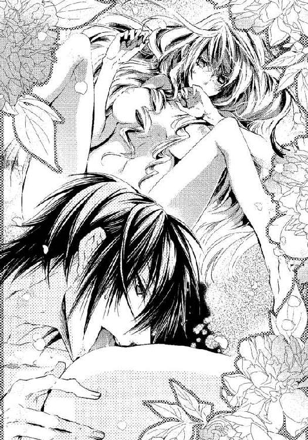
「あああ......ん」
ヴィオラの唇から歓喜の悲鳴がこぼれる。
薄いピンクの花びらから白い花蜜があふれてきた。
花びらの奥の蜜を舐めるように、彼は舌を秘襞にこじ入れた。甘く淫らな雫をすすりあげる。とろとろと愛液がこぼれて後孔の方まで流れていく。
アレックスはヴィオラの足を持ち上げて彼女の肩の方へ膝をつけ、丸い臀部を剥きだしにした。そして顔を寄せる。
「......っ！ あっ、や......、いや、そこはだめっ」
ヴィオラが恥ずかしがって身をよじるが、アレックスは容赦しない。
花弁から菊門へと舌を滑らせ、双丘の割れ目も味わう。
「やあっ、お願い......変になってしまいます」
菊門を舌でなぞられ、膣襞がひくひくと収縮して淫らな蜜をあふれさせる。
「いくら舐めとってもきりがないな」
手早く衣を脱ぎ捨て、硬く節くれ立った肉棒をホウズから解放した。朝露のような先走りを宿したそれを、ヴィオラの柔肉に押しあてる。あぁ、と彼女が喘いだ。
ヴィオラの細い腰を掴んで逃がさないように固定し、花びらに己を埋めていく。たっぷりと流した花蜜にぬるんで先端がずぶりと入った。
「あ......っ」
たんねんにほぐされたのに、その大きさはヴィオラには楽ではなく、その瞬間、彼女は苦悶するように眉を寄せる。
「う......ん、あ、あ......！」
内臓が押し出されそうな圧迫感に、ヴィオラは悲鳴を上げる。
「私の形を忘れてしまったか？」
鬱血して濃い色に染まった肉襞が苦しげにアレックスの陰茎を呑み込んでいく。
「あ、......あ、苦し......の」
ずぶずぶと濡れた音を響かせて、彼が挿入ってくる。
細い体、男に慣れていない膣洞に、アレックスが侵入する。
子宮口に彼が到達した。
そこを肉棒の先でざらりと撫でられ、ヴィオラの背筋を閃光が走った。
「あぁぁっ！」
深い結合を全うし、アレックスはふっと息を吐く。
ヴィオラの顔を挟むように手をつき、彼女に口づける。
──アレックス様が、わたしの中いっぱいに......！
苦しいほどの圧迫感なのに、うっとりと彼を感じている。
ああ、アレックス様が好き......！
人形になって、彼の傍にずっといたかった。
涙が目尻から耳に流れ落ちる。アレックスがそれを唇で拭う。
彼が名残惜しげに腰を引くと、ぬちゃりと音がする。
あぁ、とヴィオラがよがり声をあげた。ぎりぎりで止める。
膣孔がぎゅっと収縮する。アレックスは再び力を込めた。
「あうっ......ふぁ」
ゆっくりと、抽送され、ヴィオラの体がのたうつ。
彼女はシーツをきつく握りしめ、金の髪を振り乱して喘いだ。
「きみは私のものだ......！ 誰にも触れさせない」
さらに引いてまた挿入する。花蜜が泡立ち接合部から溢れる。
彼がヴィオラの唇をむさぼり、彼の指先が乳房を嬲る。
次第に勢いを増して彼は自身を抜き差しし、肉襞を擦りあげる。
「あっ、もうだめ。......あ、あぁぁ──！」
彼女は悲鳴をあげて、体を痙攣させた。その瞬間、膣口も激しく震えてアレックス自身を締めつける。早く精を吐いてとでもねだるように、蜜襞がからみついてしまう。
彼は一瞬硬直した。肉棒がどくん、と激しく脈打ち、びゅくびゅくと熱情を噴き出した。もっと奥へ、というように彼の灼熱はヴィオラの膣洞を何度も突き上げた。
互いの体液をこね合わせ、混じり合わせるかのように。
ヴィオラの絶頂の痙攣がおさまると、彼は陰茎を引き抜いた。
精液と愛液が混ざって、とろとろとあふれ出す。
ヴィオラは心地よい浮遊感に浸っていた。
永遠にこのまま抱かれていたらいいのに。
でも、時は残酷に流れてしまう。
窓の外が陰ってきたことに気づき、ヴィオラははっとした。
──戻らなくちゃ......。
「何を考えてる？」
彼女の心を見透かしたように、アレックスが言った。
「あの......わたし、もう行かないと」
「なぜだ」
「母が心配なのです」
「そんな心配は不要だ。住まいも食も衣も、薬も医者もつけてある、完璧に。私のことだけを考えろと言ったはずだ」
その黒い瞳には、小さな怒りの色が見えて、ヴィオラは驚いた。
男でもなく、他人でもない、母親にまで嫉妬するなんて。
「まったく......！ ここか、まだへその緒が取れていないのは」
アレックスは真顔でそう言い、ヴィオラの腹に顔を埋めた。
「きゃっ」
そして彼はヴィオラのへそを貪るように舐め始めた。
「ひゃっ、......ぁん、ア、......アレックス......様......やめて」
彼は母子の見えない絆にさえ嫉妬して、取り除こうとしているらしい。
「娘をもらう代わりに、それ以外の物は何でも渡すつもりだから。間借りが気づまりなら、彼女の家も建てて使用人もつける。何の心配もするな、一刻も早く乳離れしろ」
「そんな......」
これまで困難な暮らしを共に耐えてきた、たった一人の家族なのだから、それは難しい。
素直に頷かないヴィオラだが、さすがにそこはアレックスが譲った。
「ならば、せめて私といる時は、私のことだけ想うんだ。......他の何が頭に浮かんでも、全て追い払え」
言われなくても彼のことで頭がいっぱいなのに、伝わっていないらしい。
「いったいどうすれば......いいのですか？」
彼を満足させる方法がわからない。
「まず、私に口づけろ」
自分から......！
ヴィオラは戸惑った。
しかし、バルーゼルに発つと決めた今、こんなふうに抱かれるのは最後かもしれないと思うと、彼を想う気持ちを知ってほしいと思った。
彼女は、人魚のように膝を揃えて下肢を横に流し、両手で体を支えてアレックスに向き直った。片肘をついて上半身を起こしている彼の上に、華奢な裸身が覆いかぶさった。
「ヴィオラ？ ......っ」
本当に実行するとは思わなかったのか、アレックスが一瞬驚いたように口をつぐんだ。
初めて彼女から、しっとりと柔らかく、愛おしげに口づけした。
小さな唇で、アレックスの唇をついばみ、おずおずと舌を入れた。
「ふ、......ん......」
アレックスのように上手くはできなかった。小さな声が漏れてしまうばかりで、彼の口の奥まで舌が届かない。
しかし懸命に彼の口蓋を舐めているうちに、彼の舌が迎えるように彼女の舌を捉えた。うねるようにそれが巻きつき、ヴィオラの舌を吸い上げる。
ヴィオラは勇気を出して、彼の背後に腕を回した。
黒髪に指を差し入れ、首筋と後頭部をしっかりと捉えた。
アレックスは驚いてヴィオラを凝視していたが、やがて目を閉じた。
──アレックス様......愛しています。
想いを込めて、ヴィオラは熱い口づけをし、それから彼の頬にも瞼にも小鳥のようなキスを贈った。彼の肩や上腕に唇をあてて、力を入れて吸い、彼がつけたようにヴィオラの徴を彼に刻んだ。
──好き。大好き......！
伝わっているかしら？
どうか伝わりますように。
ヴィオラが彼の胸から腹へと口づけの痕を残していくと、彼の肉棒がむくむくと起き上がってくるのが見えた。
ヴィオラは両手でそれを包み、先端にキスをした。
「......っ」
アレックスの陰茎がぴくりと動いた。
「ヴィオラ、何を......？」
「アレックス様がしてくれたように......わたしもしたいの」
彼女は薔薇の花びらのような舌で、アレックスの先端を撫で、筋張った陰茎に舌を這わせながら、細い指で丁寧にもみしだいた。
それから、それを口に頬張った。くびれた部分を舌で弄る。ヴィオラの小さな口の中で、それはさらに大きく膨れ上がった。
「ん......ぐ......、んん、ぅふ」
のどが塞がって、彼の半分も口に入らない。
唾液が口の中にたまって唇から零れてしまう。
うまくできなくて悲しくなってしまい、ヴィオラは上目づかいに彼を見上げた。
アレックスは眉を寄せて、苦しげな顔をしている。不機嫌なようにも見える。
──どうしたら、気持ちがよくなるの？
彼が舌と指で、ヴィオラを達かせたように、どうしたらできるのだろう。
「ま、待て......、もうやめろ！」
アレックスは突然、ヴィオラの肩を掴んで、彼の肉棒から彼女を引き剥がした。
びくん、びくん、と動いているが、まだ彼は達していないようだった。
「ごめんなさい......下手でごめんなさい！ アレックス様......怒らないで」
「お、怒ってなどいない。むしろそんなことを上手くやってのけるようでは不安になる！ しかし、悪くはなかった。つたないが、......こっちが我慢できなくなりそうだった」
そして、彼はヴィオラの脇に手を入れて引き寄せ、自分の膝に向かい合わせに座らせた。
「私の上に乗って、自ら、これを呑みこんでみろ」
「え、......こう、ですか？」
ヴィオラは従順に、彼に示されるままに腰を浮かし、アレックスの肩に掴まってそっと腰を落としていった。
そそり立つ陰茎が、ヴィオラの蜜壺に当たった。
「あ、......ふ......っ」
初めて迎える角度に驚いて、びくん、とヴィオラの体が浮いた。
「そうだ、ゆっくり沈めていけばいい」
「はい......」
ずくり、と硬い肉棒が突き刺さって、肉襞が押し広げられる。おそるおそる腰を沈めているのに、大きな抵抗に息が止まりそうになる。
「うっ、ん、......あッ、──アレックス様が、お腹に入ってきます」
「もっと、深く。まだ、まだだ」
慣れない角度に、ヴィオラがこわごわ動いているうちに、アレックスが業を煮やしたのか、突然突き上げてきた。
「ひゃ......ああん！」
ずぶずぶと一気に納められ、ヴィオラが背を反りかえらせて悲鳴を上げた。
「よし、全部呑みこんだな。自分で動いてみるんだ」
内襞がいつもと違う角度で抉られて、甘い疼痛を引き起こしている。
ヴィオラが下腹を丸めるようにして動くと、アレックスの先端に子宮口がズリッと擦られ、目のくらむような快感に彼女の体が跳ねた。
「あぁぁっ、......すごい、......です」
「どうすればもっと感じるか、自分で探すんだ」
アレックスに促されて、ヴィオラは腰をくねらせた。
蜜壺を肉棒の付け根に押しつけて、腰を前後に揺らす。膣奥が深く抉られ、淫核が彼の灼熱に擦れて、むずがゆいような快感が生まれ、たちまち達しそうになった。
それを戒めるようにアレックスが突き上げた。
「ひっ、......ああ、んッ」
アレックスに唇を塞がれた。よがり声を呑み込み、互いの舌を絡め合い、下肢も絡ませて二つの裸身が激しく接合する。
「んん、むぅ......んっ、......んふぅ！」
疾走する騎馬のように、ヴィオラの肉体が激しく上下し、金色の髪が絹の糸束のようにきらきらとしなう。なよやかな白い背中がずくん、と震え、ヴィオラは絶頂に達した。
熱い膣孔の奥に白い粘液が噴き出し、浴びせられるのを感じながら、ヴィオラはがくがくと痙攣した。
汗と荒い呼気と淫らな匂いに包まれて、二人は愛を確かめた。
全てが鎮まった時、ヴィオラはアレックスの膝の上でぐったりと果てていた。
たくましい胸に抱きしめられ、金の髪を撫でられると、悲しいほど愛しくなって、その胸にヴィオラは頬を押しあてた。
アレックスにこうして抱かれるほど、彼の気持ちはわからなくなり、ただ、自分が彼を愛していることだけがはっきりと思い知らされる。
──アレックス様はどうなの？
もしかしたら、望みを持ってもいいの？
『私はきみに傍にいてほしいんだ、きみしか必要ない』
それが彼の気持ちなら、傍にいてもいいの？
身分違いでも乗り越えられるほどの愛を、彼が持っていてくれると？
「ヴィオラ」
彼は気怠そうな声で言った。
「この名を呼ぶのももう終わりにしよう」
その意味を推し量ろうと、ヴィオラが目を開けた時、部屋の外で騒々しい音がした。
わああ、ごめんなさい、と言うアリサの声が聞こえた。
そしてメイド頭だろうか、別の女の叱る声も。
『まあ！ 何てこと！ それはマリアお嬢様にいただいた貴重な茶葉ですよ！ アレックス様のご結婚のために、マリアお嬢様があちらのお館にいらっしゃって──』
そして、ラントンだろう、老人の咳払いが聞こえ、彼女らが静まった。
ヴィオラの心が凍ってしまった気がした。
何か言おうとしていたアレックスが、気まずい顔をして舌打ちをした。
「間が悪いな。......つまり──」
「あの、......、わたし、失礼します。本当に、遅くなると母さんが心配するので」
その先を聞くのが怖かった。
彼の言おうとしたことは、扉の外から聞こえてしまった。
──アレックス様のご結婚のために、マリアお嬢様があちらのお館に......。
その後は、どのようにして伯爵邸に戻ったのか、記憶にないほど心が打ちひしがれてしまっていた。
＊ ＊ ＊
数日後。
アレックスと最後に過ごした日以来、ヴィオラは絶望と隣り合わせに生きていた。
母には心配をかけたくなかったので、彼女の前では明るく振る舞った。
「ねえ、いつお祖母様に会えるの？ 早くバルーゼルに行きたいわ」
ヴィオラは逃げ出したい気持ちをすり替えて、笑顔を作って過ごしたが、その日は、テレーゼも一緒に伯爵夫妻に正餐に招かれていた。
アレックスやマリアと顔を合わせなくてはならない。
残酷だ。
ヴィオラのドレスは白地に金糸の薔薇模様のオーガンジーを幾重にも重ねて裾を後ろに引くデザインで、優美なシルエットだ。
結い上げた髪にパールの髪飾りをつけ、レースの長い手袋をつけて、装いだけは華やかに、しかし暗い気持ちで侍女が呼びに来るのを待っていた。
正餐が特別なものなのか、今朝から邸全体が賑やかだ。
伯爵邸の表玄関も騒々しい。
何台もの荷馬車を引き連れた旅行用馬車が到着したらしい。
それぞれの馬は赤と金の装飾馬衣を掛けられ、馬車の幌には金のターセルがあしらわれた豪華なものだ。
客室の窓からそれを眺めて、ヴィオラは、邸で何か大きな催し物があるのだと思った。
「お母さん、すごい馬車」
ヴィオラが驚いて叫ぶと、テレーゼも窓辺に歩いてきた。
「まあ、本当に立派な馬車ね」
「どんなお客様がいらっしゃるのかしら。わたしたちは場違いじゃない？」
ヴィオラがつぶやいた。
場違いでないはずがない。それを理由に欠席できたらどんなに楽かと思う。
テレーゼの顔がふわりと華やいだ。
「お嫁入りの支度じゃないかしら。金色の房がたくさんついてるもの」
言われてみれば、そうかもしれない。
「アレックスさんのお嫁さんになる人の持参金よ、きっと」
テレーゼの言葉に、ヴィオラの心が深くえぐられた。
「......、アレックス様の......！」
「だって、ここにお嫁さんが来るとしたら、お相手は、アレックスさんかコンラートさんのどちらかでしょう」
──やっぱり本当だったんだ......。
彼はマリアと結婚するのだ。
でも、もっと先だと思っていた。
その場に立ち会いたくなかった──。
「聞いてないの？ アレックスさんから何も？」
テレーゼが訝しげにヴィオラを見ている。
「そんなこと、知る前にバルーゼルに帰りたかった......」
愛し合った日のことを糧に生きて行こうと思っていた。
「まあ......不実な人だったのね、アレックスさんは」
テレーゼの横顔が厳しい顔つきになった。
「でも時間だから、行かないと。伯爵夫妻が待っていらっしゃるわ」
「......無理。誰にも会いたくない、もうここを出たい」
「逃げるの？」
母は残酷なことを言う。
「よくないわ。バルーゼルへ帰るなら、ちゃんとお暇のご挨拶をするものよ。そんなに悲しいのに、何も言わずに姿を消すつもりなの？ ちゃんと気持ちを伝えなくていいの？」
母はヴィオラの気持ちを知っていたのだ。アレックスへの想いをあきらめて、彼の前から去ろうとしていたことを。そしてきっと、マリアのことも。
「あきらめるなら、ちゃんと失恋しなさい。けじめをつけないと」
「お母さん、そんな......」
「はっきりと相手の気持ちを知らないと、わたくしのように十五年もさまよってしまうのよ。いつまでも想い続けて、不安でたまらなくて──病んでしまうほどに」
ヴィオラは驚いて、涙いっぱいの目で母を見つめた。
「悲しい結果だったけど、わたくしは、聞いてよかったと思っているの。やっと、次にすべきことを考えられるようになったわ」
何も言い返せなかった。
アレックスを最初からあきらめて逃げようとしていたから。
「あなたも、ちゃんと終わらせないと、新しい恋も見つけられないわよ」
テレーゼが噛んで含めるように言った。
アレックスへの恋を失って、新しい恋が見つかるなんてとても思えない。
でも、打ち明ける勇気がないくせにいつまでも想い続けているのは、潔くない。
──十五年も捜していたお父さんがもういないとわかって、お母さんは何を次に見つけたのかしら......？
涙するヴィオラの背をなでながら、テレーゼは言った。
「ご挨拶、ちゃんとできるわね？」
はい、とヴィオラは頷いた。
「テレーゼ様、ヴィクトリア様、お館様がお待ちです」
侍女がやって来た。客室を出ると、ヴィオラの足がすくんだ。
廊下にアレックスが立っていた。
シルバーグレーのウエストコート、地紋のある白いクラヴァット、白のブリーチズに青いサッシュベルトの正装だ。賓客を迎えるのだろう。
彼はまばゆそうな顔でヴィオラを見つめた。そして微笑んで、彼女に手を伸ばした。
ちゃんとしなくちゃ、とヴィオラは自分を励ました。
「あの......、アレックス様。ご結婚、おめでとうございます」
勇気を振りしぼって言った。最後の方は声が震えてしまった。
伸ばしかけたアレックスの手が止まる。
向こうからやって来たコンラートも呆然と立ち止まっている。
「え？」
アレックスとコンラートが同時に言った。
きちんとお祝いを言ったはずなのに、取り乱していることがわかったのかもしれない。
「それでは、先に参りますね」
ヴィオラはそう言うと、アレックスの前を通り過ぎた。
「待て」
乱暴に腕を掴まれた。
「きゃっ」
「今何て言った？」
アレックスがヴィオラを引き戻して、至近距離で尋ねた。熱情的な黒い瞳が、戸惑いを浮かべてヴィオラを見つめていた。
「ですから......ご結婚、おめでとうございますと」
彼はごくりと唾をのみこんで言った。
「私と誰の結婚を祝っているんだ？」
ヴィオラの目にまた涙が湧き上がってきた。残酷なことを訊く人だ。でもそれだけは言わせないでほしい。彼女への嫉妬で醜い言葉が出てきてしまいそうだから。
ヴィオラは懸命に声の震えを抑えて言った。
「存じません」
しん、とあたりが静まりかえる。
アレックスは苦悶するように目を閉じると、ヴィオラの腕を引いて廊下を歩き出した。
「しばらく彼女をお借りします」
彼はそう言うと、ぐいぐいとヴィオラを引っ張って、階段を上った。ヴィオラのドレスの裾がもつれて転びそうになると、ひょいと横抱きにして、上り続けた。
最上階の礼拝堂に着いた。
「神父」
伯爵家の私的礼拝堂だ。アレックスは城付きの司祭を呼んだ。
白い祭服をまとった中年の司祭が歩いてくる。
「今すぐ式を挙げたいが、証人が必要か？」
「お二方いらっしゃれば大丈夫です」
司祭はあとから追いついたコンラートと侍女を見て言った。
「ヴィオラ、いや、ヴィクトリア・フォルスト。私が嫌いなら、ここで言ってくれていい。だが、なぜきみの知らない女と私は結婚しなければいけないのかな？」
「え......？」
「きみは私を好きじゃないのか？ 私に貞潔を誓うと言ったのは嘘か？ 体を許したのはそういうことじゃないのか？」
「えっ。や、ア、アレックス様！」
司祭の前で暴露されて、ヴィオラは狼狽した。
「取り急ぎ、用意をして参りましょう。......最近どうも耳が遠くていけない」
彼は聞こえないふりをしてくれたようだ。
アレックスは立ち去る司祭を一瞥して、尚もヴィオラを責め立てた。
「それとも、私を本気にさせておいて、こんなこっぴどく振って楽しいか？」
「本、気......？」
「朝も昼も夜も一緒に、と言ったはずだ。傍にいてほしい、と何度も言った」
ヴィオラはこぼれそうな大きな瞳でアレックスを見た。
「でも、──わたしの名を呼ぶのはもう終わりにしようって......」
一瞬、何のことかという顔をしたアレックスだが、すぐに理解したらしい。
「きみの、とは言ってない。ヴィオラ、という名だ」
「えっ？」
「その名に愛着はあるが、いつまでも偽りの名で呼ぶわけにもいかないから」
ヴィオラはようやく誤解の原因に気がついた。
「兄さん、ちゃんとプロポーズしてなかったのか」
コンラートが呆れたように言った。
「舞踏会で、彼女を花嫁に選んだと言ったし、その後も、何度も愛を告白したつもりだったが、彼女は本気にしなかった。先日もう一度言おうとしたら絶妙の間の悪さで邪魔が入った。今日こそ、皆の前で言おうと思っていたのに、知らない誰かとの結婚を祝われた」
「あの......ごめんなさい......。わたし、勘違いを──」
では、あの豪華な馬車は何だったのか。
赤地に金の模様の馬衣をつけた馬は？
「お母さんが、アレックス様のお嫁さんのお支度だって......言ったから」
ヴィオラには、何が起こっているのか理解できない。
そこへ正装した紳士淑女が聖堂内へ入ってきた。
「ヴィクトリア！ あなたがヴィクトリアだね？」
見覚えのない老人がヴィオラに向かって両手を広げた。その隣にいる老婦人が涙で目を潤ませて言った。
「ヴィクトリア、私がお祖母さんですよ。まあ、まあ、こんなに大きくなって！」
「お祖母様？」
「そうじゃ、孫娘が結婚するかもしれないというから、バルーゼルから婚礼道具を運んで来たのじゃ。足りなければもっと送らせるから遠慮無く言いなさい」
アレックスがそっとヴィオラを腕から下ろして、老夫婦に一礼した。
「遠路ようこそおいでくださいました、バルーゼル辺境伯殿」
「辺境伯......！」
田舎で牧歌的な暮らしをしている老夫婦ではなかったのか。
身なりも、持参した荷物も馬車から見ても彼らは裕福だが、辺境伯の爵位を持っているなら不思議ではない。老紳士が言った。
「テレーゼが連絡を寄越したので、すぐに祝いの品を用意して駆けつけたのじゃ。娘はクレーマンを捜しに行ったきり、消息を絶ってしまっていたからな」
母は実家に帰りにくい状況なのだと思っていたが、どういうことだろう。
「クレーマンさんの行方がわからなくなって、不憫に思った私たちが、ヴィクトリアを引き取ってテレーゼに再婚するように勧めたからですね。あの時は私たちもやり過ぎたと思っているわ」と老婦人は目頭を拭った。
テレーゼが目を伏せる。
「引き離されたくなくて飛び出したのに、ヴィクトリアに苦労をさせてしまいましたので、せめて祝福をいただきたかったのです。長い間、心配させてしまって、すみませんでした」
テレーゼが老夫婦に頭を下げた。それからヴィオラに向き直った。
「わたくしは、気持ちをちゃんと伝えなさいと言ったのですよ。あなたは、自分から諦めてしまっていたから、お仕置きをしてあげました。あの日、教会で二人を見ていて、相思相愛だとすぐにわかりました。愛する人と結ばれることを躊躇してはいけないのよ、ヴィクトリア」
教会で──。
ヴィオラが銃弾を受けたか、というあの時のアレックスの態度は、彼にとって彼女がいかに大切な存在かをテレーゼに印象づけたらしいが、ヴィオラ自身はぼうっとしていて、よくわからなかったのだ。
「でも......伯爵様方は、お許しくださるのかしら」
ヴィオラは貴族の生活に慣れていない。品性もないかもしれない。
すると、マリアがすっと近づいて小声で言った。
「アレックスお従兄様が人間の女性を愛するようになったって、叔父様も叔母様もとてもお喜びで、気が変わらないうちに、とおっしゃっているの」
それを聞いたコンラートが噴き出した。
「ぼくの心配した通りじゃないか。変態の噂が立つぞって」
マリアも苦笑しながら、話を続けた。
「叔父様は特に、別邸で偶然あなたとお話しなさってから、とても好感をもたれたそうで、ずっと嬉しそうにしていらしたの。......ただ、こう言っては失礼ですけど、この社会での生活に慣れないとお気の毒だから、お茶会であなたにさり気なくお作法を教えてと言われていたのです。でも私が教える必要はまるでありませんでしたよ」
ヴィオラは初めてそれを知った。
──では、アレックス様のご結婚のためにマリア様がいらっしゃった、というのは......。
家柄の違いでヴィオラが戸惑わないように相談役として来ていたということだったのだ。
「全然さりげなくなかった、わざとらしかった」とアレックスが憮然として言った。
「アレックスお従兄様ってば、わたしを仇のように睨むんですもの。ヴィクトリアさんを虐めようとしていたんじゃないのに。でも、お従兄様の珍しいヴァイオリンの演奏まで聞けて、それはそれで、とても面白かったですけどね」
マリアはその光景を思い出したのか、くすりと笑った。それから、ヴィオラに向き直って話しを続けた。
「シッティングルームで何度かお茶や食事をしましたでしょう。知識をひけらかすことなく、訊かれたことにはしっかりとお答えになるし、音楽を静かに楽しんだり、望まれれば詩も朗読なさって、何も文句のつけようがありません、と叔母様方に報告しましたわ」
マリアの暖かい言葉に、ヴィオラは自分が恥ずかしくなった。勝手に勘違いをして、マリアと顔を合わせるのも辛いと思っていたなんて。
なりゆきを見守っていた伯爵夫人が言った。
「お祖父様方がお揃いになったところで婚約式をしようと思っていましたのよ」
「もうここで式を挙げちゃったらいいんじゃない？」とコンラートが提案した。
ごほん、と咳払いをして、アレックスは進み出た。
彼は、ヴィオラの両肩に手をやって言った。
「周りの人間にはいろいろと腹が立つが、私はきみを愛しているし、二人は祝福されている。きみはどうなんだ？ 結婚しよう、ヴィクトリア」
彼の言葉に、ヴィオラはようやく気がついた。
今日の彼女のドレスは、アレックスとの婚約式のために用意された物だったのだと。
微かに不安をにじませる黒い眼差しを見つめて、ヴィオラは答えた。
「......はい」
わっと歓声が上がった。
アレックスはヴィオラに口づける。
アリサが、『アレックスさま、キスは誓いのあとですよ』と言って周囲を笑わせた。
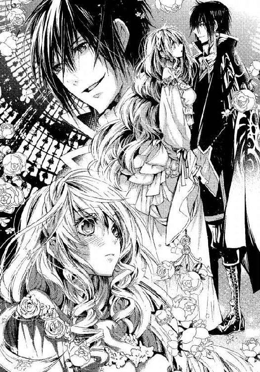
侍女が慌てて、ドレスとお揃いのヴェールを持ってきた。ヴィオラの頭にふわりと被せる。
司祭が、式次第がめちゃめちゃですぞ、と苦情を言いながらも、祭壇の前に立った。
そして、司祭はアレックスとヴィオラに『いかなる時も愛することを誓いますか』と問い、二人が肯定するのを聞き届け、祝福した。
「おい、鐘だ、鐘を鳴らせ！」
コンラートが大声を張り上げて、少し遅れて祝福の鐘が鳴り出した。
アレックスに抱きしめられて、ヴィオラは夢ではないかと何度も思った。
彼が微笑んでいる。甘く美しい頬笑みだ。
花びらが舞い、祝いの言葉が飛び交う。
アレックスがヴィオラにダンスを申し込むポーズを取る。
彼の差し出した手に、ヴィオラが手をのせた。
二人はワルツを踊り出す。人形としてではなく、愛し合う恋人のダンスを。
伯爵夫妻も、テレーゼも、祖父母も、コンラートもマリアも......皆、楽しげだ。
祝福の鐘が、甘いハーモニーを奏でている。
残響の中で、ヴィオラは父の声を聞いたような気がした。
『祈りが届いたよ。幸せになりなさい──』
ステンドグラスから射しこむ虹色の光が涙でぼやけた。
ありがとう、お父さん、とヴィオラは心の中で呟いた。
あとがき
初めまして、如月（きさらぎ）と申します。
お手に取っていただき、ありがとうございます。
ゴシック風なほの暗い雰囲気を舞台に、少しオカルト風味も添えて、熱愛ロマンスストーリーをお贈りしましたが、いかがでしたでしょうか。
以前から人形プレイを書いてみたくて、ご覧のとおりのストーリーとなりましたが、人形なりきりのままで初Ｈにもっていこうとしたら、「喘ぎ声どうするの？」ということに気づきました。無言の初夜って悲しすぎるというか、それある意味ホラーな？
最近、娼婦について調べていて、あるＤＶＤを見ていたら、人形プレイをする娼婦がいて、需要あったんだなあと。もう、アレックス様ってば変態（笑）！ 他にもさまざまなエロ・ヴァリエーションをご用意しましたので、お楽しみいただけると嬉しいです。
そのアレックスですが、最後の方の音楽のシーンは、担当さんの言葉がヒントというか、改稿相談時の無茶振り？によって生まれました。彼のかっこいい場面が一つ増えて、ありがたいご提案でした。このシーンを足したりいろいろで、改稿で三十ページ近く増えて十八行構成になっております。
このシーンのＢＧＭは、プーランクの「葦」でした。曲自体はバロック時代の物なので、あくまでもＢＧＭですが、音楽がお好きな方は、よろしかったらこれにヴァイオリンを即興でつけた感じで、二人が楽器でイチャイチャするところを思い浮かべてくださいませ。
あとがきは苦手なのですが、四ページもあるということで、他のキャラクターの隠れ設定について語っていきますね。
◆アリサ：そそっかしくて、いろいろ壊してしまうので三日で伯爵家を追い出されてしまいました。たまたま外遊から一時帰国していたアレックスが、彼女を別邸に引き取りました。よく考えたらここから熱愛生まれてもいいんじゃね？っていう（笑）。伯爵家の客室には東洋から輸入した陶器がありますから、彼女、一枚ぐらい割ったんじゃないかと思います。
◆ラントン：年老いて、目も耳も若干不自由みたいなことを言っていますが嘘です（笑）。トラウマに苦しむアレックス坊ちゃまが心配で心配で仕方ないので、こんな嘘を言ってアレックス坊ちゃまのお側に仕えているだけです。あんまり大きな声をヒロインに出させるようなお戯れはほどほどに、と坊ちゃまに言いたい気持ちでいっぱいです。
◆コンラート：実は最初の案では、コンラートは弟ではなく、アレックスの友達でした。その時のこぼれ話では、彼がヴィオラのお母さん、テレーゼにデレデレで、求婚するかという勢いだったのです。アレックスに冗談で「おまえをお義父さんと呼ぶのはイヤだ」と言われておりますが、設定変更に際してこのエピソードはなくなりました。
◆テレーゼ：ある意味ラスボスです。天然力もそうですが、アレックスの最強ライバルです。アレックスがどんなにヴィオラに「私のこと以外考えるな」と言っても、お母さんのことだけは脳内から追い払うことができないでしょう。しかし、テレーゼは、本編の後、ひとり郷里へ帰って親孝行をするのではないかと思います。
◆オルフ神父：この方は醜い顔をしたキャラクターですが、私は修道士とか神父フェチなものですから、彼のポジションはとっても美味しい！ 頑張れ、神父様（意味不明）！
◆テオ：人形師です。ゼペットじいさん（彼は時計職人ですが）みたいなイメージでしょうか。ドーラはたぶん押しかけ女房だと思います。いろいろと残念な腕前ですが、根はいい人です。
◆メメント・モリ：キャラか？ いや、違いますけども。「死を思え」という意味の有名なラテン語の文言です。いつ死ぬかわからないんだから、今を大いに楽しもう、というニュアンスや、今絶好調でも調子に乗るな、とか、死は貧富問わず平等にやってくる、とか、いろんな時代にいろんな意味合いで使われたようです。
イラストですが、憧れのすがはらりゅう先生に描いていただけることを、初稿が上がる前にお聞きして、嬉しさに飛び上がりました。表紙と挿絵を一枚だけ見せていただきましたが、作品を丁寧に読んでくださる方、というイメージそのままに、衣装も背景も本当に素敵に描いてくださって、感動しました。そしてアレックス様の色香すごい！ ヴィオラかわいいよヴィオラ！ 献本早く来ないかな（その前にあとがきを......）！
すがはら先生、本当にありがとうございました。
そして、技術的にもメンタル的にも、親身になってアドバイス下さった担当様、創刊後の大切な時期に書かせてくださった版元様、ありがとうございました。
何より、ここまで読んでくださったあなたに、心から感謝を込めて！
カバー袖にも書きましたが、最強エロを極めるために、このたび別名義で書かせていただきました。今のところ、ツイッターもブログもないので、ご感想、ご要望などありましたら、編集部を通してお聞かせくださると嬉しいです。
それでは、またお会いできますように！
如月
Story
如月
きさらぎ
初めまして、如月と申します。2月13日生まれ、O型。
他ジャンルで本名で書いてましたが最強エロを極めるため別名で失礼します。どうぞよろしくお願いします。
好きな物：VOCALOIDのKAITOとリヴァイ兵長。
Illstration
すがはらりゅう
如月先生のゴシックな世界観と色気のあるヒーロー、そして一生懸命なヒロインに出逢えて絵も描かせて頂けて幸せでした！
Twitter→https://twitter.com/ryu_sugahara
蜜猫文庫をお買い上げいただきありがとうございます。
この作品を読んでのご意見・ご感想をお聞かせください。
あて先は下記の通りです。
〒102-0072 東京都千代田区飯田橋 2-7-3
㈱竹書房 蜜猫文庫編集部
如月先生／すがはらりゅう先生
生贄の花嫁［電子書籍版］
～背徳の罠と囚われの乙女～
発行日 ２０１４年11月１日 発行
著 者 如月
デザイン antenna
発行人 後藤明信
発行所 株式会社竹書房
〒１０２－００７２
東京都千代田区飯田橋２－７－３
ＴＥＬ ０３－３２６４－１５７６
ＵＲＬ http://www.takeshobo.co.jp
データ加工 有限会社ワイズネット
©KISARAGI 2014
本書の一部あるいは全部を著作権者および株式会社竹書房に無断で複写・複製すること、および放送・上演・公衆送信（ホームページ上への掲載を含む）などは、法律で認められた場合を除き著作権の侵害となります。